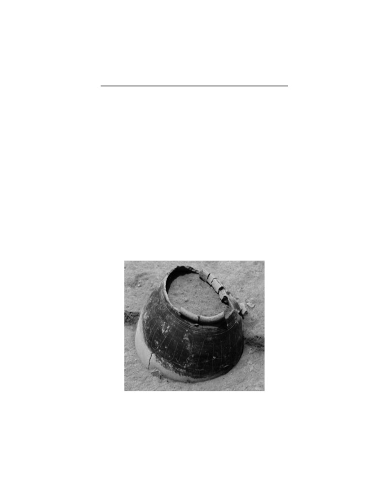

சங்க இலக்கிய
ஊர்ப் பெயர் ஆய்வு
முனைவர் கல்பனா சேக்கிழார்
நெய்தல் பதிப்பகம்
எண்.5, தங்கவேலு வைத்தியர் தெரு,
திருவல்லிக்கேணி, சென்னை- 5
04428483750/42075836
நூற்குறிப்பு
நூற்பெயர்
:
சங்க இலக்கிய ஊர்ப்பெயர் ஆய்வு
ஆசிரியர்
:
Kidt® கல்பனா சேக்கிழார்
பதிப்பாளர்
:
ஆனந்தன்
முதல் பதிப்பு
:
2017
தாள்
:
16.0 கி. மேப்லித்தோ
அளவு
:
1/8 தெம்மி
பக்கம்
:
104
படிகள்
:
1000
விலை
:
உரு. 100/-
நூலாக்கம் மற்றும்
:
கயல்விழி
அட்டை வடிவமைப்பு
அச்சு
:
பிராசசு இந்தியா
திருவல்லிக்கேணி, சென்னை - 5.
கட்டமைப்பு
:
இயல்பு (சாதாரணம்)
வெளியீடு
:
நெய்தல் பதிப்பகம்
எண்.5, தங்கவேலு வைத்தியர் தெரு,
திருவல்லிக்கேணி, சென்னை- 5
04428483750/42075836
நூல் கிடைக்குமிடம்
:
தமிழ்மண் பதிப்பகம்
2, சிங்காரவேலர் தெரு,
தியாகராயர் நகர், சென்னை -600 017
தொ.பே: 2433 9030
அறிமுகவுரை
பேராசிரியர் கல்பனா உரத்தநாடு வட்டம், ஒக்கநாடு கீழையூர்
கிராமத்தைச் சேர்ந்தவர். இளங்கலை, முதுகலை, முனைவர்
பட்டங்களைத் திருமணத்திற்குப் பிறகு தம் அருமைத் துணைவரின்
தோன்றாத் துணையால், அண்ணாமலைப் பல்கலைக்கழகத்தில்
படித்துப் பட்டங்களைப் பெற்றவர். தமிழரின் வாழ்வியல் நெறி
களை நெறிப்படுத்திக் கூறும் தமிழர் தம் அறநூலாம் திருக்குறளை
ஆய்வுப் பொருளாக எடுத்து முனைவர் பட்டத்தைப் பெற்றவர்.
தமிழர் மறுமலர்ச்சிச் சிந்தனையாளர்களாகத் திகழ்ந்த
பெரியார், பாரதியார், பாரதிதாசன் போன்ற பெருமக்கள் காண
விரும்பிய பெண்விடுதலை, பெண்கல்விக்குச் சான்றாகத் திகழும்
பெண்மக்களுள் இவரும் ஒருவர். குடும்ப வாழ்க்கையில் ஒரு பெண்
எப்படி இருக்கவேண்டும் என்பதற்கு எம் கண்முன்னே சான்றாக
வாழ்ந்து வருபவர். பிறந்த குடும்பத்திற்கும், புகுந்த குடும்பத்திற்கும்
பெருமைத் தேடித் தரும் தங்கையின் தமிழ்ப்பணி தொடர
வாழ்த்துகிறேன்.
இவருடைய பேருழைப்பால் உருவான 1. சங்க இலக்கிய
ஊர்ப்பெயர் ஆய்வு 2. தமிழர் அறமரபு ஆகிய இரு நூல்களையும்
நெய்தல் பதிப்பகம் வழியாக வெளியிடுவதில் பெருமகிழ்ச்சி அடைகிறேன்.
தமிழ்க்காப்புப் பணியிலும், தமிழ் மீட்புப் பணியில் மேலும் மேலும்
உழைத்துத் தாய்த் தமிழுக்கு அரணாக இருக்க விரும்புகிறேன்.
தமிழை உயிர்மூச்சாகக் கொண்டு வாழும் தமிழ்ச்
சான்றோர்களாம் முதுமுனைவர் இளங்குமரனார், மறைந்த
பேராசிரியர் விருத்தாசலனார் போன்ற பெருமக்களின்
வழிகாட்டுதலுடன் தமிழாய்வுக் களத்தில் தம் காலடிச் சுவடுகளை
ஆழமாகப் பதித்து, தமிழ் உலகம் போற்ற வாழ வாழ்த்துவதுடன்,
இவரின் தமிழ் ஆய்வுப் பணிக்கு உற்ற துணையாய் இருந்து உதவும்
வாழ்க்கைத் துணைவர் மருத்துவர் சேக்கிழாரையும் நெஞ்சம்
நிறைந்து வாழ்த்துகிறேன்.
இவ்விரு நூல்களையும் நெய்தல் பதிப்பக உரிமையாளர் நண்பர்
ஆனந்தன் அவர்கள் வெளியிட்டுள்ளார். தமிழாய்வுக் களத்தில் தம்
கால்களை ஆழமாகப் பதித்து வரும் இளம் தமிழ் அறிஞரான
முனைவர் கல்பனா சேக்கிழார் போன்ற தமிழ் அறிஞர்களின்
நூல்களை தொடர்ந்து வெளியிட்டுத் தமிழ்நூல் பதிப்பில் தனி
முத்திரை பதிக்க வாழ்த்துகிறேன்.
அன்புடன்
கோ. இளவழகன்
4
சங்க இலக்கிய ஊர்ப்பெயர் ஆய்வு
முன்னுரை
சங்க இலக்கியம் தமிழரின் முதுசம். அவை தமிழரின் சமூக,
பண்பாட்டு வரலாற்றினைக் கட்டமைப்பதற்கு முதன்மைச்
சான்றுகளாக இருப்பவை. பண்டைக் கால மக்கள்
வாழ்விடங்களை அறிய தொல்லியல் அகழ்வாய்வுகள் துணை
செய்தாலும், உறுதி செய்வதற்கு சங்க இலக்கியங்களில்
காணப்பெறும் ஊர்ப்பெயர்கள் பயன்படுகின்றன. எங்கே
வரலாறு மௌனம் சாதிக்கத் தொடங்குகிறதோ அங்கே இடப்
பெயர்களும், ஊர்ப்பெயர்களும் தம் வாய்திறந்து பேசட்
தொடங்கும் என்று கூறுவதற்கு இணங்க ஊர்ப்பெயர்கள் மனித
இனத்தின் வரலாற்றைச் சுமந்துள்ளன. எனவே இடப்பெயர்கள்
எல்லாம் மனிதனின் மொழிமரபையும், பண்பாட்டையும்
வளர்க்கின்றன. மனிதகுலம் தோன்றிய காலத்திலேயே
பெயர்களும் தோன்றியிருக்க வேண்டும். எனவே மனித
இனத்திற்குரிய பழமை, பெயர்களும் உண்டு. ஒருவன்
இயற்கையில் தான் கண்ட உயிரினங்களை, பொருட்களை,
இடங்களைப் பிறருக்குத் தெளிவாகவும் குறிப்பாகவும்
உணர்த்தும் பொருட்டு அமைத்துக் கொண்ட முறையே
பெயரமைப்பாகும். இடப்பெயர்களும் இவ்வாறே தோன்றி
யிருத்தல் வேண்டும்.
வெவ்வேறு இடங்களில் இடம்பெயர்ந்து வாழ
தலைப்பட்ட மானுட இனம், தாங்கள் வாழும் பகுதிகளை
அடையாளப்படுத்துவற்கு, இயற்கை அமைப்பில் உள்ள
பெயர்களை ஊர்களுக்கும் பெயர்களாக்கினர். இந்த
அமைப்பினைத் தொல்காப்பியம் தொடங்கி இன்று வரையுள்ள
இலக்கியங்களின் வாயிலாக அறியலாம். திணை
அடிப்படையில் நிலத்திணைப் பகுத்தத் தொல்காப்பியர்
குறிஞ்சி, முல்லை, மருதம், நெய்தல், பாலை என இயற்கை
அமைப்பை ஒட்டியே பாகுபடுத்துகிறார். இத்திணை அமைப்பு
களுக்கு ஏற்ற வகையில் ஊர்ப்பெயர்களையும் அமைகின்றார்.
5
முனைவர் கல்பனா சேக்கிழார்
ஒரு மனிதன் இன்னொருவனிடமிருந்து வேறுபடுத்த
ஆட்பெயரையும், ஒரு இனத்தை இன்னொரு இனத்திடமிருந்து
வேறுபடுத்த இனப்பெயரையும், ஒரு பொருளை இன்னொரு
பொருளிடமிருந்து வேறுபடுத்த பொருட்பெயரையும்
வழங்கியதைப் போன்று நிலத்தின் ஒரு பகுதியை இன்னொரு
பகுதியிலிருந்து வேறுபடுத்திக் காட்ட, இடப்பெயர்களை
அமைத்துக்கொண்டனர் எனலாம். மலை, குகை, காடு, ஆறு,
குளம், குன்று, பள்ளம் என இயற்கையில் வேறுபட்டிருந்த நில
அமைப்புக்கேற்ப இடங்களை வேறுபடுத்தி அறிந்தபின்
ஆரம்பகால மனிதன் ஒரு குழுவாக, சமூகமாக, ஆங்காங்கே ஒரு
பகுதியில் சிறிது காலம் வாழத் தொடங்கிய பின்னர்
குடியிருப்புகளும், பெயர்களும் தோன்றியிருக்க வேண்டும்.
மக்கள் தொகை அதிகரிக்கவே, மனிதன் புதிய புதிய
குடியிருப்புகளை அமைத்து அவற்றிற்குப் புதுப்புதுப்
பெயரையும் அளிக்கின்றான். இம்முறை இன்றும் தொடர்ந்து
வரும் ஒன்றாகும். ஒரே பெயரால் அறியப்பட்ட ஒரு பரந்த
நிலப்பகுதிக்குள் பல்வேறு இடப்பெயர்களும் தோன்றுவதற்கு
இதுவே காரணம் எனலாம். மக்கள்தொகை பெருகப் பெருகப்
புதிய குடியிருப்புகளும் அதிகரித்துக் கொண்டேயிருக்கும்.
இந்நிலையில் மனிதகுல வரலாற்றின் தொடர்ச்சியாகச் சில
செய்திகளை இடப்பெயர்கள் நமக்கு உணர்த்துகின்றன.
இடப்பெயர்களின் முக்கியத்துவம்
பெயர்கள் என்பது வெறும் வார்த்தைகளல்ல. அவற்றுள்
புராண இதிகாசச் செய்திகள், நம்பிக்கைகள், வரலாறு, பழக்க
வழக்கங்கள் இவையெல்லாம் பொதிந்து காணப்படுகின்றன.
அயோத்தி, குருஷேத்திரம், துவாரகை போன்ற இடப்பெயர்கள்
இராமாயண, மகாபாரத இதிகாசச் செய்திகளை உணர்த்து
கின்றன. கங்கை கொண்ட சோழபுரம், முடிவைத்தான் ஏந்தல்,
விழஞான இராஜேந்திர சோழ பட்டணம் போன்ற இடப்
பெயர்களில் வரலாற்றுச் செய்திகள் அடங்கியிருக்கக்
காணலாம். புதியதாக அமைக்கப்பட்ட குடியிருப்புப் பகுதி
களுக்குப் பெரும்பாலும் கடவுள் பெயர்களை வழங்கியிருக்கக்
காணலாம். அரசர்களின் நினைவாக அழகிய பாண்டிபுரம்,
வீரபாண்டிய மங்கை மாநகரம், சேரமான் தேவி போன்ற
பெயர்களைக் காணலாம். தற்காலத்தில் தலைவர்கள் பெயர்
களாகக் காந்திபுரம், பாரதி நகர் போன்ற பெயர்களும், தமிழ்
நாட்டில் பெரியார் மாவட்டம், முத்துராமலிங்கத் தேவர்
மாவட்டம், அண்ணா மாவட்டம் என முன்பு அரசியல்
தலைவர் பெயர்களைச் சூட்டியிருந்ததும் காணத்தக்கது.
6
சங்க இலக்கிய ஊர்ப்பெயர் ஆய்வு
பழங்காலத்தில் மரம், செடி, கொடி, பறவை, விலங்குகள்,
நீர்நிலைகள் இவற்றின் அடிப்படையில் பெரும்பான்மையான
இடங்கள் பெயர் பெற்றன. அக்கால மக்கள் இயற்கையோடு
ஒட்டி வாழ்ந்த நிலையினையே இத்தகைய பெயரமைப்புகள்
காட்டுகின்றன. தற்காலத்தில் இந்நிலை மாறி வருகிறது.
இவ்வாறு காலந்தோறும் பெயரமைப்புகளில் ஏற்படும்
மாற்றங்கள் மனிதனின் பண்பாட்டு, நாகரிக வளர்ச்சியினைக்
காட்டுகிறது.
ஊர்ப்பெயர் ஆய்வின் தேவை
இவ்வாறு பழமையின் எச்சங்களாகவும், புதுமையின்
கண்ணாடிகளாகவும் விளங்கும் இடப்பெயர்களை ஆய்வதன்
மூலம் வரலாறு, பண்பாடு, மொழியியல் ஆகிய துறைகளுக்கு
ஏற்படும் பயன்கள் பலவாகும். பழங்காலச் சாசனங்கள்
இலக்கியங்கள் இவற்றில் காணப்படும் இடப்பெயர்களை
ஆராய்தல், தற்காலத்தில் வழக்கத்திலிருக்கும் பெயர்களை
ஆராய்தல் ஆகிய இரு நிலைகளில் இடப்பெயர்களை
ஆராயலாம். பழங்காலச் சாசன இலக்கியங்களில் இடம்பெறும்
இடப்பெயர்களை ஆராய்வதன்மூலம் அக்கால மக்களின்
பண்பாடு, வரலாறு போன்றவற்றை ஓரளவு தெரிந்து
கொள்ளலாம். ஒரு நாட்டின் பழங்கால நில அமைப்பு, அக்
காலத்தில் வழங்கிவந்த இடப்பெயர்கள் காலந்தோறும்
எவ்வெவ்வாறு உருமாற்றம் பெற்றுள்ளன என்பதையும் பழங்
காலப் பெயர்களை ஆய்வதன் வழியாக அறிந்து கொள்ளலாம்.
மேலும், அக்கால மொழிநிலை காலந்தோறும் ஒரு மொழியில்
ஏற்படும் மாற்றங்கள் முதலியவற்றைத் தெரிந்து கொள்ளவும்
இவ்வாய்வு துணைசெய்யும்.
இந்நூல் உருவாக்கத்திற்குக் காரணமாக அமைந்தவர் என்
கணவர் மருத்துவர் மு. சேக்கிழார் அவர்கள். நூலாக்கம்
சிறப்பாகவும் விரைவாகவும் வெளிவர உதவியவர். என்
வாழ்க்கையின் வழிகாட்டி, தமிழ்மண் பதிப்பக உரிமையாளர்
ஐயா கோ. இளவழகனார் அவர்கள். இறுதிப் பிழைத்திருத்தம்
செய்துகொடுத்தவர் பேராசிரியர் முனைவர் சோ.கண்ணதாசன்
அவர்கள். நூல் வடிவாக்கம் செய்தவர் திருமதி ப.கயல்விழி
அவர்கள். இவர்கள் அனைவருக்கும் என் நெஞ்சம் நிறைந்த
நன்றியினைத் தெரிவித்துக்கொள்கிறேன்.
முனைவர் கல்பனா சேக்கிழார்
முனைவர் கல்பனா சேக்கிழார்
7
உள்ளடக்கம்
1.
ஊர்ப்பெயர் ஆய்வு வரலாறும் கோட்பாடுகளும்
9
2. ஊர்ப் பெயர் அமைப்பும் ஊர்ப் பெயர்களுக்கு
இடையேயான தொடர்பும்
26
3. தொல்லியல் ஆய்வுகளும் சங்க இலக்கிய
ஊர்ப்பெயர்களும்
70
4. முடிவுரை
86
5. சங்க இலக்கிய ஊர்ப்பெயர்கள்
88
6. நோக்கு நூல்கள்
97
8
சங்க இலக்கிய ஊர்ப்பெயர் ஆய்வு
1. ஊர்ப்பெயர் ஆய்வு வரலாறும்
கோட்பாடுகளும்
ஆதியில் குழுக்களாக வாழத்தலைப்பட்ட மானுட
கூட்டம், ஓரிடத்தில் வசித்தது. பின்பு மனித தேவைகள்,
வாழ்க்கை முறைகள் ஆகியவற்றில் ஏற்பட்ட மாற்றங்களினால்
புலப்பெயர்வு தொடங்கியது. பல இடங்களுக்குப் புலம்
பெயர்ந்த மக்கள் தங்கள் வாழும் இடங்களை அடையாளப்
படுத்திக் கொள்ளவும், வேறுபடுத்திக் காட்டவும், வசிக்கும்
இடங்களுக்குப் பெயர்களை வைக்கத் தொடங்கினர்.
இயற்கையோடு இயைந்த வாழ்க்கை பண்டு இருந்ததால்
பெரும்பாலும், சுற்றுச்சூழலில் காணப்பட்ட இயற்கை
அமைப்பை அடிப்படையாக வைத்தே ஊர்ப்பெயர்களை
வைக்கத் தொடங்கினர். காலப்போக்கில் அப்பெயர்கள்
நிலைபெற்றன. ஆனாலும் சமூக, அரசியல், பொருளாதார
மாற்றம், பிற சமய கலப்பு, பண்பாட்டு ஊடுறுவல் ஆகிவற்றால்
ஊர்ப்பெயர்கள் மாற்றம் அடைந்தோடு, மக்கள் வழக்கில்
திரிந்தும், மருவியும் வழங்கி வந்திருக்கின்றன. மேலும் வேறு
வேறு இடங்களுக்குப் புலம் பெயர்ந்து செல்லும் பொழுது,
தாங்கள் வசித்த ஊர்ப்பெயர்களையும் சுமந்துகொண்டு சென்று,
அப்பகுதியின் மொழிச் சூழலுக்கு ஏற்ப அப்பெயரையே
வழங்கியும் இருக்கின்றனர்.
பெயர்களின் பயணம் “சிந்துவெளித் தமிழ்ப் பெயர்கள்”
என்னும் நூலில் ஆர். பாலகிருஷ்ணன் ‘ஹரப்பா நாகரீகத்தின்
மொழியைக் கண்டறிவதற்கு ஹரப்பா பகுதியில் வழங்கும்
இடப்பெயர்கள் உதவக்கூடும் என்று அஸ்கா பர்ப்போலா
நம்புகிறார். மனித குலப் பண்பாட்டு வரலாறு ஒரு வகையில்
பயணங்களின் வரலாறே. பயணப்பட்ட மனிதர்களோடு
பயணித்தது ஊர்ப்பெயர்களும் தான். அப்படி உலாப்போன
10
சங்க இலக்கிய ஊர்ப்பெயர் ஆய்வு
ஊர்ப்பெயர்களின் தடங்களும், தடயங்களும் பூமியின்
முதுகின் ஒவ்வொரு அங்குலத்திலும் உறைந்து கிடக்கின்றன -
பழைய பயணங்களின் பதிவுகளாய் (2010 : 6) என்று
குறிப்பிடுவது போல மனித சமூக வரலாற்றை எழுதவேண்டு
மென்றால் ஊர்ப்பெயர் ஆய்வுகள் நிகழ்த்தாமல் அது
சாத்தியமாகாது, முழுமைபெற்றதும் ஆகாது. ஊர்ப் பெயராய்வு
வரலாறு, இலக்கியம், இலக்கணம் மொழியியல் என்பவற்றோடு
பின்னிப் பிணைந்துள்ள ஒரு நாட்டின் பழைய வரலாற்றினை
அறிய உதவும் வாயில்களுள் ஊர்ப் பெயராய்ச்சியியல் முக்கியப்
பங்கு வகிக்கிறது எனலாம். (1992 : அணிந்துரை) அந்த வகையில்
மேலை, கீழைத் தேயங்களில் ஊர்ப்பெயர்கள் குறித்து நிகழ்த்தப்
பட்ட ஆய்வுகளையும், அவர்கள் ஊர்ப்பெயர் ஆய்வுகளுக்காக
வகுத்துக்கொண்ட கோட்பாடுகளைக் குறித்தும், அவற்றை
உள்வாங்கி கொண்டு தமிழகத்தில் ஊர்ப்பெயர் குறித்து
இதுவரை நிகழ்த்தப்பட்டுள்ள ஆய்வுகள் பற்றியும் குறிப்பாகச்
சங்க இலக்கியங்களில் இடம்பெற்றுள்ள ஊர்ப்பெயர் பற்றி
இதுவரை மேற்கொள்ளப்பட்ட ஆய்வுகளைப் பற்றியும்
ஆராய்வதாக இவ்வியல் அமைகின்றது.
பல நூற்றாண்டுகளாக நடந்துவரும் பூகோள மாற்றங்கள்,
மக்களின் இடப்பெயர்ச்சி, அவர்களிடையே நிகழ்ந்த போர்
வெறியாட்டம் முதலியவற்றால் மங்காமல், அழிவுறாமல்
நிலைத்து நிற்கும் ஆற்றல் இடப்பெயருக்கு உண்டு. (2007: 213)
இடப்பெயர்கள் பல கதைகளையும், மரபுகளையும் சுமந்து
கொண்டு இருக்கின்றன. பண்பாட்டுக் கலைகளைப்
பிரதிபலிக்கும் ஆற்றலும் வழக்கிலுள்ள அல்லது இறந்தொழிந்த
மொழிகளைப் பற்றிய செய்திகளைக் காப்பதும் இடப்பெயரால்
தான் இயலும். முன்னிருந்த ஆனால் இப்போது அழிந்துபட்ட
குடியிருப்புக்கள், மலைகள், குறிப்பாக ஆறுகள் முதலியவற்றின்
பெயர்கள் மாறாமல் பல நூற்றாண்டுகள் வரை மாறாமல்
நிலைத்து நிற்கும். எனவே இடப்பெயர்கள் தரை மட்டத்தில்
காணும் வரலாற்றுச் சிதறல்கள்.
வரலாறு எழுதுகைக்கு முக்கியத் தரவுகளாக இடப்
பெயர்கள் விளங்குகின்றன. அவை புனைவுகளை உள்ளடக்கி
இருந்தாலும், அவை உண்மைகளைச் சுமந்து கொண்டு
முனைவர் கல்பனா சேக்கிழார்
11
காணப்படுகின்றன. அழிந்த மொழிகளின் சொற்களை இடப்
பெயர்கள் சுமந்து கொண்டு இருக்கின்றன. இடப்பெயர்களை
மொழியியல் அடிப்படையில் ஆய்வுக்கு உட்படுத்தும் பொழுது
மனித இனம் உலகின் எந்தெந்த பகுதிகளுக்குப் புலம்
பெயர்ந்துள்ளது என்பதையும் அறியமுடியும்.
இடப்பெயர் ஆய்வின் முக்கியத்துவம் மேலை நாடுகளில்
18ஆம் நூற்றாண்டுகளில் உருப்பெறத் தொடங்கின. தொல்
மனித நாகரிகப் பண்பாட்டினை வரைவு செய்வதற்கும், காலம்
தோறும் ஊர்ப்பெயர்கள் அடைந்துள்ள மாற்றத்தினை அறியும்
நோக்கிலும் ஊர்ப்பெயராய்வு வளரத் தொடங்கியது. அதனை
ஒரு தனித் துறையாகவும் வளர்த்தெடுக்க முனைந்தனர். ஊர்ப்
பெயரோடு பல்வேறு புனைகதைகள் சேர்ந்தே வழக்கில்
காணப்படுகின்றன. அவற்றையெல்லாம் முறைப்படுத்தி, அறிவியல்
வழிப்பட்ட ஆய்வு முறையினை மேலைநாடுகளில் மேற்
கொண்டனர்.
மேலைதேயகளில் ஊர்ப்பெயராய்வு
இடப்பெயர் பற்றி ஆய்வு நிகழ்த்திய பேராசிரியர்
கி. நாச்சிமுத்து மேலைநாடுகளிலும், இந்தியாவிலும் இடப்
பெயர்கள் தொடர்பாக நிகழ்த்தப்பட்ட வரலாற்றினைத் தம்
ஆய்வில் பதிவு செய்துள்ளார். 1980க்கு முன் வரை நிகழ்த்தப்
பட்ட ஆய்வுகளைத் தொகுத்துக் கொடுத்துள்ளார். அவற்றை
ஒருவாறு வரையறுத்துக்கொண்டு, அதற்குப் பிறகு நிகழ்ந்துள்ள
ஆய்வுகளையும் தொகுத்துக் காண வேண்டியுள்ளது. சமூக,
அரசியல் நிலையில் ஊர்ப்பெயர் ஆய்வுகள் எவ்வகையான
தாக்கத்தினை நிகழ்த்தியுள்ளன என்பதையும் அறிய
வேண்டியுள்ளது.
கோட்பிரைடு வில் ஹெல்ம்லெய்ப்னிஷ் (1768) தான் இடப்
பெயராய்வுகளின் முக்கியத்துவத்தை முதலில் எடுத்துரைத்தவர்.
1840வரை ஐரோப்பிய நாடுகளில் நடந்த தொடக்க முயற்சி
நடைபெற்றுள்ளது. 1841லிருந்து முறையான ஆய்வுக் காலக்
கட்டம் தொடங்குகின்றது. மொழிநூல் வளர்ச்சி - ஊர்ப்பெயர்
ஆய்வுகளுக்கு ஒர் உந்து சக்தியாக அமைந்தது. Foestermann இன்
ALT - Deusches Hamenbuch, Issac Taylors இன்Words and Place
12
சங்க இலக்கிய ஊர்ப்பெயர் ஆய்வு
முதலியவை இக்காலத்திய முக்கிய முயற்சிகளாம். 1871 -1885
காலத்தில் ஊர்ப்பெயராய்வு செழித்து வளர்ந்தது. J. J.Egli -
இக்காலத்தில் ஊர்ப்பெயராய்வு செய்தவர்களில் முக்கியமானவர்.
இதற்குப் பிறகு பழம் வரலாற்றுப் பாரம்பரியமிக்க
ஐரோப்பாவிலும், இங்கிலாந்திலும் ஊர்ப்பெயர்கள் மிக
கவனத்தோடு ஆராயப்பட்டன. தனிப்பட்ட அறிஞர்களும்
அரசுகளும் இவற்றை ஆராயவும் பெயர்களைத் திட்டப்
படுத்தவும் தனிப்பட்ட அமைப்புகளை நிறுவினர்; விரிவான
அகழாய்வுகள் செய்து அவற்றைத் தொகுத்து ஆவணக்
காப்பகங்களை ஏற்படுத்தினர். அடிக்கடி அனைத்துலகப்
பெயராய்வு - மாநாடுகளும் கருத்தரங்குகளும் நடக்கின்றன.
இடப்பெயர்களில் பி.எச்.டி., முதலிய ஆய்வுகளை மேற்
கொள்ளுமாறு மாணவர்களையும் ஊக்குவிக்கின்றனர்.
அடால்ப்பாக் (German), Dauzat ( Franch) A. H. Smith, Sir.F.
Stenton Allen Mawer, Eilert Ekwal ( England) G.R.Stewart,
E.Pulgram, Gardiner, F.L. Utley (U. S. A), H.Draye (Belgium)
முதலியோர் இவ் ஆய்வு நெறிமுறையோடு வளரச் செய்துள்ள
பணி குறிப்பிடத்தக்கவை.
சுமார் ஐம்பது ஆண்டுகளுக்கு முன்பு நிறுவப்பட்ட
ஆங்கில இடப்பெயராய்வுக் கழகம் உலக இடப்பெயராய்வு
முயற்சிகளில் ஒரு முன்னோடியாகும். இக்கழகம் இப்போது
நாட்டிங்காம் பல்கலைக்கழக ஆங்கில மொழித்துறையில்
இருந்து செயல்பட்டு வருகிறது. இக்கழகம் ஆண்டுதோறும்
கருத்தரங்குகள் நடத்துகின்றது. ஆய்விதழ் ஒன்றையும்
வெளியிடுகிறது. அதோடு, தனிப்பட்ட அறிஞர்களும்,
மொழித்துறைகளும் இடப்பெயராய்வு நடத்தத்தூண்டி
அதற்குரிய ஆலோசனைகள் அளிக்கிறது. அவ்வாறு திரட்டப்
பட்ட செய்திகளை - இதுவரை 50க்கு மேற்பட்ட நூல்களாக
வெளியிட்டிருக்கிறார்கள். சரியாகத் திட்டமிட்டுழைத்தால்
எத்தகைய வெற்றிகிடைக்கும் என்பதற்கு இ~து உதாரணம்.
ஸ்காட்லாந்திலும் இத்தகைய கழகங்களும்; ஆய்வுகளும்
நடக்கின்றன. அமெரிக்காவிலுள்ள அமெரிக்கப் பெயராய்வுக்
கழகம் Names என்ற இதழை 1952லிருந்து நடத்தி வருகிறது.
முனைவர் கல்பனா சேக்கிழார்
13
1923இல் பெல்ஜியத்திலுள்ள லூவெய்ன் நகரிலுள்ள
கத்தோலிக்கப் பல்கலைக் கழகத்தில் Pro. Von de Weyer ஆல்
பெயராய்வு நிறுவனம் ஒன்று (Institude of Onomastic Sciences)
நிறுவப்பட்டது.
1949இல் ஐரோப்பிய அறிஞர்களின்
முயற்சியால் Unesco சார்பில் அனைத்துலகப் பெயராய்வுக் குழு
(International Onamastics Centre) மேலே குறிக்கப்பட்ட
லூவெய்ன் நகரில் அமைக்கப்பட்டது. இவ்வமைப்பில்
ஐம்பதுக்கு மேற்பட்ட உலக நாடுகள் பங்கெடுக்கின்றன. இந்த
மையத்தின் நோக்கம் உலக இடப்பெயராய்வுகள் பற்றிய
செய்திகளையும் நூலடைவுச் செய்திகளையும் திரட்டித்
தருவதும், இடப்பெயராய்வு அறிஞர்களுக்கிடையே கருத்துப்
பரிமாற்றத்திற்கு உதவுவதுமாகும். இதுமற்றுமன்றி, மூன்றாண்டுக்கு
ஒருமுறை அனைத்துலகப் பெயராய்வு கருத்தரங்குகள்
நடந்துள்ளன. போன் மாநாடு 1981 ஆகஸ்டு மாதத்தில்,
அமெரிக்காவிலுள்ள அன் ஆர்பரில் நடந்தது.
1925லிருந்து அப்பல்கலைக்கழக ஆய்வு மாணவர்கள்
மூலம் சுமார் 200 பிளமிஷ் ஊர்களிலுள்ள இடப் பெயர்களைப்
பற்றித் திரட்டப்பட்ட பதினையாயிரம் துண்டுத் தாள்களையும்
அவற்றின் மைகிரோபிஷ் படிகளையும் அவர்கள் ஆவணக்
காப்பகத்தில் காணலாம். இவை பற்றி அவ்வப்போது பல தனி
ஆய்வுரைகளும் துண்டுகளையும் அடிப்படையாகக் கொண்டு
கம்ப்யூட்டர் மூலம் அகரவரிசையில் மொத்த அடைவும் பின்
முன்னான அடைவும் முக்கிய இடப் பெயர்கூறுகளின்
பட்டியலும் தயாரித்து வைத்திருக்கின்றனர்.
இவர்கள் 1950லிருந்து வெளியிடும் ஒனோமா என்ற
ஆய்விதழ் பெயராய்வு பற்றிய நூலடைவுக் குறிப்புகளையும்
செய்திகளையும் தாங்கி வருகிறது. ஜெர்மனியில் முன்பே பல
ஆய்வுகள் நடந்துள்ளன. தற்போது மைன்ஸ், பான், கீசன்,
சார்புரூய்க்கன் முதலிய பல்கலைக்கழகங்களில் இடப்
பெயராய்வுகள் தீவிரமாகச் செயல்பட்டு வருகின்றன.
சாய்புரூஸ்கனில், கீசனில் செய்வதைப் போன்று தற்போது
வயல் தோட்டப்பெயர்களைத் திரட்டும் பணியில்
&டவ;டுபட்டிருக்கிறார்கள். பழைய எழுத்துச் சான்றுகளிலுள்ள
வரலாற்றுப் பெயர்களையும் வழக்கிலுள்ள பெயர்களையும்
14
சங்க இலக்கிய ஊர்ப்பெயர் ஆய்வு
இரண்டு விதமான முறையில் திரட்டிக்கொடுக்கிறார்கள்.
அவற்றைக் கம்ப்யூட்டர் வழி பகுப்பாய்வு செய்கின்ற விதத்தில்
திரட்டி வருகிறார்கள் என்பது குறிப்பிடத்தக்கது.
ஆஸ்ட்டிரியாவில் பேரா.கிரான்ஸ்மேயர் போன்றோர்
தலைமையில் மிகப்பல ஆய்வுகள் நடந்துள்ளன. பிரான்சில்
மிகச்சிறந்த ஆய்வுகள் நடந்துள்ளதாக பேரா. எச். ட்ரையே
குறிப்பிடுகிறார். அது போலவே கிழக்கு ஐரோப்பாவிலுள்ள
பொதுவுடமை நாடுகளிலும், ருஷ்யாவிலும் சிறந்த இடப்
பெயராய்வுகள் நடந்துள்ளதை ஒனோமா இதழில் பார்த்தால்
அறியலாம். தொடர்ச்சியாக மேலைத்தேய பல்கலைக்
கழகங்களில் ஆய்வுகள் நடைபெற்று வருகின்றன. ஊர்ப்
பெயராய்வு முறைகளில் புதிய ஆய்வு முறைமைகள்
பயன்படுத்தப்படுகின்றன. ஊர்ப்பெயர்களோடு கலந்துள்ள
தொன்மங்களை அடிப்படையாகக் கொண்டும், அந்தந்த
ஊர்களின் நில எல்லையை வரைவு செய்வதற்கும் ஊர்ப்
பெயராய்வுகள் துணை செய்கின்றன.
அண்மை காலங்களில் இணையங்களில் பல்வேறு
நாடுகளின் ஊர்ப்பெயர்களைத் தொகுக்கும் முயற்சிகள்
மேற்கொள்ளப்பட்டுள்ளன. இதன் விளைவாக ஒரே
தன்மையுடன் இருக்கக் கூடிய ஊர்ப்பெயர்களை அடையாளம்
காணமுடிகின்ற சூழல் இன்று உருவாகியுள்ளது.
தொல்காப்பியத்தில் ஊர்ப்பெயர் குறித்த சிந்தனை
தமிழ் மக்களின் சமூகப் பின்புலத்தையும், வாழ்க்கைச்
சூழலையும், மொழி அமைப்பையும் அடிப்படையாகக்
கொண்டு உருவாக்கப்பட்டது தொல்காப்பியம். இந்நூல்
தமிழரின் தொல் மரபினை அறிவதற்கான அடிப்படை
மூலநூலாகவும், செம்மொழித் தகுதிக்கான தரவுகளைக்
கொண்டுள்ள முதன்மைப் பனுவலாகவும் விளங்குகின்றது.
தொல்காப்பியர் அற்றை நாளில் வழக்கிலும், செய்யுளிலும்,
பயின்ற வந்த மொழியை வரையறைபடுத்தி இலக்கணத்தை
உருவாக்கியுள்ளார். அவற்றுள் மக்கள் வாழக்கூடிய நிலப்
பகுதிகளைக் குறித்த சிந்தனைகளையும், நிலப்பெயர்களுக்குப்
பெயர் வைக்கும் முறை பற்றிய குறிப்புகளையும் பதிவு
செய்துள்ளார்.
முனைவர் கல்பனா சேக்கிழார்
15
பெயரியலில் சொல் பற்றி குறிப்பிடும் பொழுது,
சொல் எனப்படுவ பெயரேவினை என்று
ஆயிரண்டு என்ப அறிந்திசினோரே
(பெயரியல்.)
இடைச்சொல் கிளவியும் உரிச்சொல் கிளவியும்
அவற்று வழி மருங்கின் தோன்றும் என்ப
(பெயரியல்.5)
என்று நான்கு விதமாகக் கூறி, மேலும் பெயரின் விளக்கமாக,
நிலப்பெயர் குடிப்பெயர் குழுவின் பெயரே
வினைப்பெயர் உடைப்பெயர் பண்புகொள் பெயரே
பல்லோர்க் குறித்த திணைநிலைப் பெயரே
கூடிவருவழக்கின் ஆடு இயற்பெயர்
இன்றிவர் என்னும் எண்ணியற் பெயரொடு
அன்றி அனைத்தும் அவற்று இயல்பினவே
(பெயரியல்- 11)
என்று கூறுகின்றார்.
இந்நூற்பாவில், பெயர்களைப் பற்றிக் குறிப்பிடும்
பொழுது, நிலப்பெயரினையே முதலில் சுட்டுகின்றார்.
பொருளதிகாரத்திலும் முதற் பொருளுள் நிலமும் பொழுதும்
குறித்தே முதலில் கூறுகின்றார். ஆக நிலம் அது சார்ந்து வாழக்
கூடிய மனித சமூகம் கூட்டமாக ஒரே இடத்தில் வாழ்ந்த
காலத்திலிருந்து பிரிந்து வேறு வேறு இடம் நோக்கி நகரும்
பொழுது, தனித்து அடையாளப்படுத்துவதற்கான குறியீடாக
ஊர்ப்பெயர்கள் அமைந்தன. பொதுவாக மனிதன் தன்னைச்
சுற்றி இருந்த இயற்கை அமைப்பை ஒட்டி ஊர்ப்பெயர்களை
அமைத்துக்கொண்டான். அது பொதுப்பெயராக இருந்தது.
வேறு வேறு இடங்களுக்கு மானுடக் கூட்டம் பெயர்ந்து
சென்றபொழுது, முன்பிருந்த ஊர்ப்பெயருடன் வேறு
இணைப்புச் சொல்லையும் இணைத்துள்ளனர். அது சிறப்புப்
பெயராகக் கருதப்பட்டது. பார்ப்பனச்சேரி என்னும் ஊர்ப்
பெயரில் சேரி என்பது பொதுப்பெயர் பார்ப்பனர் என்பது
சிறப்புப் பெயர். இங்குப் பார்ப்பனர்கள் மிகுதியாக வாழக்கூடிய
பகுதியைக் குறிக்கும் வகையில் பார்ப்பனச் சேரி எனப் பெயர்
பெற்றது. தொல்காப்பியத்தில்,
16
சங்க இலக்கிய ஊர்ப்பெயர் ஆய்வு
ஒருபெயர் பொதுச்சொல் விரிபொருள் ஒழியத்
தெரிபுவேறு கிளத்தல் தலைமையும் பன்மையும்
உயர்திணை மருங்கினும் அ~றிணைமரு ங்கினும்
என்று வரக்கூடிய நூற்பாவுக்கு விளக்கம் கூறும்
உரையாசிரியர்கள் எயினநாடு, குற்றினைநாடு, கமுகந்தோட்டம்,
ஒடுவல்காடு என எடுத்துக்காட்டுத் தருகின்றனர். ஊர்ப்பெயர்
அமைப்பு முறைகள் என்னும் கட்டுரையில் கி.நாச்சிமுத்து
பொதுக்கூறுகள் தான் ஒரு ஊருக்குப் பெயராக அமைகின்றன.
நாளடைவில் ஒரே பொதுக்கூறுள்ள பல பெயர்களை
வேறுபடுத்த அடைகளைச் சேர்க்கின்றோம். இவ்வாறு ஒரே
பொதுக்கூறுள்ள பல பெயர்களை வேறுபடுத்திட அமையும்
அடைகளே சிறப்புக்கூறுகள் எனப்படும் என்று பொதுக்கூறு,
சிறப்புக் கூறு ஊர்ப்பெயரில் தோன்றுவதற்கான காரணத்தை
முன்வைக்கின்றார்.
பொருளதிகாரத்தில்
ஊரும் பெயரும் உடைத்தொழிற் கருவியும்
யாரும் சார்த்தி அவையவை பெறுமே
(தொல்.பொருள்.619)
எனத் தலைவனுடைய ஊரினைப் பற்றி தொல்காப்பியர்
குறிப்பிடுகின்றார். தொல்காப்பியத்தில் ஊர்ப்பெயர் பற்றியக்
குறிப்புகள் காணப்படுகிறது. ஆனால், விரிவான பதிவுகள்
காணப்படவில்லை.
தமிழக ஊர்ப்பெயர் ஆய்வுகள்
1.
ஊர்ப்பெயர் புனைவுகளை ஆதரித்துப் பொருள் கூறுதல்.
2. ஊர்ப்பெயர் புனைவுகளைக் கட்டுடைத்து அறிவார்ந்த
நிலையில் விவாதித்தல்.
என இரண்டு நிலைகளில் நிகழ்த்தப்பட்டுள்ளன. இலக்கியக்
காலத்தில் பாடப்பட்ட பக்தி பாடல்களில் தலபுராணங்கள்
பாடப்பட்டன. அவை மிகுதியாகப் புனைவுகளை ஆதரித்து
விளக்கம் அளிப்பவையாகவே அமைந்தன. பக்தி இலக்கியக்
காலத்தில் பாடப்பட்ட பாடல்களில் காணப்படும் ஊர்ப்
பெயர்களைக் கீழ்க்கண்டவாறு வகைப்படுத்திக் கூறலாம்.
முனைவர் கல்பனா சேக்கிழார்
17
1.
அடியார்கள் இறைத் தலங்களைப் பாடுகின்றனர்.
இதனால் கோயில் உள்ள ஊர்ப்பெயர்கள் சுட்டப்
பெறுகின்றன.
2.
ஊர்த் தோறும் சென்று இறைவனைப் பாடும் நிலையில்
பல ஊர்கள் தெரிய வருகின்றன. இருக்கும் இடத்தில்
இருந்து பாடும் நிலையிலும் சில ஊர்ப்பெயர்கள்
வெளிப்படுகின்றன.
3. அடியார்களின் வரலாறு சுட்டுமிடத்தில் அவர்கள் பிறந்த
இடம், சென்ற இடம் தெரிய வருகின்றன.
4.
ஒரே ஊரின் சிறப்பைப் பாடும் நிலையில், அதன்
பல்வேறு பெயர்களும், தோற்றம் பெறுகின்றன. தவிர
அரசியல் தொடர்பாகச் சில பெயர்கள் தெரிய
வருகின்றன.
இப்பாடல்களில் தலங்களின் சிறப்புகள் பாடப்படுகின்றனவே
ஒழிய அவ்வூர் குறித்த முழுவிபரங்களும் கொடுக்கப்படவில்லை.
தமிழகத்தில் 20ஆம் நூற்றாண்டில் மேற்கொள்ளப்பட்ட
ஊர்ப்பெயர் தொடர்பான ஆய்வுகளுக்கு அடிப்படையாக
18ஆம் நூற்றாண்டில் மேலைதேயங்களில் மேற்கொள்ளப்பட்ட
இடப்பெயராய்வு அமைந்தது. இத்துறையை அறிவியல்
வழிப்பட்ட ஆய்வுத்துறையாக வளர்த்தெடுத்தனர். இத்துறை
வரலாறு, மொழியியல் துறைகளில் அசைவுகளை ஏற்படுத்தியது.
அதன் காரணமாக இடப்பெயராய்வு உலகளவில் கவனப்
படுத்தப்பட்டு, மேற்கண்ட இரண்டு நிலைகளில் உலகளவிலும்
இந்தியாவிலும் குறிப்பாகத் தமிழகத்திலும் இடப்பெயர்
தொடர்பான ஆய்வுகள் மேற்கொள்ளப்பட்டன. வள்ளலார்
(1828-1874) ஊர்ப்பெயராய்வில் விருப்பம் காட்டினார்
என்றாலும் பெரிதாக &டவ;டுபடவில்லை. 1946இல் வெளியான
ரா. பி. சேதுப்பிள்ளையின் ஊரும் பேரும் என்னும் நூல்
படிப்பதற்குச் சுவையாக இருப்பினும் ஆய்வு தொய்வுடையதாக
அமைந்துள்ளது. (2008:206). திரிசிரபுரம் மகாவித்துவான்
மீனாட்சி சுந்தரம்பிள்ளை எழுதிய தல புராணங்களிலும்
ஊர்ப்பெயர் பற்றிய காரணங்கள் கூறப்பட்டுள்ளன. எனினும்
அக்காரணங்கள் புராண புனைவுகளின் அடிப்படையிலேயே
18
சங்க இலக்கிய ஊர்ப்பெயர் ஆய்வு
அமைந்துள்ளன. இது போன்ற செயல்பாடுகளில் ஊர்ப்
பெயர்களில் காணப்படும் புனைவுகளை ஆதரித்து அதற்கு
ஏற்றார் போல் விளக்கம் கூறிச்செல்லும் போக்கே
காணப்பட்டன.
மொழியியலின் வருகையால் ஊர்ப்பெயர் ஆய்வுகள்
அறிவார்ந்த தளத்தில் முன்னெடுக்கப்பட்டன, 1965இல் கேரளப்
பல்கலைக்கழகத்தில் எம்.லிட் பட்டத்திற்கு ஞானமுத்துவும்
டாக்டர் பட்டத்திற்கு கி.நாச்சிமுத்துவும், 1973இல் திருவேங்கடம்
பல்கலைக்கழகத்தில் டாக்டர் பட்டத்திற்கு ஆர்.விஸ்வநாத
ரெட்டியும் இத்தளத்தில் இயங்கி ஊர்ப் பெயராய்வில் புதுத்
தடத்தினை உருவாக்கினர். 1972இல் திருப்பதியில் அனைத்திந்திய
திராவிட மொழியியல் கழகம் தன்னுடைய இரண்டாவது
மாநாட்டை நடத்தியபொழுது திராவிட இடப்பெயராய்வுக்
கழகத்தைத் தோற்றுவித்தது. 1976இல் வால்டேர் நகரில் திராவிட
மொழியியல் கழகம் நடத்திய கிடுகு இராமமூர்த்தி நினைவு
இடப்பெயராய்வுச் சொற்பொழிவு முக்கியத்துவம் வாய்ந்த
தாகக் கருதப்பட்டது. இதன் விளைவாகச் சமூகப் பண்பாட்டு
மொழி அசைவுகள் ஊர்ப்பெயரில் ஊடாடிக் கிடக்கின்றன
என்பதையும், தொல் பொருளாய்வில் காணப் படாததும்,
வரலாற்றுச் சான்றுகளில் திரிபடைந்தும் அல்லது புறக்கணிக்கப்
பட்டுக் காணப்படுவதுமான மொழியியல் செய்திகளை இடப்
பெயர்கள் முழுமையாகத் தருகின்றன (1983:51) என்பதையும்
உணர்ந்து 1979இல் இந்திய இடப்பெயர் கழகம் மைசூரிலுள்ள
குவேம்பு வித்திதக் டிரஸ்டின் ஆதரவுடன் நிறுவி, பல
கருத்தரங்குகளை நடத்தியது. அதோடு Studies in Indian Places
Names என்ற பெயரில் ஆய்விதழையும் தொடர்ந்து நடத்தி
வருகின்றது. கல்வெட்டுகளும், செப்பேடுகளும், நாணயங்களும்,
மட்பாண்டங்களும் முதுமக்கள் தாழிகளும், தொல்லியல்
வரலாற்றினை அறியப் பெரிதும் உதவி செய்கின்றன.
அதுபோலவே சங்க இலக்கியங்களும் தொன்மையான
ஊர்ப்பெயர்கள் ஆய்வுக்கு உறுதுணை செய்கின்றன என்பதை
உணர்ந்த உலகத் தமிழாராய்ச்சி நிறுவனமும் ஊர்ப்பெயர்த்
தொடர்பான ஆய்வுகளில் &டவ;டுபட்டு 1983இல் கல்வெட்டுகளில்
ஊர்ப் பெயர்கள் என்னும் நூலை முதலில் கொண்டு வந்தது.
அதனைத் தொடர்ந்து சமகால ஊர்ப்பெயர்களையும்,
முனைவர் கல்பனா சேக்கிழார்
19
இலக்கியங்களில் காணப்படுகின்ற ஊர்ப்பெயர்களையும்
தொகுத்து ஆய்வு மேற்கொண்டுள்ளது. ஊர்ப்பெயர் ஆய்வின்
முக்கியத்துவத்தினைக் கருதி 2010இல் கோவையில் நடைபெற்ற
உலகத் தமிழ் செம்மொழி மாநாட்டில், ஊர்ப்பெயருக்கென்று ஒரு
அரங்கு உருவாக்கப்பட்டு ஊர்ப்பெயர் தொடர்பான
கட்டுரைகள் விவாதிக்கப்பட்டன.
பாட்டும் தொகையுமாகிய சங்க இலக்கியத்தின் மீதான
வாசிப்பும், ஆய்வும் பல்வேறு நிலையில் நிகழ்த்தப்பட்டுள்ளன.
சங்க இலக்கிய ஊர்ப்பெயர்களைத் தொகுத்து, ஆர்.ஆளவந்தார்
என்பவர் ஆய்வுகளை மேற்கொண்டார். எனினும் தொடர்ந்து
ஆய்வு நிகழ்த்துவதற்குரிய களமாகவே அத்துறை அமைந்துள்ளது.
சங்க இலக்கியங்களில் இடம்பெற்றுள்ள ஊர்ப்பெயர்களை
முழுமையாகத் தொகுத்து நிலவரைவுக்கு உட்படுத்தும் போது,
சங்க காலம் பற்றிய வரலாற்றுத் தெளிவும், பிற்காலங்களில்
குறிப்பாகச் சமய நிறுவனங்களின் பின்னணியாலும், காலனிய
ஆதிக்கத்தின் விளைவாலும் ஊர்ப் பெயர்கள் சிதைந்தும்,
திரிந்தும், மருவியும் இருப்பதை இனங்காண முடிகிறது.
ஊர்ப்பெயர் ஆய்வின் முக்கியத்துவத்தைப் பற்றிக் குறிப்பிடும்
ஆர். ஆளவந்தார் ,
ஊர்ப்பெயராய்வுகள் பழந்தமிழரின் இருப்பைப்
பறைசாற்றுவதோடு, ஊர்ப்பெயர்களை வைப்பதில்
நம்முன்னோர் ஓர் ஒழுங்குமுறையைப் பின்பற்றி இருப்பதையும்
அறியலாம். எங்கே வரலாறு மௌனம் சாதிக்கத் தொடங்கு
கின்றதோ அங்கே இடப்பெயர்களும் ஊர்ப் பெயர்களும் தம்
வாய்திறந்து பேசத்தொடங்கும். வெவ்வேறு வகையான
உருவங்களைக் கொண்ட ஊர்ப்பெயர்களில் மனித இனத்தின்
அனுபவம் பொதிந்துள்ளது. எனவே இடப் பெயர்கள் எல்லாம்
மனிதனின் மொழிமரபையும் பண்பாட்டையும் வளர்க்கின்றன.
இதனடிப்படையில் ஊர்களை இனங்காணுவது மனித
இனத்தின் முக்கிய நடத்தையை உருவாக்குகின்றது (1984:10)
என்கிறார்.
எனவே, ‘எல்லாச் சொல்லும் பொருள்குறித்தனவே’
(தொல்.சொல்.640) என்னும் தொல்காப்பியரின் கூற்றின்படி,
ஊர்ப்பெயர்களும் ஏதோ ஒரு பொருளினைப் பொதிந்துக்
20
சங்க இலக்கிய ஊர்ப்பெயர் ஆய்வு
கொண்டு உள்ளன. அப்பொருள் இயற்கை சார்ந்தோ, மக்களின்
வாழ்வியல் நிகழ்வுகள் கலந்தோ இருப்பதனால், ஊர்ப்பெயரினை
அறிந்துகொள்ளுதல் இன்றைய தேவையாகவுள்ளது. சங்க
இலக்கியப் பாடல்களில் மட்டுமல்லாமல், அப்பாடல்களைப்
பாடிய புலவர்களும் தாங்கள் சார்ந்த ஊரினை அடையாளப்
படுத்தும் நோக்கத்துடன் தங்களுடைய பெயருடன் ஊரின்
பெயரினையும் இணைத்துள்ளனர். சங்க இலக்கியத்தில்
300க்கும் மேற்பட்ட புலவர்களின் பெயர்கள் ஊர்ப்பெயர்களின்
அடையுடனே காணப்படுகின்றன.
சங்க இலக்கியங்களில் இயற்கையைச் சார்ந்தும் (குன்றம்,
கொல்லி, முதிர மலை), நீர்நிலையமைப்பாலும் (அலைவாய்,
கண்டவாயில், துறையூர்) தாவரத்தின் பெயராலும் (அரையம்,
மருவூர், மல்லி) விலங்கின் பெயராலும் (எருமைவெளி, செங்கண்மா)
தெய்வத்தின் பெயராலும்
(இருந்தையூர்) அரசர்களின்
தொடர்பாலும் (கிள்ளி மங்கலம், கோநாடு), நிலப்பிரிவின்
தன்மையாலும் (நெய்தலங்கானம், பட்டினப் பாக்கம், வயலூர்),
தொழிற் பெயரினாலும் (செயலூர், கொற்கை) பொருட்
பெயராலும் (அள்ளூர், ஊணூ
ர், கள்ளூர்), திசைப்பெயராலும்
(குடந்தை, குடவாயில், இடைக்காடு), போர்முனைத்
தொடர்பாலும் (அட்டவாயில், முனையூர்), இருக்கும் இடத்தின்
தன்மையாலும் (&டவ;ரந்தை, உறந்தை, ஏரகம்) பிற நாட்டுப்
பெயர்களும் (அடவிநாடு, அங்க நாடு, துளுநாடு, புன்றாளக
நாடு) என 300க்கும் மேற்பட்ட ஊர்ப்பெயர்கள் இடம்
பெற்றுள்ளன.
சங்க காலத்தில் நகரங்களாக விளங்கியவைகளுள் சில,
பிற்காலத்தில் தங்கள் அடையாளங்களை இழந்து, வளர்ச்சி
யடைந்த நகரத்தின் அங்கமாக மாறிவிடுதும் உண்டு. பாண்டிய
மன்னர்கள் ஆண்ட மதுரை இன்றும் தன் அடையாளத்தை
இழக்காமல், இயங்கிக் கொண்டு இருக்கின்றது. அதே நேரத்தில்
சேரர் ஆண்ட வஞ்சி பற்றி முடிவு செய்யமுடியாத சூழல்.
எடுத்துக்காட்டாக, சோழ மன்னர்களின் தலை நகரமாக
விளங்கிய உறந்தை தன் அடையாளத்தை இழந்து திருச்சிராப்
பள்ளியின் ஒரு பகுதியாக இன்று மாறிவிட்டது. இவ்வுறந்தை
நகரமே தற்பொழுது உறையூர் என அழைக்கப்படுகிறது. இவ்
உறந்தை ஒவ்வொரு காலகட்டத்திலும் எவ்வாறு மாற்றத்திற்கு
முனைவர் கல்பனா சேக்கிழார்
21
உட்பட்டு வந்துள்ளது என்பதைச் சமூக வரலாற்றுப்
பின்புலத்தோடு ஆராயமுடியும்.
ஊர்ப்பெயராய்வு - கோட்பாடுகள்
ஊர்ப்பெயர்கள் தோன்றி இருப்பதற்கான பல்வேறு
காரணங்கள் முன்வைக்கப்படுகின்றது. அதே போன்று
அரசியல், சமூக, பண்பாட்டு மாற்றங்கள் நிகழும் போது பழைய
ஊரின் பெயர்களும் மாறியும் வந்துள்ளன. ஊர்ப்பெயராய்வு
மேற்கொண்ட ஆர். ஆளவந்தான் சில கோட்பாடுகளை
முன்வைக்கின்றார். அவற்றை ஒருவாறு தொகுத்துக்கொண்டு
மேலும் சில வரையறைகளை உருவாக்க வேண்டிய தேவை
யுள்ளது.
••
இடப்பெயர்களும், ஊர்ப்பெயர்களும் காரணமின்றி
தோன்றியிருக்க முடியாது
•
இவை தமக்கென மிகப் பழைய மரபைப்
பெற்றிருக்கின்றன.
•
புதிது புதிதாகத் தோன்றும் பெயர்களும், காரணம் மரபு
ஆகியவற்றை அடிப்படையாகக் கொண்டே தோன்றும்.
•
பேச்சு வழக்கில் இப்பெயர்கள் தம் வடிவில் சிதைவு
பெற்றுத் தோன்றும்
•
காலப்போக்கில் இவை மரூஉ மொழியாகி
வழங்கப்பட்டு வரவும் கூடும்
•
பிறமொழியாளர்களால் முழுவடிவம் மாறுபட்டுக்
கூறப்பட்டும் வரக்கூடும்.
•
வரலாற்றில் இடம்பெறும் பெயர்கள் பல மாறுபட்டும்
காணக்கூடும்
•
இலக்கியப் பெயர்க்கும் வரலாற்றுப் பெயர்க்கும்
வேறுபாடு இருக்கக் கூடும்.
•
கல்வெட்டுகளில் திரிந்தும், சிதைந்தும் காணக்கூடிய
நிலையைப் பெற்றிருக்கக் கூடும்.
•
அரசியல் காரணமாகக் குறிப்பிட்ட மாறுதலைப்
பெற்றிருக்கக் கூடும்.
22
சங்க இலக்கிய ஊர்ப்பெயர் ஆய்வு
•
கலை கலாச்சாரம், வாணிபம் காரணமாகச் சிறப்பிடம்
பெற்றிருக்கக் கூடும்.
•
பிறநாட்டு வரலாற்றுக் குறிப்பிலும், பயணக்குறிப்பிலும்
இடம்பெற்றிருக்க கூடும்
•
யாரேனும் ஒரு காரணம் பற்றி வெவ்வேறு நாடுகளில்
பெயர்கள் உறவு உடையனவாகவும், தொடர்பு
உடையனவாகவும் காணக்கூடும்.
•
காலப்போக்கில் பல பெயர்கள் மறைந்து ஏட்டில்
மட்டும் இருக்கக் கூடும். அத்தகைய பெயர்கள் வழங்க
வேண்டிய இடத்தில் புதியவை தோன்றியிருக்கக் கூடும்
•
படையெடுப்பின் காரணமாக, புதிய ஊர்கள்
அமைப்பின் காரணமாகப் பழைய ஊர்களின்
பெயர்களை அப்புதிய ஊர்கள் பெற்றிருக்கக் கூடும்.
•
குறிப்பிட்ட ஒரு சில பெயர் பல ஊர்களுக்குப் பெயராக
அமையக் கூடும்.
•
பெயர்களின் முன்னொட்டும், பின்னொட்டும் ஒன்று
போல் அமைந்திருக்கக் கூடும்.
•
சில பெயர்களை அவற்றின் பழைய முழு வடுவைக்
காண இயலாத அளவிற்கு முழுமையாகத் திரிந்திருக்கக்
கூடும்
•
சில ஊர்ப்பெயர்கள் அவற்றின் பழைய முழு வடிவைக்
காண இயலாத அளவிற்கு முழுமையாகத் திரிந்திருக்கக்
கூடும்.
•
சில புராணச் செய்திகளோடு தொடர்புடையனவாக
அமைந்திருக்கக் கூடும்.
•
சில பெயர்கள் வேறுமொழியின் மொழிப்பெயர்ப்பாக
அமைந்திருக்கக் கூடும்.
•
சில பெயர்கள் இருவகைப்பட்ட பெயர்களை
உடையனவாக அமைந்திருக்கக் கூடும்.
•
சில பெயர்கள் கணக்கேட்டில் ஒரு பெயரையும்
ஊர்மக்கள் வழக்கில் ஒரு பெயரையும் பெற்றிருக்கக்
கூடும்.
முனைவர் கல்பனா சேக்கிழார்
23
•
சில ஊர்ப்பெயர்கள் உலக வரைப்படங்களில்
குறிப்பிடப்படாமல் விடப்பட்டிருக்கக் கூடும்.
•
எவ்விதக் காரணமும் கூறமுடியாத நிலையில்
இடுகுறியாகவே காணுகின்ற நிலையைச் சில பெயர்கள்
பெற்றிருக்கும் (இலக்கியங்களில் ஊர்ப்பெயர்கள் பக்.11,
12:1984)
•
தமிழகம் தனக்கென எல்லாவற்றிலும் தனித்தன்மை
பெற்றிருப்பதுப் போல்வே, ஊர்ப்பெயர்களிலும்
தனித்தன்மையைப் பெற்றிருக்கிறது.
•
எப்பெயராயினும் இடுகுறியாக அமையாது, காரணப்
பொதுப் பெயராகவும், காரணச் சிறப்புப் பெயராகவும்
அமைந்திருக்கிறது.
•
சேர சோழ, பாண்டியர் ஆட்சிக்குட்பட்ட நாட்டின்
எல்லைக்குள் உள்ள ஊர்ப்பெயர்கள் அனைத்தும்
தமிழ்ப்பெயர்களே பிறமொழிப்பெயர்கள் பிற்காலத்தில்
வேண்டுமென்றே உருவாக்கப்பட்டவையே.
•
தமிழக ஊர்ப்பெயர்கள் பெரும்பாலும் இயற்கைச்
சூழலுக்கேற்பவும், நிலத்தின் தன்மைக்கு ஏற்பவும்
அமைந்திருக்கும்.
•
தமிழ் இலக்கியங்கள் வரலாற்று நோக்கில் எழுதப்படா
மையினால், தமிழகத்திலுள்ள எல்லாப் பெயர்களும்
இலக்கியங்கில் இடம்பெறவில்லை. பல பெயர்களைக்
கண்டறிய முடியாத அளவிற்கு அவ்வூர்கள் ஏதோ ஒரு
காரணத்தால் அழிந்து விட்டன.
•
நானிலப் பகுப்பு முறைக்கும் ஊர்ப்பெயர்களுக்கும்
பெரிதும் தொடர்பிருக்கிறது.
•
சாதியின் அடிப்படையில் அமைந்த ஊர்ப்பெயர்களை
மிகப் பழமையாகக் கருதுவதற்கு இடமில்லை.
•
பல திராவிட மொழிப்பெயர்கள் தமிழக ஊர்ப்
பெயர்களாக விளங்கி வந்திருக்கின்றன.
•
கல்வெட்டுப் பெயர்கள் ஏதோ காரணத்தால் திரித்து
வெட்டப்பட்டிருக்கின்றன.
24
சங்க இலக்கிய ஊர்ப்பெயர் ஆய்வு
•
தமிழக ஊர்ப்பெயர்களைக் கண்டறிய பழைய
இலக்கியங்கள் உதவுகின்றன. பிறசான்றுகள் அவ்வளவு
சரியாக அமையவில்லை.
இவற்றிலிருந்து ஒருவாறு ஊர்ப்பெயர் தோன்றியதற்கானக்
காரணத்தினையும், காலந்தோறும் அவை மாறி வழங்கி
வருவதற்கான காரணத்தையும் வரையறுத்துக் கொள்ளலாம்.
சங்க இலக்கியங்களை அடுத்துத் தொடச்சியாக தோன்றிய
இலக்கியங்களில் காணப்படும் ஊர்ப்பெயர்களையும் ஒருங்
கிணைத்து ஆய்வு மேற்கொள்ளும் பொழுது, ஊர்ப் பெயர்கள்
மாறி இருப்பதை அறிவதோடு, எவ்வெவ்வக் காலங்களில் எந்த
எந்த ஊர்ப்பெயர்களுக்கு அதிக் முக்கியத்துவம் கொடுக்கப்
பட்டுள்ளது என்பதையும் அறிந்துகொள்ளமுடியும்.
தொன்மையான ஊர்ப்பெயர்களை அடிப்படையாகக்
கொண்டு தொல்லியல் ஆய்வுகள் நிகழ்த்தப்பெறுகின்றன.
அவற்றின் வழியாக பண்டைய நாகரிகம், பண்பாட்டுச்
சூழல்களை வரையறை செய்யபெறுகின்றது. சங்க கால
இலக்கியங்களில் காணப்பெறும் ஊர்ப்பெயர்கள் பெரும்
பான்மை இயற்கை அமைப்பை ஒட்டியே காணப்படுகின்றன.
பெயர்களை ஒரு வகையில் புதைப் பொருளுக்கு ஒப்பானவை
என்று கூறலாம். புதைப் பொருள்களைப் போலவே பெயர்களும்
வரலாற்றுக்கு முற்பட்ட காலத்திலிருந்தே வழக்கிலிருந்து
வந்திருக்கின்றன. ஆகையால் புதைபொருள்களைப் போலவே
வரலாற்றுக்கு முற்பட்ட காலத்தைப் பற்றிக் கூறும் தன்மையன
பெயர்கள் (1983:2) ஆகையால் சங்க இலக்கியங்களில்
காணப்படும் ஊர்ப் பெயர்கள் புதையலுக்கு ஒப்பானவை
அவற்றின் ஊடாகப் பயணிக்கும் பொழுது பல்வேறு
தன்மைகளை அறிந்து கொள்ளமுடியும்.
ஊர்ப்பெயராய்வு மேலைநாடுகளில் உருப்பெற்று
இந்தியாவில் குறிப்பாகத் தமிழகத்தில் பல்வேறு நிலைகளில்
நிகழ்த்தப்பட்டுள்ளன. மேலைநாடுகளில் மேற்கொள்ளப்பட்ட
அறிவியல் வழிப்பட்ட ஆய்வு முறைகளையும் கோட்பாடு
களையும் உள்வாங்கி கொண்டு நம்முடைய தேவைக்கு ஏற்றாற்
போல சில கோட்பாடுகளையும் வரையறுத்துக்கொண்டு
ஆய்வுகள் மேற்கொள்ளப்பட்டுள்ளன. கல்வி புலம் சார்ந்து
முனைவர் கல்பனா சேக்கிழார்
25
பெரும்பான்மையான ஆய்வுகள் நிகழ்ந்துள்ளன. அண்மையில்
வரலாற்று, தொல்லியல் துறை சார்ந்த ஆய்வுகள் நிகழ்த்தப்
பட்டு வருகின்றன. அவற்றிற்குச் சங்க இலக்கியங்களில்
காணப்படும் ஊர்ப்பெயர்கள் தொன்மைக்குச் சான்றாக
விளங்குகின்றன.
2. ஊர்ப் பெயர் அமைப்பும் ஊர்ப்
பெயர்களுக்கு இடையேயான தொடர்பும்
சங்க இலக்கியங்கள் வாழ்க்கையின் பிழிவாய்; வரலாற்றுப்
பெட்டகமாய்; பண்பாட்டின் ஊற்றாய் இலங்குவன. அவை
காலப் பழமை உடையதாயினும் அன்றலர்ந்த மலர் போன்ற
கருத்துக்களை உட்செறித்துத் திகழ்வன. அதனால் அன்றோ
காலத்தை வென்று நிற்கும் இலக்கியம் என்றும், சங்க இலக்கியம்
பயிலாவிடில் இந்திய நாகரிகத்தின் தனிச்சிறப்பை முழுதும்
அறிய முடியாது என்றும் கூறுகிறார் ஏ.கே.இராமானுஜம்.
காலப்பெருவெளியில் பழந்தமிழரின் இருப்பைப் பறை
சாற்றுவதோடு, இயக்கத் தமிழனுக்கு வாழ்வியல் தடத்தினை
வகுத்துக் கொடுக்கின்றன சங்க இலக்கியங்கள். தொல்சீர்
மரபுகளைக் கொண்டுள்ள பாட்டும் தொகையுமாகிய சங்க
நூல்களில் காணப்படும் ஊர்ப்பெயர்களின் அமைப்பையும்
அவற்றிற்கிடையே காணப்படும் தொடர்புகளைப் பற்றியும்
ஆய்வதாக இவ்வியல் அமைகின்றது
ஊர்ப்பெயர்கள் என்பவை வெறும் மண்ணையும்
மரங்களையும், வீடுகளையும் சுமக்கும் நிலம் மட்டுமல்ல. அவை
மனிதனின் நினைவுக் கோர்வை, உணர்வுகளோடு ஐக்கிய
மானவை. விட்டுச் சென்றாலும் விலகிவிடாமல் தொட்டுத்
தொடர்கின்ற தொப்புள் கொடி உறவு. எனவே ஊர்ப்
பெயர்களின் வால்களைப் பிடித்துக்கொண்டு வழித்
தடத்தினைப் பின்தொடர்ந்தால் நமது பழமையின் தலையைத்
தொட்டுவிடலாம். (ஆர். பாலகிருஷ்ணன்) எங்கே வரலாறு
மௌனம் சாதிக்கத் தொடங்குகின்றதோ அங்கே இடப்
பெயர்களும் ஊர்ப்பெயர்களும் தம் வாய்திறந்து பேசத்
தொடங்கும். வெவ்வேறு வகையான உருவங்களைக் கொண்ட
ஊர்ப்பெயர்களில் மனித இனத்தின் அனுபவம் பொதிந்
துள்ளது. எனவே இடப்பெயர்கள் எல்லாம் மனிதனின் மொழி
மரபையும் பண்பாட்டையும் வளர்க்கின்றன. இதனடிப்
27
முனைவர் கல்பனா சேக்கிழார்
படையில் ஊர்களை இனங்காணுவது மனித இனத்தின் முக்கிய
நடத்தையை உருவாக்குகின்றது. (ஆர் ஆளவந்தான்) ஆகவே
மானுட வாழ்வியலின் பண்பாடு, மொழி போன்றவற்றின்
வேரினை அறிவதற்கு ஊர்ப்பெயர் ஆய்வுகள் இன்றியமை
யாதன.
‘எல்லாச் சொல்லும் பொருள் குறித்தனவே ‘என்னும்
தொல்காப்பியரின் கூற்றின்படி, ஊர்ப்பெயர்களும் ஏதோ ஒரு
பொருளினைப் பொதிந்துக்கொண்டு உள்ளன. அப்பொருள்
இயற்கை சார்ந்தோ, மக்களின் வாழ்வியல் நிகழ்வுகள் கலந்தோ
இருப்பதனால், ஊர்ப்பெயரினை அறிந்துகொள்ளுதல்
இன்றைய தேவையாகவுள்ளது. அதோடு மட்டுமின்றி
நம்முன்னோர் ஊர்களுக்குப் பெயர் சூட்டுவதில் ஒழுங்கு
முறையைப் பின்பற்றியிருப்பதை நாம் அறிந்து கொள்ளலாம்.
நிலப் பாகுபாடு
தமிழ் நிலத்தினை குறிஞ்சி, முல்லை, மருதம், நெய்தல், என
ஐந்து வகையாகப் பகுத்துக்கொண்டு, அதன் அடிப்படையில்
முதல், கரு, உரிப்பொருள் என வகைப்படுத்தப்பட்டு இருந்த
நிலை தொல்காப்பித்தில் பதிவு செய்யப்பட்டுள்ளது. இப்
பாகுபாடு, மக்கள் பண்பாடு, ஒழுகலாறுகள், ஆட்பெயர்கள்,
ஊர்ப்பெயர்கள், எல்லாவற்றிலும் ஊடுறுவியிருந்தது. எனவே
நிலத்தின் பூகோள அமைப்பு மக்கள் வாழ்க்கையைப்
பெருமளவில் பாதித்து வேறுபடுத்தியது எனலாம் (1996; 117)
அன்று எழுந்த ஊர்ப்பெயர்கள் பலவும் இயற்கை
அமைப்புக்களை, நில அமைப்புகளை விவரிக்கும் முறையில்
அமைந்த ஊர் விளக்கப் பெயர்களாகவே இருந்தன.
ஊர்ப்பெயர்களுக்கான இலக்கண வரையறை
பிற்காலத்தில் வகுக்கப்பட்டன. இன்னன்ன திணைகளில்
அமைந்த ஊர் களுக்கு இன்ன விகுதிகள் அமைந்த ஊர்ப்
பெயர்கள் வருமென வரையறுக்கப்பட்டுள்ளது. குறிஞ்சி
நிலத்து ஊர்கள் குறிஞ்சி, சிறுகுடி, என்றும் முல்லை நிலத்து
ஊர்கள் பாடி, சேரி என்றும், பாலை நிலத்து ஊர்கள் பறந்தலை,
குறும்பு என்றும் நெய்தல் நிலத்து ஊர்கள் பாக்கம், பட்டினம்
மருத நிலத்து ஊர்கள் பெரும்பாலும் ஊர் என்றும்
வகைப்படுத்தப்பட்டன. ஆனால் இவ்வறையறை வைத்துக்
கொண்டு சங்க இலக்கிய ஊர்ப் பெயர்களை நோக்கும்
28
சங்க இலக்கிய ஊர்ப்பெயர் ஆய்வு
பொழுது, ஒரு திணைக்குரிய விகுதி வேறு திணைக்கு மாறியும்
வந்துள்ள நிலையை அறிய முடிகிறது. இதனால் இவ்வறையைச்
சங்க இலக்கிய ஊர்ப் பெயர்களில் பொருந்தி வரவில்லை
எனலாம்.
நெய்தல் நிலப் பகுதிக்கு வழங்கும் பாக்கம் என்னும்
விகுதிப்பெயர்,
புன்னையங் கொழு நிழல் முன்னுய்த்துப் பரப்பும்
துறை நனி இருந்த பாக்கமும்
(நற். 101 : 4- 5)
இதே விகுதி குறிஞ்சி நிலத்துக்கும் வருகிறது.
சிலம்படைந்திருந்த பாக்கம்
(மலைபடு. 162)
சிறுகுடி குறிஞ்சியிலும் நெய்தலிலும் வருகிறது.
குன்றச் சிறுகுடி
(குறுந்.332: 5) (குறிஞ்சி)
குறுகல் ஓம்புமின் சிறுகுடிச் செலவே
(குறுந். 184 : 2) (நெய்தல்)
ஒரு திணையின் ஊர்ப்பெயர் விகுதி வரையறை மயங்கி
வந்துள்ள நிலைக்கு நில அமைப்புகளே காரணம் என்று கூறலாம்.
சேர மன்னனைப் பாடும் பாடலில் புலவர் பொய்கையார் சேர
நாட்டின் திணை மயக்கத்தைக் சுட்டுகின்றார்.
நாடன் என்கோ ஊரன் என்கோ
பாடிமிழ் பனிக்கடல் சேர்ப்பன் என்கோ
யாங்கன் மொழிக்கோ ஓங்குவாட் கோதையைப்
புனவர் தட்டை புடைப்பின் அயலது
இறங்குகதிர் அலமரு கழனியும்
பிறங்குநீர்ச் சேர்ப்பினும் புள்ளொருங்கு கெழுமே
(புறம். 49)
இவ்வாறு ஊர்ப்பெயர்களில் கலப்பு ஏற்படுவது இயல்பே.
சங்க இலக்கியங்களில் காணப்படுகின்ற ஊர்ப்பெயர்க்களை
இரண்டு நிலைகளில் காணலாம்.
1.
அக இலக்கிய இலக்கண வரையறைக்கு உட்பட்டுக்
கற்பனையான ஊர்ப்பெயர்கள் திணை மரபு
அடிப்படையில் உள்ளன.
முனைவர் கல்பனா சேக்கிழார்
29
2.
அக, புற இலக்கியங்களில் காணப்படக் கூடிய உண்மை
யான ஊர்ப்பெயர்கள் அக இலக்கியத்திற்கான வரை
யறையைச் சுட்டி ஒருவர் பெயர்க்கொளப் பெறார்
என்பது ஆகையின் அக இலக்கியத்தில் பயின்று
வந்துள்ள ஊர்ப்பெயர்கள் திணை மரபுக்கு ஏற்ப
சுட்டப்படுகின்றன.
நறவுமலி பாக்கத்துக் குறமகள்
(குறுந். 394 : 2)
சிறுகுடிக் குறவன்
(குறுந். 95 : 3)
தண்துறை ஊரன்
(குறுந். 91 : 3. நற். 300 : 4)
குறுந்தொடி தந்தை ஊர்
(குறுந். 233 :
7)
குன்றுசேர் சிறுகுடி
(குறுந். 108 : 1)
உண்மை அடிப்படையில் வருகின்ற ஊர்ப்பெயர்களை அவை
வரும் காரணங்களின் அடிப்படையில்
1.
அரசர் குறுநில மன்னர்களின் புகழ் பாடும் புறப்
பாடல்களில் அவர்களுடைய நகரங்களும், ஊர்களும்
குறிப்பிடப்படுகின்றன.
2.
ஆற்றுப்படை நூல்களில் பாட்டுடைத்தலைவனின்
நாட்டிலுள்ள ஊர்களைப் பற்றி விளக்கமான செய்திகள்
காணப்படுகின்றன.
3.
அகப்பாடல்களில் தலைவியை நகரங்களோடு
ஒப்பிடுவது மிகுதியாகக் காணப்படுகிறது.
4.
புலவர்களின் பெயர்களோடு அடையாக ஊர்ப்
பெயர்கள் வருகின்றன.
பெரும்பான்மையான ஊர்ப்பெயர்களை அக
இலக்கியங்களில் காணமுடிகின்றன. பல ஊர்கள் இருந்த
செய்தியும் காணப்படுகின்றது.
பாரியின் நாடு முந்நூறு ஊர்களை உடையதாக இருந்தது
(முன்நூறூர்த்தே தண்பறம்பு நன்னாடு. புறம். 110 : 3) இமயவரம்பன்
நெடுஞ்சேரலாதன் தன்னைப் பாடிய குமட்^ர் கண்ண
னாருக்குப் பிரமதேயமாகக் கொடுத்த பரிசில் உம்பற் காட்டு
ஐஞ்ஞூற்றூர். கபிலருக்குச் செல்வக் கடுங்கோ வாழியாதன்
30
சங்க இலக்கிய ஊர்ப்பெயர் ஆய்வு
மலைமேல் ஏறி கண்ணுக்குத் தெரிந்த ஊர்களைப் பரிசிலாக
வழங்கியிருக்கிறான்.
(பதிற்.85) ஓரி என்னும் வள்ளல்
குறும்பொறை நன்னாடு என்ற பகுதியைக் கோடியருக்கு
வழங்கியிருக்கிறான். இவ்வாறு பல ஊர்கள் கொடையாக
வழங்கிய குறிப்புகள் காணப்படுகின்றன. ஆனால் அவை
என்னென்ன ஊர்கள் என்று பெயர்கள் சுட்டப்படவில்லை.
என்றாலும் மிகுதியான ஊர்கள் முன்பு வழக்கில் இருந்துள்ளன
என்பது புலப்படுகிறது. சங்க இலக்கியத்தில் 275 ஊர்ப்
பெயர்கள் பற்றிய குறிப்புகள் மட்டுமே காணப்படுகின்றன.
அவ்வூர்களைக் கீழ்க்கண்டவாறு பகுத்துக் கொள்ளலாம்.
1. நாடு என்று முடியும் பெயர்கள்
2. ஊர் என்று முடியும் பெயர்கள்
3. இயற்கை அமைப்பை ஒட்டி அமையும் பெயர்கள்
4. வாயில்கள் என்று முடியும் பெயர்கள்
நாடு
1.
ஓய்மாநாடு
சிறுபாண்.122
2. குடநாடு
புறம்.177 -12, அகம்.91 -17,115 -5
3. சோணாடு
பட்டிணப்.28
4. சோழநாடு
புறம்.382 -3
5. தமிழ்நாடு
பரிபாடல் திரட்டு 9 -1
6. துளுநாடு
அகம்.15 -5
7. நாஞ்சில் நாடு புறம் . 19 -11, 20 -11, 137 -12, கலி.8 - 5
8. பாழானநாடு அகம் 117 -7
9. புன்னாடு
அகம். 396 -2
10. பூழிநாடு
குறுந். 163 - 1, அகம்.
ஊர்
1.
அழுங்காய் ஊர் அகம் - 400 - 26
2. அழுந்தூர்
அகம் , 246 - 14
முனைவர் கல்பனா சேக்கிழார்
31
3.
அள்ளூர்
அகம், 46 - 14
4.
ஆமூர்
ஐங்.56 -2,புறம். 80 - 1, அகம்.159
5.
இருந்தையூர்
பரி.திரட்டு.1 -5
6.
உறத்தூர்
அகம்.266 - 13
7.
ஊணூ
ர்
புறம். 345 -5, அகம்.220-13,227-18
8.
எயில் ஊர்
நற்.197-11, புறம்.71 -12
9.
எருமையூரன்
அகம். 36- 17
10.
ஒல்லையூர்
புறம் . 33 -8
11.
கட்^ர்
புறம்.295 -1 ஐங். 445 -2
12.
கரும்பனூர்
புறம். 381- 26
13.
கரூவூர்
அகம்.93 -21, புறம் 78 -11
14.
கள்ளூர்
அகம். 256-15,254
15.
காஞ்சியூரன்
அகம். 256 -15, 254
16.
காமூர்
அகம்.365-12, 135 -13
17.
குமட்^ர்
பதிற். 2ம்பத்து பதிகம் -14
18.
குழமூர்
அகம்.168 -5
19.
குறும்பூர்
குறு.328 -8
20. குன்றூர்
நற்.280-8, குறுந்.164 -3
21.
கொடுங்கூர்
பதிற்.5ம் பத்து பதிகம் 12
22. சீறூர்
அகம். 47 -16
23. செல்லூர்
அகம்.90 -9,220 -3
24. தக^ர்
பதிற்.78 -9 8ம்பத்து பதிகம் 9
25. துறையூர்
புறம் 136 -25
26. தேனூர்
ஐங்.54-3, 55-2,57 -2
27. நாலூர்
குறுந். 15 -3
28. நீ^ர்
அகம் -266 -10
32
சங்க இலக்கிய ஊர்ப்பெயர் ஆய்வு
29. பணைநல்லூர்
புறம்-345 -20
30. பருவூர்
அகம் 96 -14
31. பழவிறல் மூதூர் பெரும்பாண்.411, மலைபடு.487
32. பிடவூர்
புறம். 395 -20
33. புனலூரன்
கலி.67-5
34. பொய்கையூர்
நற.200 -7
35. மாடமூதூர்
புறம்.72 -14
36. முள்ளூர்
புறம்.126 -8,174- 13, குறுந்.312 -3,
அகம். 209 -12, நற்.170 -6, 291- 7
37. மூதூர்
நெடுநல்.29
38. மோகூர்
பதிற்.44 -14 49 -9, அகம் 251 - 10 மது - 508
39. வியலூர்
அகம் -97 -13, பதிற் - 5ம் பத்து பதிக11
40. வேலூர்
சிறுபாண்.173
41. வேளூர்
அகம். 166 -4
மலை, கோடு, வரை
1.
அதங்கோடு
குறுந். 24 -3
2. இமயம்
கலி. 38-1, 92 -18, 105 -75, குறுந். 158 -
5, புறம். 2 -24,34-21, 39 -15, 166 -33,
214 - 11, 369 - 24, பதி-3 ஆம் பதிகம்-
1 43 - 7, பரி. 8 -11,12, திருமுருகு. 253,
சிறு - 48, பெரும். 429, அகம். 127 - 4,
399- 2, நற்.356- 3
3. உயர் மலை
கலி. 38 -2
4. ஏழிற்குன்றம்
நற். 391 - 7, அகம். 345 -7, 349 - 9
5. ஓடைக்குன்றத்து
அகம்.111 -6
6. குட்டுவன் குடவறை நற். 105 - 8
7. குடமலை
பட்டி - 188, மலைபடும். 527
8. குடமுதல் குன்றம் மதுரைக்.547
முனைவர் கல்பனா சேக்கிழார்
33
9.
குறும்பொறை
அகம். 159 -14, சிறுபாண் . 109
10.
குன்றத்து
கலி - 93 - 27, அகம். 4- 15, 295 -13,
பரிபாடல். 9- 44, 26, 17 -5, 18 -27,
19 - 102
11.
குன்றம்
பரி. 4 -24, 68, 6-55,69, 8- 15 19, 28,
29,35, 15,70, 9 -26, 71
12.
கூடலங்குன்று
அகம். 149 -14
13.
கொல்லி
நற்.
14.
சிறுமலை
அகம்.47 -16
15.
செம்பொன்மலை
பெரும். 241
16.
தண்பரங்குன்று
அகம்.59 -11, மதுரை. 263, பரி . 6 -95,
8- 46, 62,82 130, பரி.9-11,69, 21 -15,45
17.
தண்மலை
அகம். 13 -2
18.
திகிரியாப் பெருமலை புறம் 228 -14
19.
தென்னம் பொருப்பு
புறம். 215 - 6
20. நளிமலை நாடன்
சிறுபாண்.107, புறம்.150 - 28
21.
நெடுங்குன்று
பரி - 15 -4, 17 -51
22. நெடுவரை
சிறு -128, அகம். 398 -19
23. நேரிமலை
பதிற். 67 - 22,23
24. பரங்குன்று
பரி - 8 -11, 17 -23, 39,43, 19 - 56
25. பழம்முதிர் குன்று
நற். 88 -99
26. பழமுதிர் சோலை
திரு. 317
27. பறம்பு
புறம் - 108 - 4, 109 -1, 158 - 4,176- 9,
201 -4 337-6, குறுந். 196-3,
சிறும்பாண்.91, அகம்.303 -10
28. பொதினி
அகம். 1- 4, 61 -6
29. பொருப்புவரை
மதுரைக்.42
30. மணிவரை
புறம். 229-27, பரி- திரட்டு 2 -3
34
சங்க இலக்கிய ஊர்ப்பெயர் ஆய்வு
31. மால்வரை
திருமுருகு. 256, சிறுபாண்.205,
பரி.5-9
32. மாலிருங்குன்றம்
பரி.15 -17,23
33. முதுவெள்ளிலை
மதுரை.119
34. வடமலை
பட்டிணப்.187, புறம். 67 -7, 122 -8
35. வெண்வேலன்குன்று கலி. 27 -16
36. வேங்கடமலை
அகம். 27- 7, 61 -13, 83 -10, 85 -9, 209 -
9, 211 -7, 213 -3, 265 -21, 393 - 20, புறம்
-381 -22, 385 -11 ,389 -11, 391 -7
காடு, கானம்
1.
ஆர்க்காடு
நற். 190 - 6, 227 -6, குறுந். 258 -7
2. ஆலங்கானம்
அகம். 36-14, 175 -11,209- 6,
மதுரை.127, நற். 387 -7, புறம். 19 -2,
23 -16.
3. உம்பலங்காடு
பதிற். பதிகம் -3 -2
4. உம்பற்காடு
அகம் - 357 -9
5. சாய்க்காடு
நற். 73-9
6. சாய்க்கானம்
அகம்.220 -8
7. மாங்காடு
அகம்.288 -15
8. வள்ளியம்காடு
முல்லை.101
சங்கப் பாடல்களிலேயே ஊர்ப்பெயர்கள்
வாயில்
1.
அட்டவாயில்
அகம் - 326 -5
2. கடம்பின் பெருவாயில்
பதிற். 4பத்து பதிகம்,7
3. குடந்தை வாயில்
4. குடவாயில்
அகம் ,44 -18
5. ஞாழல் வாயில்
6. பெருவாயில்
7. வெண்மணிவாயில்
அகம் - 211- 4
முனைவர் கல்பனா சேக்கிழார்
35
•
இயற்கை அமைப்புகள் நீர் நிலைகள் ஆகியவற்றைக்
கொண்டு அதிகம் பெயர்கள் தோன்றியுள்ளன.
•
குடியிருப்புப் பெயர்களும், ஊர்ப்பெயரின் பொதுக்
கூற்றுக்குக் காரணமாயிருந்தன. சங்க காலத்தில் ஊர்,
இல், நாடு ஆகிய விகுதிகள் பெற்றிருந்த செல்வாக்கு
இதனை உறுதி செய்கிறது.
•
ஊர்ப்பெயர்களே பல ஊர்களுக்கு அடையாக
வருவதால் ஊர்களை ஒட்டிக் காணப்பட்ட பழைய
ஊர்களை அறியமுடிகிறது.
•
நாட்டு நிருவாகப் பிரிவுகளாகக் கோட்டம், கூற்றம், நாடு,
முட்டம் ஆகியன அக்காலத்திலேயே வழங்கி வந்தமை
தெரிகிறது.
•
மங்கலம், நல்லூர் ஆகிய ஊர்ப்பெயர் விகுதிகள்
அக்காலத்திலிருந்தே பார்ப்பனக் குடியிருப்புகள்
மங்கலம், நல்லூர் என்ற விகுதிகள் பெறும் முறை
தோன்றி விட்டன. சங்க இலக்கியங்கள் ஒவ்வொரு
ஊரிலும் அந்தணர் வசித்ததையும் (சிறுபாண். 187 -188),
தனி ஊர்களில் வசித்ததையும் (பெரும்பாண்.301)
தெரிவிக்கிறது. அச்செய்திகளை இவ்வூர்ப்பெயர்ச்
சான்று ஆதார பூர்வமாக உறுதிப்படுத்துகிறது. மேலும்
வடமொழியிலிருந்து ஐந்து ஊர்ப்பெயர்ப் பொதுக்
கூறுகள் இருப்பதும், வடமொழியிலிருந்து பெயர்க்கப்
பட்ட பெயர் வடிவங்கள் காணப்படுவதும் (எ.கா.
கடவுட் பெயரிய கானம் - விடதாடவி - பதிற். 9:8: 2-6 ;
குருகொடு பெயர் பெற்ற மால் வரை - கிரௌஞ்சம் - பரி.
5:9) பண்டைத் தமிழகத்தில் வடமொழி செல்வாக்கைக்
காட்டி நிறகின்றது.
•
ஒரே ஊருக்குப் பல பெயர்கள் காணப்படுகின்றன.
(செந்தில் - அலைவாய்; கச்சிப்பேடு - காஞ்சி) இவை ஒரே
சமயத்தில் பல இடங்களிலும் தோன்றியவையாக
இருக்கலாம் அல்லது குடிப்பெயர்ச்சியின் விளைவாக
யிருக்கலாம்.
•
சங்க இலக்கியப் புலவர்கள் பலரும் - மரூஉப் பெயர்
வடிவங்களை அதிகம் செய்யுள்களில் பயன்படுத்துகின்றனர்.
36
சங்க இலக்கிய ஊர்ப்பெயர் ஆய்வு
(உறந்தை, காஞ்சி) இது அக்காலச் செய்யுள் மரபு என்று
தோன்றுகிறது. ஆனால் மரூஉ வடிவங்களை ஒத்த பெயர்
வடிவங்களும் காணப்படுகின்றன (வீரை, போந்தை,
வேம்பை)
•
அக்காலப் புலவர்கள் பெயர்களின் பொருள் விளங்கச்
சில இடங்களில் பாடியிருக்கின்றனர். உழாநாஞ்சில்
(புறம்.139) ஊராக்குதிரை (புறம். 168) சூடாவாகை
(அகம்.125)
• சங்க காலத்தை ஒட்டிய தமிழ்ப்பிராமிக் கல்வெட்டுகளில்
காணப்படுகின்ற பெயர்களில் 25 சதவீதமும் சங்க
இலக்கியப் புலவர்களின் பெயரில் 40 சதவீதமும்
ஊர்ப்பெயரோடு தொடங்குகின்றன.
சங்க இலக்கியங்களிலேயே ஊர்ப்பெயர்கள் பொருள்
விளங்குமாறு நேர்முகமாகவும் முறைமுகமாகவும் புலவர்கள்
பாடியிருக்கிறார்கள். நல்லியக்கோடனுடைய எயிற்பட்டினத்தைக்
குறிக்கும் பொழுது அதன் பொருள் விளங்கும்படி மதிலொடு...
பெயரிய பட்டினம் (சிறுபாண். 152 -153) என்று பாடுகிறார்.
மதுரைக் காஞ்சியில் வரும் சீர் சான்ற உயர் நெல்லின் ஊர் (87 -
88) என்பதை நச்சானார்க்கினியர் சாலி என்னும் நெல்லின்
பெயரால் வந்த சாலியூர் என்று கூறுகிறார். இவ்வாறு
ஊர்ப்பெயர்களையே அன்றி மற்றப் பெயர்களையும் இவ்வாறு
வேறு விதமாகக் கூறும் மரபு சங்க இலக்கியத்தில் உண்டு.
சில ஊர்ப்பெயர்களைக் கூறாது அண்மையிலுள்ள
ஓரிடத்தைச் சுட்டும் முறையும் காணப்படுகிறது. திருச்சிராப்பள்ளி
மலையின் பெயர் கூறாது உறந்தைக் குணாஅது குன்றம்
(திருமுருகு. 71 அகம்.149:14 -17) சில இடங்களில் கூறப்படுகின்றது.
புலவர் பெயர்களும் சங்க ஊர்ப்பெயர்களும்
சங்க இலக்கியத்தில் இலக்கியத்தில் புலவர் பெயர்களோடு
ஊர்ப்பெயர்களும் இணைந்து 180 பெயர்கள் காணப்படுகின்றன.
37 பெயர்கள் மதுரை என்னும் பெயரை முன்னொட்டாக
கொண்டு வந்துள்ளன என்பது குறிப்பிடத்தக்கது. புலவர்கள்
பெயர்களோடு ஊர்ப்பெயர்கள் இணைந்து வந்துள்ளதைக்
கீழ்க்கண்டவாறு பகுத்துக்கொள்ளலாம்.
முனைவர் கல்பனா சேக்கிழார்
37
1. ஊராலும் உறுப்பாலும் பெயர் பெற்றவர்கள்
2. ஊரால் பெயர் பெற்றவர்கள்
3. ஊரொடு தொடர்ந்து பெயர்கொண்டவர்கள்
ஊராலும் உறுப்பாலும் பெயர் பெற்றவர்கள்
1.
ஆர்க்காடு கிழார் மகனார் வெள்ளைக் கண்ணத்தனார்
2. ஐயூர் முடவனார்
3. கரூவூர் நன்மார்பனார்
4. காவிரிப்பூம்பட்டினத்துக் காரிக்கண்ணனார்
5. காவிரிப்பூம்பட்டினத்துச் செங்கண்ணனார்
6. தங்கால் ஆத்திரேயன் செங்கண்ணனார்
ஊரால் பெயர் பெற்றவர்கள்
1.
அரிசில் கிழார்
2. ஆலியார்
3. ஆலத்தூர் கிழார்
4. ஆவூர் கிழார்
5. இடைக்காடனார்
6. இடைக்குன்றூர் கிழார்
7. இளம்புல்லூர்க் காவிதி
8. இறங்குகுடிக் குன்றநாடன்
9. உகாய்க்குடி கிழார்
10. உறையூர் இளம்பொன் வணிகனார்
11.
ஐயூர்முடவனார்
12. ஐயூர் மூலங்கிழார்
13. கச்சிப்பேட்டு இளந்தச்சனார்
14. கச்சிப்பேட்டுப் பெருந்தச்சனார்
38
சங்க இலக்கிய ஊர்ப்பெயர் ஆய்வு
15.
கடம்பனூர்ச் சாண்டிலியன்
16.
கயத்தூர் கிழார்
17.
கருவூர் கிழார்
18.
கருவூர் கலிங்கத்தார்
19.
கருவூர்க் கோசனார்
20. கல்லாடனார்
21.
கள்ளில் ஆத்திரையனார்
22. காப்பியாற்றுக் காப்பியனார்
23. காரி கிழார்
24. கிள்ளிமங்கலங் கிழார்
25. குடபுலவியனார்
26. குளம்பனார்
27. குறுங்கோழியூர் கிழார்
28. குன்றூர் கிழார் மகனார்
29. கூடலூர் கிழார்
30. கோக்குளமுற்றனார்
31.
கோவூர் கிழார்
32. சோணாட்டு முகையலூர்ச் சிறுகருந்தும்பியார்
33.
துறையூர் ஓடைகிழார்
34. நல்லாவூர் கிழார்
35. நெய்தற் சாயத்து ஆவூர் கிழார்
36. நொச்சி நியமங்கிழார்
37. புதுக்கயத்து வண்ணக்கன் கம்பூர்கிழார்
38. பெருங்குன்றூர் கிழார்
39. பேராலவாயார்
முனைவர் கல்பனா சேக்கிழார்
39
40. பேரெயில் முறுவலர்
41. பொதும்பில் கிழார்
42. பொதும்பில் கிழார் மகனார்
43. மதுரைக் கணக்காயனார்
44. மதுரைப் படைமங்கல மன்னியார்
45. மதுரைப் பெருங்கொல்லன்
46. மதுரை வேளாசான்
47. மாடலூர் கிழார்
48. வெண்ணிக்குயத்தியார்
49. வீரைவெளியனார்
ஊரொடு தொடர்ந்து பெயர் கொண்டவர்கள்
1.
அஞ்சில் அஞ்சியார்
2. அஞ்சில் ஆந்தையார்
3. அள்ளூர் நன்முல்லையார்
4. ஆடுதுறை மாசாத்தனார்
5. ஆர்க்காடுகிழார் மகனார் வெள்ளைக் கண்ணத்தனார்
6. ஆலங்குடி வங்கனார்
7. ஆலம்பேரி சாத்தனார்
8. ஆவூர்கிழார் மகனார் கண்ணனார்
9. ஆவூர்க்காவிதிகள் சாதேவனார்
10. ஆவூர் மூலங்கிழார்
11.
இடைக்கழிநாட்டு நல்லூர்நந்தத்தனார்
12. இரணியமுட்டத்துப் பெருங்குன்றூர்ப் பெருங் கௌசிகனார்
13. இருந்தையூர்க் கொற்றன் புலவன்
14.
&டவ;ழத்துப்பூதன் தேவனார்
40
சங்க இலக்கிய ஊர்ப்பெயர் ஆய்வு
15.
உமட்^ர்கிழார் மகனார் பரங்கொன்றனார்
16.
உம்பர்காட்டு இளங்கண்ணனார்
17.
உவர்க்கண்ணூ
ர்ப் புல்லங்கீரனார்
18.
உறையூர் ஏணிச்சேர் முடமோசியார்
19.
உறையூர்க் கதுவாய்ச் சாத்தனார்
20. உறையூர்ச் சல்லியங்குமரனார்
21.
உறையூர் சிறுகந்தனார்
22. உறையூர் பல்காயனார்
23. உறையூர் மருத்துவன் தாமோதரனார்
24. உறையூர் முதகண்ணன் சாத்தனார்
25. எருமை வெளியனார்
26. ஒக்கூர் மாசாத்தனார்
27. ஒக்கூர் மாசாத்தியார்
28. ஒல்லையூர் தந்த பூதபாண்டியன்
29. கச்சிப்பேட்டுக் காஞ்சிக் கொன்றனார்
30. கடலூர்ப் பல்கண்ணனார்
31.
கடியலூர் உருத்திரங் கண்ணனார்
32. கருவூர்க் கண்ணம்பாளனார்
33.
கருவூர்க்கதப்பிள்ளைச் சாத்தனார்
34. கருவூர்ச் சேரமான் சாத்தன்
35. கருவூர் நன்மார்பனார்
36. கருவூர்ப் பவித்திரனார்
37. கருவூர்ப் பூதஞ்சாத்தனார்
38. கருவூர்ப் பெருஞ்சதுக்கத்துப் பூத நாகனார்
39. கழார்க்கூரனெயிற்றியனார்
40. கழார்க்கீரனெயிற்றியார்
முனைவர் கல்பனா சேக்கிழார்
41
41.
கள்ளிக்குடிப் பூதம் புல்லனார்
42. காட்^ர்க்கிழார் மகனார் கண்ணனார்
43. காவிரிப்பூம்பட்டினத்துக் கந்தரத்தனார்
44. காவிரிப்பூம்பட்டினத்துக் காரிக்கண்ணனார்
45. காவிரிப்பூம்பட்டினத்துச் செங்கண்ணனார்
46. காவிரிப்பூம்பட்டினத்துச் சேந்தன் கண்ணன்
47. காவிரிப்பூம்பட்டினத்துப் பொன்வணிகனார் மகனார்
நப்பூதனார்
48. கிடங்கில் காவிதிப் பெருங்கொன்றனார்
49. கிடங்கில் குலபதி நக்கண்ணனார்
50. கிள்ளிமங்கலக்கிழார் மகனார் சேரகோவனார்
51.
குடவாயில் கீரத்தனார்
52. குமட்^ர்க் கண்ணனார்
53. குறுங்குடி மருதனார்
54. கூடலூர்ப் பல்கண்ணனார்
55. கொடிமங்கலத்து வாதுளி நற்சேந்தனார்
56. கொல்லிக்கண்ணன்
57. கோட்டியூர் நல்லந்தையார்
58. கோனாட்டு எறிச்சலூர் மாடலன் மதுரைக் குமரனார்
59. கோழி கொன்றனார்
60. கோழியூர் கிழார் மகனார் பெரும்பூதங் கொன்றனார்
61.
சிறைக்குடியாந்தையார்
62. செயலூர் இளம்பொன் சாத்தன் கொற்றனார்
63. செல்லூர்க்கிழார் மகனார் பெரும்பூதங் கொன்றனார்
64. செல்லூர்க் கோசிகன் கண்ணனார்
65. சேரமான் கோட்டம்பலத்துத் துஞ்சிய கிள்ளி வளவன்
42
சங்க இலக்கிய ஊர்ப்பெயர் ஆய்வு
66. சோழன் குளமுற்றத்துத் துஞ்சிய கிள்ளிவளவன்
67. தங்கால் ஆத்திரேயன் செங்கண்ணனார்
68. தங்கால் பொற்கொல்லன் வெண்ணகனார்
69. தொண்டி ஆமூர்ச் சாத்தனார்
70. நல்லூர்ச் சிறுமேதாவியார்
71.
நன்பல்லூர்ச் சிறுமேதாவியார்
72. படுமரத்து மோசிக்கீரனார்
73. படுமரத்து மோசிகொன்றனார்
74. பறநாட்டுப் பெருங்கொன்றனார்
75. பாண்டியன் தலையாங்கானத்துச் செறுவென்ற
நெடுஞ்செழியன்
76. பிசிராந்தையார்
77. புல்லாற்றூர் எயிற்றியனார்
78. பொதுக்கயத்துக் கீரந்தை
79. பொதும்பிற் புல்லாளங்கண்ணியார்
80. பொருந்தில் இங்கீரனார்
81.
மதுரை அளக்கர் ஞாழார் மகனார் மள்ளனார்
82. மதுரை அறுவை வாணிகன் இளவேட்டனார்
83. மதுரை ஆசிரியர் கோடங்கொன்றனார்
84. மதுரை இளங்கண்ணிக் கௌசிகனார்
85. மதுரை இளங்கௌசிகனார்
86. மதுரை இளம்பாலாசிரியன் சேந்தன் கூத்தனார்
87. மதுரை ஓலைக்கடைக் கண்ணம் புகுந்தாராயத்தனார்
88. மதுரை ஓலைக்கடையத்தார்
89. மதுரைக்கடையத்தார் மகன் வெண்ணகனார்
90. மதுரைக் கண்டரத்தனார்
முனைவர் கல்பனா சேக்கிழார்
43
91. மதுரைக் கவுணியன் பூதத்தனார்
92. மதுரைக் கள்ளிற் கடையத்தன் வெண்ணகனார்
93. மதுரைக் காமக்கண்ணி நப்பாலத்தனார்
94. மதுரைக்காருலவியங் கூத்தனார்
95. மதுரைக் கூத்தனார்
96. மதுரைக் கொல்லன்புல்லன்
97. மதுரைக் கொல்லன் வெண்ணாகனார்
98. மதுரை சுள்ளம் போதனார்
99.
மதுரைத் தத்தங்கண்ணனார்
100.
மதுரைத் தமிழ்க் கூத்தனார்
101.
மதுரைத் தமிழ்க்கூத்தன் நாகன் தேவனார்
102.
மதுரைப் பாலாசிரியர் சேந்தன் கொன்ற்றனார்
103.
மதுரைப் பாலாசிரியர் நப்பாலனார்
104.
மதுரைப் பாலாசிரியர் நற்றாமனார்
105.
மதுரைப் புல்லங் கண்ணனார்
106.
மதுரைப் பூதனிளங்நாகனார்
107.
மதுரைப் பூவண்டநாகன் வேட்டனார்
108.
மதுரைப் பெருமருதனார்
109.
மதுரைப் பெருமருதிள நாகனார்
110.
மதுரைப் போத்தனார்
111.
மதுரைப் மருதங்கிழார் மகனார் செகுத்தனார்
112.
மதுரை மருதங்கிழார் மகனார் பெருங்கண்ணனார்
113.
மதுரை மருதங்கிழார் மகனார் இளம்போத்தன்
114.
மருங்கூர் கிழார் பெருங்கண்ணனார்
115.
மருங்கூர்பட்டினத்துச் சேந்தன் குமரனார்
116.
மருங்கூர்ப்பாகைச் சாத்தன் பூதனார்
44
சங்க இலக்கிய ஊர்ப்பெயர் ஆய்வு
117.
மாங்குடி மருதனார்
118.
மாறோகத்துக் காமக்கனி நாப்பாலத்தனார்
119.
மாறோகத்து நப்பசலையார்
120.
மிளைக்கந்தன்
121.
மிளைப் பெருங்கந்தன்
122.
மிளைவேள் தித்தன்
123.
முக்கல் ஆசான் நல்வெள்ளையார்
124.
முப்பேர் நாகனார்
125.
முரஞ்சியூர் முடிநாகனார்
126.
முள்ளியூர்ப் பூதியார்
127.
மோசிக் கண்ணத்தனார்
128.
மோசி கீரனார்
129.
மோசி கொன்றனார்
130.
மோசிக் கரையனார்
131.
மோசி சாத்தனார்
132.
வடமோதங் கிழார்
133.
வாயிலான் தேவன்
134.
வாயிலிளங்கண்ணன்
135.
விரிச்சியூர் நன்னாகனார்
136.
விரியூர் நக்கனார்
137.
வீரை வெளியன் தித்தனார்
138.
வெள்ளைக்குடி நாகனார்
139.
வேம்பற்றூர்க் கண்ணன் கூத்தன்
140.
வேம்பற்றுக் குமாரனார்
ஊர்ப்பெயர்களும் - புராண விளக்கங்களும்
புராணங்களை அடிப்படையாக கொண்டு
ஊர்ப்
முனைவர் கல்பனா சேக்கிழார்
45
பெயகளுக்கு விளக்கம் சொல்லும் மரபு உரையாசிரியர்
களிடமிருந்து தொடங்குகிறது. அவர்கள் பாடல்களுக்கு
விளக்கம் கூற முற்படும் பொழுது புராண கதைகளை ஏற்றிக்
கூறுகின்றனர்
திறல் வேல் நுதியில் பூத்த கேணி விறல் வேல் வென்றி வேலூர்
(சிறுபாண்.172 - 173)
என்ற அடிக்கு நச்சினார்க்கினியர், முருகன் கையில் வலியினை
உடையத்தாகிய வேலின் நுதிப்போலக் கேணி பூக்கப்பட்ட
வெற்றியையுடைய வேலாலே வெற்றியை உடைய வேலூர்
என்றது. நல்லியக் கோடன் தன் பகை மிகுதிக்கு அஞ்சி
முருகனை வழிப்பட்ட வழி அவன் இக்கேணியிற் பூவை
வாங்கிப் பகைவரை எறியென்று கனவிற் கூறி அதில் பூவைத் தன்
வேலாக நிருமித்தொரு கதை கூறிற்று. இதனானோ
வேலூரென்று பெயராயிற்று என்று விளக்கம் கூறுகிறார்.
அழுந்தை
அழுந்தை திதியன் என்பவனுக்கு உரியதாய் இருந்தது.
அகநானூற்றுப் பாடல் ஒன்றில் பெண்ணின் நலம் பாராட்டப்
பெறும் பொழுது இவ்வூர் உவமையாகக் கூறப் பெற்றுள்ளது.
கழக உரையாசிரியர் இதற்கு அழுந்தூர் என்று பொருள்
கூறுவதைக் காணும்பொழுது அழுந்தை என்பது பின்னர்
அழுந்தூர் என்று வழங்கியதை உணரலாம். கம்பன் பிறந்த
திருவழுந்தூர் எனக் கருதலாம்.
கடுந்தேர்த் திதியன் அழுந்தை கொடுங்குழை
அன்னி மிஞிலியின் இயலும்
நின் நலத்தருவியை முயங்கிய மார்பே
(அகம்-196-11-13)
பதினொரு வேளிரொடு வேந்தர் சாய
மொய்வலி அறுத்த ஞான்றை
தொய்யா அழுந்தூர் ஆர்ப்பினும் பெரிதே
(அகம்-246-12-14)
சிவனும் விஷ்ணுவும் சேர்ந்து வாழும் புகழ்மிகு தலம்
அழுந்தூர். மாயவரத்துக்குத் தென்கிழக்கில் இப்பகுதி உள்ளது.
தஞ்சாவூர் மாவட்டத்தைச் சார்ந்தது. மட்டுமின்றி திருமங்கை
46
சங்க இலக்கிய ஊர்ப்பெயர் ஆய்வு
ஆழ்வாராலும், ஞானசம்பந்தர், நாவுக்கரசர் இருவராலும்
பாடல் பெற்ற இத்தலம். அழுந்தை எனவும் வழங்கப்பட்டுள்ளது.
சோழநாட்டு இத்தலத்தை “தேரழுந்தூர்”என்ற பெயராலும்
குறித்துள்ளனர். இன்றும் இப்பெயரே நிலவுகிறது இப்பெயர்க்
காரணத்திற்கு ஒரு புராணக் கதைக் காரணமாக அமைகிறது.
எனினும் இப்புராணக்கதைப் பின்னர் எழுந்ததோ என்றதொரு
எண்ணம் இப்பெயராய்வில் எழுகின்ற ஒன்று. அழுந்தூர்
என்றும் திரு அழுந்தூர் என்றும் இலக்கிய ஆட்சிகள்
இவ்வூரைக் குறிக்கின்றன.
அலை புனல் திருஅழுந்தூர் மாடக்கோயில் அடைந்தோர்- பெரிய-434
அழுந்தூர் உள்ளார்
- திருஞா - 265-8
அழுந்தை மறையோர்
- திருஞா - 156-1
கல்வெட்டிலும் இவ்வூர்ச் செயங்கொண்ட சோழ
நாட்டுத் திரைமூர் நாட்டு திரு அழுந்தூர் என குறிக்கப்
படுதலைக் காண்கின்றோம். எனவே முதலில் அழுந்தூர் எனவும்
அழுந்தை எனவும் குறிக்கப்பட்ட இவ்வூர், பின்னர் இங்குள்ள
கோயில், சிறப்புப் பெற்ற பின்னர் திரு அழுந்தூர் என்றாகிப்
பின்னர் புராணக் கதையின் செல்வாக்குக் காரணமாக, தேர்
அழுந்தூர் எனப்பெயர் பெற்றிருக்க வாய்ப்புண்டு.
மேலும் சோழநாட்டைச் சார்ந்த இத்தேரழுந்தூர் தான்
சங்க கால இலக்கியங்கள் சுட்டும் அழுந்தூர், அழுந்தையா
என்பதும் ஆய்வுக்குரியது. இடைக்காலத்தில் காணப்படும்.
இவ்விரு பெயர்களையும் சங்ககால இலக்கியங்களே சுட்டுகின்றன.
கடுந்தேர் திதியன் அழுந்தை
- அகம் - 196
தொய்யா அழுந்தூர் ஆர்ப்பினும் பெரிதே
- அகம் - 246
சைவ நிலையில் மட்டுமல்லாது வைணவ நிலையிலும்,
புராணக் கதை ஒன்று “தேர் அழுந்தூர்”என்ற ஊர்க்குரிய
பெயர்க் காரணமாகக் கருதப்படுகிறது. “உபரிசரவசு”என்ற ஓர்
அரசன் இவனிடம் இருந்த ஒரு தேர் வானவீதியில்
உருண்டோடும் தன்மையது. இவன் தேவர்கட்கும் இருடிகட்கும்
முனைவர் கல்பனா சேக்கிழார்
47
இடையில் எழுந்த வழக்கில் ஒரு தலைச் சார்பாகத் தீர்ப்புக்
கூறியதில் முனிவர்கள் அவன் தேர் “பூமியில் அழுந்தட்டும்”என்று
சாபமிட்டனர். அவர்கள் சாபம் இவ்வாறு பலித்தது. ஒரு
சமயம் அவன் வானவீதியில் சென்றபொழுது இவ்வூர்த்
திருமால் திருக்கோயிலுக்கு நேராக இவர் தேர் செல்ல நேர்ந்தது.
இதனைச் சிறிதும் பொறுக்க இயலாத பெரிய திருவடி (கருடன்)
தம் மந்திர ஆற்றலால் தேரை இழுத்துப் பூமியில் அழுந்த
வைத்து விடுகின்றார் என்பது அப்புராண வரலாறு.
இவ்விரண்டு கதைகளையும் நோக்க தேரழுந்தூர் என்ற
பெயருக்கு இணங்க கதையை அமைத்து இருக்கிறார்களே தவிர,
அழுந்தூர் என்ற பெயருக்கு வேறு ஏதோ காரணம் இருக்கிறது
என்பது தெளிவாக விளங்குகிறது.
கூடல்
கூடல் என்றும், நான்மாடக்கூடல் என்றும், மதுரை
என்றும் சங்க இலக்கியங்களில் கூறப்பெறும் ஊர்ப்பெயர்கள்
ஒரே ஊரைக் குறிப்பனவேயாகும். அதாவது மதுரை என்ற
ஊரையே குறிக்கும். ஆலவாய் என்பதும் அதன் பெயர். சங்க
இலக்கியங்களில் கூடல் என்ற பெயரே பல இடங்களில்
காணப்படுகிறது அடைமொழியுடன் நான்மாடக்கூடல்
எனவும் வழங்கப்படுகிறது. மதுரை என்ற பெயர் அருகிலேயே
இடம் பெறுகிறது. கூடி இருத்தல் என்ற பொருளில் கூடல் எனப்
பெயர் பெற்றிருக்கலாம் எனத் தோன்றுகிறது. சங்கப் புலவர்கள்
கூடி இருந்து தமிழாய்ந்தமை நாம் அறிந்ததே.
நான்கு மாடங்களுடன் கூடியது என்ற பொருளில் நான்கு
என்ற அடையுடன் நான்மாடக்கூடல் எனவும் பெயர் பெற்றது
என எண்ணவேண்டியுள்ளது.“நான்கு மாடங்கூடலின் நான்
மாடக்கூடல் என்றாயிற்று. அவை திருவாலவாய். திருநள்ளாறு,
திருமுடங்கல், திருநடுவூர்”என்பர் நச்சினார்க்கினியர் (கலித்தொகை
92-ஆம் பாடலின் உரை) இக்கருத்துச் சங்ககால அமைப்புக்கு
ஏற்றதாய் இல்லை.
அடுத்து மதுரை என்ற பெயர் இக்காலத்தில் வழக்கில்
அதிகமாக இருந்தாலும், சங்க காலத்தில் அருகியே இருந்தமை
தெளிவு. பேச்சு வழக்கில் இன்று காணும் மருதை என்ற பெயரே
48
சங்க இலக்கிய ஊர்ப்பெயர் ஆய்வு
மதுரை என மருவி வழங்கி இருக்க வேண்டும். அதாவது
பண்டைக் காலத்தில் மரத்தால் ஊர்ப்பெயர்கள் அமையும்
முறையையொட்டி மருத மரங்கள் நிறைந்த மருத நிலத்தின்
அடிப்படையில் மருதை என்ற பெயர் தோன்றி, நாளடைவில்
மதுரை என மாறி வழங்கியதாகக் கருதவேண்டும். அப்பண்டை
பெயரே இன்றும் பேச்சு வழக்கில் வழங்கி வருவது கண் கூடு,
சங்க இலக்கியத்தில் யாண்டும் மருதை என்ற பெயர் இடம்
பெறவே இல்லை. மருவி வழங்கிய மதுரை என்ற பெயரே இடம்
பெற்றுள்ளது. காரணம் இலக்கியங்களில் புலவர்கள் பாட
ஆரம்பிப்பதற்கு முன்னமே மருதை என்ற பெயர் மதுரை என
மருவி வழங்க ஆரம்பித்து விட்டமையேயாம்.
வருணன் சினத்தால் பெய்த மழையை, விலக்க இறைவன்
கட்டளையால் நான்கு மேகங்கள் மாடங்களாகக் கூடிநகரத்தைக்
காத்தமையால் நான்மாடக்கூடல் என்ற பெயர் பெற்றது என்பதோ,
நகரின் அழகில் மகிழ்ந்த சிவன் மதுவைத் தெளித்தமையால்
மதுரை எனப் பெயர் பெற்றது என்பதோ பொருத்தமாகத்
தோன்றவில்லை.
நகரின் அமைப்பைக் குறித்துக் காட்ட சிவபெருமான்
அனுப்பிய ஆலகால நாகம் தம் தலையையும் வாலையும் கூட்டிக்
காண்பித்தது அவ்வாறு வாலும் வாயும் கூடியதால் ஆலவாய்
எனப் பெயர் பெற்றது என்பதும்.
கடம்ப மரங்கள் நிறைந்த கடம்பவனத்தில் ஒரு
கடம்பமரத்தின் மீது தேவேந்திரன் சிவலிங்கத்திற்குப் பூசை
செய்ய, அதை அறிந்த பாண்டியன் அந்த வனத்தை நகராக்கினான்.
அதனால்தான் கடம்பவனம் என்ற ஒரு பெயர் மதுரைக்கு
உண்டு என்பதும் புராணச் செய்தி.
பாண்டியன் தொன்மையான தலைநகராய் அலைவாய்
என்ற பெயரை, அந்நகரின் அழிவுக்குப் பிறகு, சங்ககாலத் தம்
தலைநகராய மதுரைக்கும் இட்டனன். அந்த அலைவாய் என்ற
பெயரே ஆலவாய் என மாற்றம் பெற்று, அதற்கு ஒரு புராணக்
கதையும் உண்டாக்கப்பட்டது என்ற கருத்தும் குறிப்பிடத்
தக்கது.
வையை ஆற்றை ஒட்டி மதுரைநகர் அமைந்திருந்தது.
அதன் நீர்த்துறை கரைகளை ஒட்டிப் பூங்காக்கள் இருந்தன.
முனைவர் கல்பனா சேக்கிழார்
49
இடையில் பெரும் பாணர் சேரி இருந்தது. அடுத்து அகழி,
அகழியை அடுத்துக் கோட்டை அமைந்திருந்தன. கோயில்
பழமையானது. வலிமை வாய்ந்தது. கோட்டையின் உள்ளே
அகன்ற தெருக்களும், நடுநாயகமாய் அரண்மனையும் விளங்கின
இவை மதுரையைப் பற்றிப் பத்துப்பாட்டுத் தரும் செய்தி.
இன்றைய மதுரைச் சங்க கால மதுரையல்ல. இன்றைய
மதுரைக்குத் தெற்கில் சுமார் மூன்று மைல் தொலைவில்
அவனியாபுரம் என்ற ஊர் உள்ளது. அங்குள்ள கோயிலில்
சிவன் சொக்கநாதர், அம்மை மீனாட்சி. இன்றைய மதுரைக்குத்
தெற்கில் சுமார் இரண்டு மைல் தொலைவில் “கோவலன்
பொட்டல்”என்று ஒரு மேடு உள்ளது. கோவலன் கொல்லப்பட்ட
இடம் அதுதான் என்பது கர்ணபரம்பரைச் செய்தி.
இந்த அவனியாபுரமும் கோவலன் பொட்டலும்
இடையிலுள்ள நிலப்பகுதியுமே சங்ககாலக் கூடல் என்று
கருதுகின்றனர். நாளடைவில் இன்றுள்ள மதுரை ஒரு புதிய
நகரமாகத் தோன்றியது என்றும் எண்ணுகின்றனர் என்பர்.
பத்துப்பாட்டு ஆராய்ச்சி நூலில் டாக்டர். மா. இராசமாணிக்கனார்.
திரு வீற்றிருந்த தீது தீர் நியமத்து
மாடம் மலி மறுகிற் கூடல் குடவயின்
(பத்துப்-திருமுருகு-70-71)
மாடம் பிறங்கிய மலிபுகழ்க் கூடல்
நாள் அங்காடி நனந்தலைக் கம்பலை
(பத்துப்-மதுரைக்-429-430)
நாம் வேண்ட நல் நெஞ்சே நாடுதி போய், நானிலத்தோர்
தாம் வேண்டும் கூடல் தமிழ்
(பத்துப்-மதுரைக்-தனிப்பாடல்-1, 3-4)
வண்டு ஆர் கமழ் தாமம் அன்றே - மலையாத
தண் தாரான் கூடல் தமிழ்
(பத்துப்-மதுரைக்-தனிப்பாடல் 2,3-4)
ஓம்பு அரண் கடந்த அடுபோர்ச் செழியன்
பெரும் பெயர்க் கூடல் அன்ன நின்
கரும்புடைத் தோளும் உடையவால் அணங்கே
(நற்றி-39, 9-11)
பொற்றேர்ச் செழியன் கூடல் ஆங்கண்
ஒருமை செப்பிய அருமை, வான் முகை
50
சங்க இலக்கிய ஊர்ப்பெயர் ஆய்வு
இரும் போது கமழும் கூந்தல்
பெரு மலை தழீஇயும், நோக்கு இயையுமோ மற்றே (நற்றி-288, 9-12)
குன்றம் உடைத்த ஒளிர் வேலோய் கூடல்
மன்றல் கலந்த மணி முரசின் ஆர்ப்பு எழ
(பரி-8, 29-30)
ஏமுறு நாவாய் வரவு எதிர் கொள்வார் போல்,
யாம் வேண்டும் வையைப் புனல் எதிர் கொள் கூடல் (பரி-10, 39-40)
மதிமாலை மால் இருள் கால்சீப்ப, கூடல்
வதிமாலை, மாறும் தொழிலான்
(பரி-10, 112-113)
ஆடல் தலைத்தலை சிறப்ப, கூடல்
உரைதர வந்தன்று, வையை நீர்
(பரி-12, 30-31)
பாடல் சான்று பல் புகழ் முற்றிய
கூடலொடு பரங்குன்றின் இடை
(பரி-17, 22-23)
கொய் உளை மான்தேர்க் கொடித் தேரான் கூடற்கும்
கைஊழ் தடுமாற்றம் நன்று
(பரி-17, 45-46)
புலத்தினும் போரினும் போர் தோலாக் கூடல்
(பரி-19, 8)
குன்றொடு கூடல் இடையெல்லாம் ஒன்றுபு
(பரி-19, 15)
கோடு ஏறு எருத்தத்து இரும்புனலில் குறுகி,
மாட மறுகின் மருவி மருகுற,
கூடல் விழையும் தகைத்து - தகைவையை
(பரி-20, 24-26)
நெடுநீர் மலிபுனல், நீள் மாடக் கூடல்
கடி மதில் பெய்யும் பொழுது
(பரி-20, 106-107)
நாகநீள் மணிவரை நறுமலர் பல விரைஇ,
காமரு வையை கடுகின்றே கூடல்
(பரி-திரட்டு-2, 3-4)
பொற்றேரான் தானும், பொலம்புரிசைக் கூடலும்
முற்றின்று - வையைத்துறை
(பரி-திரட்டு-2, 26-27)
பணிவுஇல் உயர்சிறப்பின் பஞ்சவன் கூடல்
(பரி-திரட்டு-2, 46)
முனைவர் கல்பனா சேக்கிழார்
51
வெருவரு கொல்யானை வீங்குதோள் மாறன்
உருகெழு கூடலவ ரோடு
(பரி-திரட்டு-2, 91-92)
&டவ;வாரைக் கொண்டாடி, ஏற்பாரைப் பார்த்து உவக்கும்
சேய்மாடக் கூடலும், செவ்வேள் பரங்குன்றும்,
வாழ்வாரே வாழ்வார் எனப்படுவார்
(பரி-திரட்டு-12, 1-3)
ஆனாச் சீர்க்கூடலுள் அரும்புஅவிழ் நறுமுல்லை,
தேனார்க்கும் பொழுது, எனத் தெளிக்குநர் உளராயின்(கலித்-30, 11-12)
மீளிவேல் தானையர் புகுதந்தார்
நீள்உயர் கூடல் நெடுங்கொடி எழவே
(கலித்-31, 24-25)
பூந்தண்தார், புலர்சாந்தின், தென்னவன் உயர்கூடல்
(கலித்-57, 8)
கனவினால் சென்றேன் - கலிகெழு கூடல்
வரைஉறழ் நீள்மதில் வாய்சூழ்ந்த வையைக்
கரைஅணி காவினகத்து
(கலித்-92, 11-13)
அரண்பல கடந்த, முரண்கொள் தானை,
வாடா வேம்பின், வழுதி கூடல்
(அகம்-93, 8-9)
நெடுநல் யானை அடுபோர்ச் செழியன்
கொடி நுடங்கு மறுகின் கூடல்
(அகம்-149, 13-14)
வாடாப் பூவின் கொங்கர் ஒட்டி
நாடு பலதந்த பசும்பூட் பாண்டியன்
பொன்மலி நெடுநகர்க் கூடல்
(அகம்-253, 4-6)
கடும்பகட்டு யானை நெடுந்தேர்ச் செழியன்
மலைபுரை நெடுநகர்க் கூடல்
(அகம் - 296, 11-12)
பெரும்பெயர் வழுதி கூடல் அன்னதன்
அருங்கடி வியன்நகர்ச் சிலம்பும் கழியாள்
(அகம்-315, 7-8)
எம்மனை வாராயாகி, முன் நாள்,
நும்மனைச் சேர்ந்த ஞான்றை, அம்மனைக்
குறுந்தொடி மடந்தை உவந்தனள் - நெடுந்தேர்,
52
சங்க இலக்கிய ஊர்ப்பெயர் ஆய்வு
இழையணி யானைப் பழையன் மாறன்,
மாடமலி மறுகின் கூடல் ஆங்கண்
(அகம்-346, 16-20)
வான்ஆர் எழிலி மழைவளம் நந்த,
தேன்ஆர் சிமைய மலையின் இழிதந்து,
நான்மாடக் கூடல் எதிர்கொள்ள, ஆனா
மருந்து ஆடும் தீம்நீர் மலிதுறை மேய
இருந்தையூர் அமர்ந்த செல்வ
(பரி-திரட்டு-1, 1-5)
உலகம் ஒருநிறையாத் தான் ஓர் நிறையாப்
புலவர் புலக்கோலால் தூக்க, உலக அனைத்தும்
தான்வாட, வாடாத தன்மைத்தே - தென்னவன்
நான்மாடக்கூடல் நகர்
(பரி-திரட்டு-7, 1-4)
நான்மாடக் கூடல் மகளிரும் மைந்தரும்
தேன்இமிர் காவில் புணர்ந்திருந்து ஆடுமார்,
ஆனாவிருப் பொடுஅணி அயர்ப
(கலித்-92, 65-67)
கண்ஆர் கண்ணி கடுந்தேர்ச் செழியன்
தமிழ்நிலை பெற்ற, தாங்கு அருமரபின்
மகிழ்நனை, மறுகின் மதுரையும் வறிதே
(பத்துப்-சிறுபாண்-65-67)
கங்கை அம்பேர் யாறு கடற் படர்ந்தாங்கு
அளந்து கடைஅறியா வளம்கெழு தாரமொடு
புத்தேள் உலகம் கவினிக் காண்வர
மிக்குப்புகழ் எய்திய பெரும்பெயர் மதுரை (பத்துப்-மதுரைக்-96-699)
சேகா கதிர்விரி வைகலில், கைவாரூஉக் கொண்ட
மதுரைப் பெருமுற்றம் போல, நின் மெய்க்கண்
குதிரையோ, வீறியது?
(கலித்-96&டவ;, 65-67)
உறந்தை
உறந்தை என்னும் இவ்வூர்ப் பெயர் உறையூர் என்றும்,
கோழியூர் என்றும் வழங்கப்பெற்றுள்ளது. “கோழி உறையூர்”
என்பது பிங்கலம்.
முனைவர் கல்பனா சேக்கிழார்
53
‘உறப்பு’ என்ற சொல் செறிவு என்று பொருள்படுபவதைக்
காணும் பொழுது, மக்கள் நெருங்கி வாழ்ந்த இடமாக
இருந்திருக்கலாம் எனத் தோன்றுகிறது.
“ஊர் எனப்படுவது, உறையூர்”எனப் பாராட்டப்பெற்ற
இவ்வூர் இன்று திருச்சிராப்பள்ளி நகரின் ஒரு பகுதியாக
இருக்கிறது.
பண்டைக் காலத்தில் சிறந்து விளங்கிய நகரங்களும்
துறைமுகங்களும் ஆற்றையடுத்தே உண்டாயின. சோழ
நாட்டின் பண்டையத் தலைநகரமாய் உறையூர் காவிரியாற்றின்
கரையில் அமைந்திருந்தது.
அலெக்சாந்திரியா நாட்டு வணிகர் ஒருவர் முதல்
நூற்றாண்டில் எழுதிய நூலின் மூலம். சோழநாடு கடற்கரைநாடு,
உள்நாடு என இரு நாடுகளாக இருந்தது எனவும், கடற்கரை
நாட்டைக் காவிரிபூம்பட்டினத்தைத் தலைநகராகக் கொண்டு
மற்றொரு தாயத்தாரும் ஆண்டு வந்தனர் எனவும் தெரிய
வருகின்றது.
உறந்தை நீதிக்குப் பெயர் போனது. சோழர்களின் ஆட்சிக்
காலத்தில் மெல்லிய பஞ்சாடைகளின் வாணிகத்திற்குப் பெயர்
பெற்றிருந்தது. இன்றைக்கும் உறந்தை கைத்தறி ஆடைகளுக்குச்
சிறந்த இடமாக உள்ளது.
உறந்தை என்ற பெயரே முதலில் அமைந்தது. பின்னரே
உறையூர் என்று வழங்கினர் என்பதனை இலக்கியச் சான்றுகள்
காட்டுகின்றன. சங்க இலக்கியத்திலெல்லாம் “உறந்தை”என்ற
ஆட்சியே மிக்கிருக்க, சிலப்பதிகாரத்தில் ஓரிடத்தில் “உறையூர்”
என்று இளங்கோ ஆண்டிருப்பதும், இவ்வூரைச் சேர்ந்த
புலவர்கள் எல்லோருடைய பெயர்களும் “உறையூர்”என்றே
இணைத்துக் கூறப் பெற்றிருப்பதும் குறிப்பிடத்தக்கது.
கி.பி. பதின்மூன்றாம் நூற்றாண்டைச் சேர்ந்த மாறவர்மன்
சுந்தரபாண்டியனின் கல்வெட்டில்
“உறந்தை”என்றே
கூறப்பட்டுள்ளது.
இவ்வூருக்குக் கோழி என்றும் ஒரு பெயர் வழங்கியுள்ளது.
ஒரு கோழி யானையைப் போரில் வென்ற இடமாதலின்
54
சங்க இலக்கிய ஊர்ப்பெயர் ஆய்வு
இப்பெயர் பெற்றது எனச் சிலப்பதிகாரம் கூறுகிறது. இந்நகர்
பார்வைக்குச் சிறையும் கழுத்துமாக அமைந்திருப்பதால்
சிறையையுடைய கோழி எனப் பெயர் பெற்றது என்ற கருத்தும்
உள்ளது.
பறவையின் பெயர்கள் சில ஊர்ப் பெயர்களில்
அமைந்திருந்தமைக்குக் “கோழி”என்ற இந்த ஊர்ப்பெயர் ஒரு
சான்று.
வாழ்வும் தாழ்வும் நாட்டிற்கும் நகரத்திற்கும் ஏற்படும்
போலும், பண்டைய நாளில் சிறந்திருந்த சில ஊர்கள் இந்நாளில்
சிறப்பிழந்து இருக்கின்றன. சங்க காலத்தில் சோழநாட்டின்
தலைநகராகச் சிறந்து விளங்கியது உறந்தை. அக்காலத்தில்
சிராப்பள்ளி ஒரு சிற்றூராக அதன் அருகில் அமைந்திருந்தது.
ஆனால் நாளடைவில் உறந்தையின் சிறப்புக் குறைய
சிராப்பள்ளியின் சிறப்பு ஓங்கியது. இன்று தமிழ்நாட்டிலேயே
தலைசிறந்த நகரமாக விளங்குகிறது. சிராப்பள்ளி மாநகர்
நிலையையும் பெறுகின்றது. பழம்பெருமை வாய்ந்த உறந்தை
சிறப்பிழந்து உள்ளது.
சமணர்கள் மந்திரவலிமையினாலோ, தவ வலிமையினாலோ
கல்மழையும் மண்மழையும் பொழியச் செய்து உறையூரை
அழித்தார்கள் என்று தக்கயாகப் பரணி கூறுகிறது.
மலைகொண் டெழுவார் கடல்கொண் டெழுவார்
மிசைவந்து சிலா வருடஞ் சொரிவார்
நிலைகொண் டெழுவார் கொலை கொண்டெழுவார்
இவரிற் பிறர் யாவர் நிசாசரரே
இந்தத் தக்கயாகப் பரணி - கோயிலைப் பாடியது. 70-ஆம்
தாழிசைக்குப் பழைய உரைகார். “உறையூரில் கல் வருஷமும்
மண் வருஷமும் (வருஷம்-மழை) பெய்வித்து அதனைக் கொடுத்துத்
துரோகஞ் செய்தார் இவர் (சமணர்) அதற்குப் பின்பு இராசதானி
திருச்சிராப்பள்ளியாய்த்து”என்று கூறுகிறார்.
முதலாம் மாறவர்மன் சுந்தரபாண்டியனால் (கி.பி. 1216-
1238) உறையூர் அழிக்கப்பட்டது என்பது வரலாறு.
முனைவர் கல்பனா சேக்கிழார்
55
கதுவாய்ச்சாத்தனார் (நற்-370), சல்லியன்குமரன் (குறுந்-
309), சிறுகந்தன் (குறுந்-257), பல்காயனார் (குறுந் - 374),
முதுகண்ணன்சாத்தன் (குறுந் - 133),
(புறம் 27, 29, 30, 325)
முதுகூத்தன் (குறுந்-353, 371, அகம் - 137, 329, புறம்-331)
முதுகொற்றன் (குறுந்-221,390) இளம்பொன் வாணிகனார் (புறம்-
264) ஏணிச்சேரி முடமோசியார் (புறம்-13, 127-135, 241, 374, 375)
மருத்துவன் தாமோதரனார் (அகம் - 133, 257, புறம் - 60, 170, 321)
ஆகிய சங்க காலப் புலவர்கள் உறையூரைச் சேர்ந்தவர்கள்.
நாடா நல்இசை, நல்தேர்ச் செம்பியன்
ஓடாப் பூட்கை உறந்தையும் வறிதே
(பத்துப்-சிறுபாண்-82-83)
பிறங்கு நிலை மாடத்து உறந்தை போக்கி
(பத்துப்-பட்டின-285)
மறம்கெழு சோழர் உறந்தை அவையத்து
அறம் கெட அறியாதாங்கு
(நற்-400, 7-8)
வளம்கெழு சோழர் உறந்தைப் பெருந்துறை
நுண்மணல் அறல் வார்ந்தன்ன
(குறு-116, 2-3)
கறங்கு இசை விழவின் உறந்தைக் குணாது
(அகம்-4, 14)
மழைவளம் தரூஉம் மாவண் தித்தன்
பிண்ட நெல்லின் உறந்தை ஆங்கண்
(அகம்-6, 4-5)
ஆரங் கிண்ணி அடுபோர்ச் சோழர்
அறம்கெழு நல்அவை உறந்தை அன்ன
(அகம்-93, 4-5)
வென்றுஎறி முரசின் விறற் போர்ச் சோழர்
இன்கடுங் கள்ளின் உறந்தை ஆங்கண்
(அகம்-135, 5-6)
திட்தன் வெளியன் உறந்தை நாள் அவைப்
பாடுஇன் தெண்கிணைப் பாடுகேட்டு அஞ்சி
(அகம்-226, 14-15)
புனல்பொரு புதவின் உறந்தை எய்தினும்
(அகம்-237-14)
56
சங்க இலக்கிய ஊர்ப்பெயர் ஆய்வு
கெடல்அரு நல்இசை உறந்தை அன்ன
நிதியுடை நல்நகர்ப் புதுவது புனைந்து
(அகம்-369, 14-15)
காவிரிப் படப்பை உறந்தை அன்ன
பொன்னுடை நெடுநகர்
(அகம்-385, 4-5)
மறம்கெழு சோழர் உறந்தைப் அவையத்து
அறம்நின்று நிலையிற்று ஆகலின்
(புறம்-39, 8-9)
அறம்துஞ்சு உறந்தை பொருநனை
(புறம் - 58, 9)
உறந்தை அன்ன உரைசால் நன்கலம்
(புறம்-352, 110)
செல்லா நல்இசை உறந்தைக் குணாது
நெடுங்கை வேண்மான் அருங்கடிப் பிடவூர்
(புறம்-395 19-20)
தமிழ்வரம்பறுத்த தண்புன னன்னாட்டு
மாட மதுரையும் பீடா ருறந்தையும்
கலிகெழ வஞ்சியு மொலிபுனற் புகாரும்
அரைசு வீற்றிருந்த உரைசால் சிறப்பின்
மன்னன் மாரன் மகிழ்துணை யாகிய
இன்னிள வேனில் வந்தனன்
(சிலப்-8, 2-7)
அறியாமை யினின்றிழி பிறப்புற்றோர்
உறையூர் நொச்சி யொருபுடை யொதுங்கிப்
பன்னிரு மதியும் படர்நோ யுழந்தபின்
முன்னை யுருவம் பெறுக வீங்கிவரென
(சிலப்-10, 241-244)
முறஞ்செவி வாரண முன்சம முருக்கிய
புறஞ்சிறை வாரணம்
(சிலப்-10, 247-248)
பூவினுள் பிறந்தோன் நாவினுள் பிறந்த
நான்மறைக் கேள்வி நவில்குரல் எடுப்ப
ஏம இன்துயில் எழுதல் அல்லதை
முனைவர் கல்பனா சேக்கிழார்
57
வாழிய வஞ்சியும் கோழியும் போலக்
கோழியின் எழாது, எம்பேரூர் துயிலே
(பரி. திரட்டு - 8, 7-11)
யாணர் நல்நாட் டுள்ளும், பாணர்
பைதல் சுற்றத்துப் பசிப்பகை ஆகி,
கோழி யோனே கோப்பெருஞ் சோழன்
பொத்துஇல் நண்பின் பொத்தியொடு கெழீஇ
வாய்ஆர் பெருநகை வைகலும் நக்கே
(புறம்-212, 6-10)
உறந்தை, உறையூர், கோழியூர் போன்ற பல பெயர் பெற்ற
ஊர். பல பெயர்கள் இதன் சிறப்பையும் செல்வாக்கையும்
காட்டும். சங்க காலத்திலேயே சோழமன்னர்களின் பெரு
மதிப்பினைப் பெற்று, அவர்களின் தலைநகராகத் திகழும்
வண்ணம் சிறப்புடன் விளங்கிற்று. சேக்கிழார், சோழனுடன்
உறந்தையின் நெருக்கம், கண்டே “உறையூர்ச் சோழன்
பணியாரம் சாத்தும் திறத்தை” (ஏயர் - 76) எனப் பாடிச்
செல்கின்றனர். இவ்வூர்ப் பெயர். பண்டு தொட்டே உறந்தை
என்றும் உறையூர் என்றும் வழங்கிவருவதால் இடைக்
காலத்தும் இவ்விரு பெயர்களையும் புலவர் சுட்டும் நிலை
இயல்பாக அமைகிறது. எனினும் “உறையூரே”முதல் பெயர்
உறந்தை மரூஉப் பெயர் என்பதையும் நாம் அறிகின்றோம். இது
காவிரிக் கரையில் உள்ளதொரு ஊர். எனவே அப்பகுதியில்
முதலில் மக்கள் உறைவதற்குத் தேர்ந்தெடுத்த ஊர் என்ற
நிலையில் மக்கள் உறைவதற்கு ஏற்ற ஊர் என்ற பொருளில்
இப்பெயர் தோன்றியிருக்கலாம்.
உறந்தை என்ற ஊர் மக்களின் சிக்கனம் போன்ற பல
காரணங்களால் பின்னர் மருவி வழங்கினும், மக்களிடம்
“உறையூர்”என்ற பெயரும் செல்வாக்கு இழக்கவில்லை
என்பதையே இப்பெயரின் வாழ்வு காட்டுகிறது. “கோழியூர்”.
சோழன் வரலாறு தொடர்பாக அமைகிறது. இந்த உறந்தை
நகரில் விளங்குகின்ற சிராப்பள்ளி எனத் திருநாவுக்கரசர் குறித்த
நிலையினைக் (15-4) காண்கின்றோம். ஆயின் இன்று திருச்சிராப்
பள்ளி செல்வாக்குப் பெற உறையூர் அதனுள் ஒரு பகுதியாக
விளங்கக் காண்கின்றோம்.
58
சங்க இலக்கிய ஊர்ப்பெயர் ஆய்வு
முத்தொள்ளாயிரமும் (46, 81, 85, 88, 96)
சிவபெருமான் திருவந்தாதி,
விரையார் புனற்கங்கை சேர்சடையான் பொன்னார்
விரையார் பொழில் உறந்தை மேயான்
(65)
எனவும் உறந்தை பற்றி உரைக்கின்றன. உறந்தையில் உள்ள
கோயில் முக்கீச்சுரம் எனப்படும். உறையூரை வடமொழியில்
உரசபுரம் என்று அழைத்ததாகத் தெரிகிறது.
கொற்கை
கொற்கை என்பது ஒரு துறைமுகநகரம். பெருநையாறு
கடலோடு கலக்குமிடத்தில் விளங்கியது. இத்துறையில்
விளைந்த முத்துக் கடல் கடந்து பல்வேறு நாடுகளில் வாணிகப்
பொருளாக அமைந்த சிறப்பினது. செங்குட்டுவன் காலத்தில்
வெற்றிவேற்செழியன் என்னும் பாண்டியன் கொற்கை நகரைத்
தலைநகராகக் கொண்டு அரசாண்டான். இக்கொற்கை
இப்பொழுது திருநெல்வேலி மாவட்டத்தில் ஒரு சிற்றூராக
உள்ளது.
கி.பி.80-இல் நமது நாட்டுக் கடற்கரையைப் பார்வையிட்ட
பெரிப்புளுஸ் என்னும் பயணநூலின் ஆசிரியரான கிரேக்கர்,
கொற்கை என்பது கன்னியாகுமாரிக்கு அப்பாலுள்ள துறைமுகம்.
அங்கு முத்தெடுக்கும் தொழில் நடைபெறுகிறது. தண்டிக்கப்
பெற்ற குற்றவாளிகள் அத்தொழிலைச் செய்கின்றார்கள்.
கொற்கை பாண்டி நாட்டைச் சேர்ந்தது என்று எழுதியுள்ளமை
இந்நகரம் பாண்டி நாட்டைச் சார்ந்ததே என்ற கருத்தை
வலியுறுத்தும்.
முத்தெடுப்போர் கொற்கையில் ஒரு தனிச்சேரியில்
வாழ்ந்தனர். அதைச் சுற்றிலும் மதுக்குடிப்போர் வாழ்ந்த
பாக்கம் இருந்தது என பத்துப்பாட்டில் ஒன்றான மதுரைக்
காஞ்சி 135 முதல் 138ம் பாடல் வரிகளின் மூலம் அறியலாம்.
திருச்செந்தூர் கல்வெட்டு ஒன்றில் “கொற்கை”என்ற
குறிப்பு உள்ளதால் “கொல்கை”என்னும் பெயரே கொற்கை
முனைவர் கல்பனா சேக்கிழார்
59
ஆகியிருக்கவேண்டும் என்று அறிஞர் கால்டுவெல் எண்ணு
கிறார். கொல் + கை எனப் பிரித்துக் கொலை செய்யும் கை
போன்றது என்று பொருள் கொண்டார். தொல் முது மாந்தரின்
கொல் கருவி கையாகவே இருந்ததாகலின் அப்பெயர்ப்
பொருத்தத்தால் கொற்கையாகி இருக்க வேண்டும் என
விளக்கினார்.
கால்டுவெல் அவர்களின் திருநெல்வேலி வரலாற்று
நூலை மொழிபெயர்த்த டாக்டர் ந. சஞ்சீவி, கடற்கரைப்
பட்டினமாகிய கொற்கைக்கும் கடல் அலைப்புக்கும் உள்ள
தொடர்பை எண்ணி, “அலைகள் கொல்லும் (தாக்கும்) இடம்”-
கொற்கை என்று பொருள் கூறுவர் புலவர் இரா. இளங்குமரன்
(செந்தமிழ்ச்செல்வி - சிலம்பு-56-பரல்-1 செப். 81) இக்கருத்துப்
பொருத்தம் உள்ளதாகத் தோன்றவில்லை. கொல் என்னும்
சொல் கொலைத் தொழிலோடு தொடர்பு கொண்டதாகக்
கருதுவது பொருந்தவில்லை.
கொண்டுழிப் பண்டம் விலையொரீஇக் கொற்சேரி
ஐந்திணை ஐம்பது-21)
“கொற்சேரித் துன்னூசி விற்பவர் இல்”(பழமொழி-50) இத்
தொடர்களில் “கொற்சேரி”என்பது கொல்லுச் சேரியைக்
குறிக்கும். ஆகவே தொழிலைக் கொண்டு, கொற்கைப் பெயர்
பெற்றது எனக் கருதுவதைவிட கொல்லுத் தொழில் கொண்டே
கொற்கைப் பெயர் பெற்றிருக்க வேண்டும் என்பர் புலவர்
இரா. இளங்குமரனார்.
“பொன்செய் கொல்லர்”என்ற சிலப்பதிகார (5.31, 20.74)
தொடர் பொன் கொண்டு பணிசெய்வோர் பொற் கொல்லர்
எனப்பட்டதைக் குறிக்கும்.
படைக்கலம் முதலிய கருவிகள் செய்தல். அணிகலம்
உண்கலம் முதலாம் கலங்கள் செய்தல், தெய்வத் திருஉரு
செய்தல் ஆகியவை பொதுமைக் கொல்லுத் தொழில்
“காசு”என்னும் நாணயம் செய்யும் தொழில் தனிமைக்
கொல்லுத் தொழில். அரசர் இருந்து கோன்மை செலுத்தும்
60
சங்க இலக்கிய ஊர்ப்பெயர் ஆய்வு
கோநகர்க் கண்ணே செய்யப் பெறும் சிறப்புக் கொல்லுத்
தொழில். தங்க வேலை நடைபெறும் இடம் அக்கசாலை
எனப்பெறும். கொற்கையில் அக்கசாலை விநாயகர் கோயில்
என்றே ஒரு கோயில் உள்ளது. அக்கோயில் கல்வெட்டு
“மதுரோதைய நல்லூர் அக்கசால &டவ;சுவரமுடையார் கோயில்
தானத்திற்காக”- என்று குறிக்கிறது. இன்றைக்கும் அந்த
விநாயகர் கோயில் நிலைவாயில் மேற்கல்லில் “அக்கசாலை
&டவ;சுவரமுடையார்”என்னும் கல்லெழுத்து விளங்குகிறது.
அக்கோயிலைச் சுற்றி தெருக்கள் பதின்மூன்று இருந்தன
என்றும், அவையெல்லாம் அக்கசாலைத் தெருக்கள் என்றும்
செவிவழிச் செய்தி கூறுகிறது. கோயில் குளத்தின் வடபாலுள்ள
ஊர் “அக்கசாலை”என்னும் பெயருடன் இன்றும் விளங்குகிறது.
ஆனால், அக்கசாலை, அக்காசாலை ஆகியுள்ளது. இக்
காரணங்களால் கொற்கை என்னும் ஊர்ப்பெயர் கொல்லுத்
தொழிலால் பெற்ற பெயர் என்பதே சரியான முடிபு என்பர்
புலவர் இரா. இளங்குமரன். (செந்தமிழ்ச் செல்வி - சிலம்பு - 56 -
பரல்-1-செப். 81).
“கொற்கு”என்பது ஒரு மரப்பெயர் என்றும் அப்பெயர்
அடிப்படையில் “கொற்கை”எனப் பெயர் பெற்றது என்றும் ஒரு
கருத்து உள்ளது.
தோல்புறம் மறைக்கும், நல்கூர் நுசுப்பின்
உளர்இயல் ஐம்பால் உமட்டியர் &டவ;ன்ற
கிளர்பூண் புதல்வரொடு கிலிகிலி ஆடும்
தத்துநீர் வரைப்பின் கொற்கைக் கோமான்
(பத்துப்-சிறுபாண்-59-62)
விளைந்து முதிர்ந்த விழுமுத்தின்
இலங்குவளை இருஞ்சேரி
கட்கொண்டிக் குடிப்பாக்கத்து
நல்கொற்கையோர் நசைப் பொருந
(பத்துப். மதுரைக் - 135-138)
முத்துப்படு பரப்பின் கொற்கை முன்துறை
(நற்றி - 23, 66)
இருங்கழிச் சேயிறா இனப்புள் ஆரும்
கொற்கைக் கோமான் கொற்கையம் பெருந்துறை
(ஐங்-188, 1-2)
முனைவர் கல்பனா சேக்கிழார்
61
மறப்போர் பாண்டியன் அறத்தின் காக்கும்
கொற்கை அம்பெருந்துறை முத்தின் அன்ன
நகைப்பொலிந்து இலங்கும் எயிறுகெழு துவர்வாய்
(அகம்-27, 8-10)
நல்தேர் வழுதி கொற்கை முன்துறை
(அகம்-130-11)
வினைநவில் யானை விறற்போர்ப் பாண்டியன்
புகழ்மலி சிறப்பின் கொற்கை முன்துறை
(அகம்-201, 3-4)
பேர்இசைக் கொற்கைப் பொருநன் வென்வேல்
கடும்பகட்டு யானை நெடுந்தேர்ச் செழியன்
(அகம்-296, 10-11)
இலங்கு இரும்பரப்பின் எறிசுறா நீக்கி
வலம்புரி மூழ்கிய வான்திமிற் பரதவர்
ஒலிதலைப் பணிலம் ஆர்ப்ப, கல்லென
கலிகெழு கொற்கை எதிர் கொள
(அகம்-350, 10-13)
அன்று தொட்டுப் பாண்டியனோடு மழைவறங்கூர்ந்து
வறுமையெய்தி வெப்பு நோயும் குருவும் தொடரக்
கொற்கையிலிருந்து வெற்றிவேற்செழியன் நங்கைக்குப்
பொற்கொல்லர் ஆயிரவரைக் கொன்று களவேள்வியால்
விழவொடு சாந்தி செய்ய நாடுமலிய மழை பெய்து
நோயும் துன்பமும் நீங்கியது. (சிலம்பு, உரைபெறு
கட்டுரை)
தண்செங் கழுநீர்த் தாதுவிரி பிணையல்
கொற்கையம் பெருந்துறை முத்தொடு பூண்டு
(அகம்-14, 79-80)
வாயிலோன், வாழியெங் கொற்கை வேந்தே வாழி
(அகம்-20, 30)
நற்றிறம் படராக் கொற்கை வேந்தே
(அகம்-20, 66)
கொற்கைக் கொண்கன் குமரித்துறைவன்
(அகம்-23, 11)
கொற்கை யிலிருந்த வெற்றி வேற்செழியன்
பொற்றொழிற் கொல்லர் &டவ;ரைஞ் ஞாற்றுவர்
(அகம்-27, 127-128)
தெற்கண் குமரி ஆடிய வருவேன்,
பொன்தேர்ச் செழியன் கொற்கை அம்பேர் ஊர்க்
காவதம் கடந்து கோவலர் இருக்கையின்
(மணிமே-13, 83-85)
62
சங்க இலக்கிய ஊர்ப்பெயர் ஆய்வு
சிதம்பரனார் மாவட்டத்தில் தன்பொருநை ஆற்றின்
வடகரையில் தூத்துக்குடியிலிருந்து 20 கி.மீ. தொலைவி
லமைந்துள்ள பண்டைய நகரம். சங்க காலத்தில் புகழ்பெற்ற
துறைமுகப்பட்டினமாகவும், பாண்டியர்களின் தலைநகர
மாகவும் கொற்கை விளங்கியது.
புகழ்மலி சிறப்பின் கொற்கை
முத்துப்படு பரப்பின் கொற்கை முன்துறை.
எனப் பலவாறு சங்க நூல்களில் சிறப்பித்துக் கூறப்படும்
கொற்கை இன்று அதன் புகழிழந்து காணப்படுகிறது.
கொற்கைப் கோமான், கொற்கை வேந்து எனப் பாண்டியர்கள்
சிறப்பித்துக் கூறப்பட்டுள்ளனர்.
‘தாலமி’ என்பவர் கொற்கையைக் “க்ரோய்“நாடு என்றும்.
பெரிபுளுசின் ஆசிரியர் கொல்சி என்றும் குறிப்பிடுகின்றனர்.
இங்குக் குற்றவாளிகளை முத்துக்குளிக்கும் தொழிலில்
&டவ;டுபடுத்தியதை இவ்வாசிரியர் குறிப்பிட்டுள்ளார். பாண்டிய
அரசர் தம் தூதுவரைக் கிரேக்க நாட்டிற்கு இந்நகரில் இருந்தே
அனுப்பி வைத்துள்ளனர்.
டாக்டர் கால்டுவெல் இந்நகரை கி.பி. 1876 அகழாய்வு
செய்து ஏறக்குறைய 16 அடி சுற்றளவுள்ள முதுமக்கள்தாழி
ஒன்றினை வெளிக்கொணர்ந்தார். அதனுள்ளே மனித
எலும்புகளும் மண்டை ஓடும் இருந்தன. தமிழ்நாடு அரசு
தொல்பொருளாய்வுத்துறை 1968-1969ஆம் ஆண்டுகளில் இங்கு
அகழாய்வுகளை மேற்கொண்டது. இதில் முதுமக்கள் தாழிகள்.
கிணற்று உறைகள், பிராமி (தாமிழி) எழுத்துகள் பொறித்த
பானையோடுகள், முத்துச்சிப்பிகள் ஆகியவை கண்டுபிடிக்கப்
பட்டன.
கொற்கையில் கிடைந்த கரியின் மூலம் கரிமம் 14
முறைப்படி காலத்தைக் கணித்தனர். இதன் காலம் கி.மு. 785
ஆகும். உரோமானியப் பானை ஓடுகளும், பல்வேறு சங்குகள்
மண்ணுக்கடியில் கிடைத்துள்ளன. இதன் மூலம் பல்வேறு
சிறப்புடன் இருந்தமையை அறியலாம்.
இவ்வூரில் உள்ள சிவன்கோயில் பழமையான கற்றளிக்
கோயிலாகும். இதிலுள்ள கல்வெட்டுகள் இவ்வூரினைக்
முனைவர் கல்பனா சேக்கிழார்
63
குடநாட்டுக் கொற்கை என்றும், “கொற்கையான மதுரோதைய
நல்லூர்“என்றும் சிவன்கோயில் இறைவனை “அக்கசாலை
&டவ;சுவரமுடையான்“என்றும் குறிக்கின்றன. இப்பொழுது இக்
கோயிலின் கருவறையில் விநாயகர் சிற்பமே காணப்படுகிறது.
இக்கோயிலின் அடி முதல் விமானம் முடியக்
கருங்கற்களால் கட்டப்பட்ட இக்கோயிலின் விமானம் நாகரி
அமைப்பில் அமைக்கப்பட்டது. இக்கோயிலில் முதலாம்
குலோத்துங்க சோழன் கல்வெட்டும், சிரீவல்லபன், வீரபாண்டியன்
ஆகிய பாண்டிய மன்னர்களின் கல்வெட்டுகளும் உள்ளன.
கொற்கையில் உள்ள குளத்தில் ஒருகோயில் உள்ளது இது
அம்மன் கோயிலாகும். இவ்வம்மன் “வெற்றிவேல்நங்கை”,
செழியநங்கை, வெற்றிவேல் அம்மன் எனப்பலவாறு கூறப்படுகிறாள்.
அம்மனின் உருவ அமைதி, இவ்வம்மன் துர்க்கையே என்பதைப்
பலப்படுத்துகிறது.
காவிரிப்பூம்பட்டினம்
காவிரியாறு கடலோடு கலக்குமிடத்தில் இரண்டாயிரம்
ஆண்டுகளுக்கு முன்னர் சோழர் தலைநகராகச் சிறந்து
விளங்கியது காவிரிப்பூம்பட்டினம். பூம்புகார் நகரம் என்றும்,
பூம்பட்டினம் என்றும் இவ்வூரைப் புலவர்கள் அழைத்தனர்.
காவிரிப்பூம்பட்டினம் சோழநாட்டின் சிறந்த துறைமுக
நகரமாகும்.
கி.பி. முதலிரண்டு நூற்றாண்டுகளில் தமிழகத்து
வாணிகத்தைப் பற்றியெழுதிய “பிளைனி”போன்றவர் இந்நகர
வாணிகத்தைப் பற்றித் தம் நூல்களில் குறித்துள்ளனர்.
புத்தசாதக் கதைகளில் இந்நகரத்தைப் பற்றிய குறிப்பு
இருப்பதால் முற்பட்ட காலத்திலிருந்தே. சிறப்புற்ற துறைமுக
நகரமாக இருந்திருக்க வேண்டும். இங்குக் கிடைத்த புதை
பொருள்களைக் கொண்டு இந்நகரம் கிறிஸ்துவுக்கு முற்பட்ட
வாழ்க்கையையுடைதென்பதை ஆராய்ச்சியாளர்கள் கண்டறிந்தனர்
என்று பத்துப்பாட்டு ஆராய்ச்சி எனும் தமது நூலில் டாக்டர்.
மா. இராசமாணிக்கனார் குறிப்பிட்டுள்ளார்.
இவ்வூர் மருவூர்ப்பாக்கம் (புறநகர்) பட்டினப்பாக்கம்
(அகநகர்) என்னும் இரு பிரிவுகளைப் பெற்றிருந்தது.
இவ்வூர் கடலில் புகுமிடத்தில் இருந்ததால் புகார் என்றும்
அழைக்கப்பெற்றது. காவிரிப்பூம்பட்டினம் என்பதும் அதே
64
சங்க இலக்கிய ஊர்ப்பெயர் ஆய்வு
காரணத்தால் அமைந்த பெயர். கந்தரகத்தன், காரிக்கண்ணன்,
சேந்தன் கண்ணன் ஆகியோர் இவ்வூரினர்.
குறுந்தொகையில்
342-ஆம் பாடல் காவிரிப்
பூம்பட்டினத்தைக் கந்தரகத்தனார் பாடியது. 297-ஆம் பாடல்
காவிரிப்பூம்பட்டினத்துக் காரிக்கண்ணன் பாடியது. 347ஆம்
பாடல் காவிரிப்பூம்பட்டினத்துச் சேந்தன் கண்ணன் பாடியது.
அகநானூற்றில் 107, 123, 285 ஆகிய பாடல்கள் காவிரிப்
பூம்பட்டினத்துக் காரிக்கண்ணனார் பாடியவை. 103, 271 ஆகிய
பாடல்கள் காவிரிப்பூம்பட்டினத்துக் கண்ணனார் பாடியவை.
புறநானூற்றில் 57, 58, 169, 171, 353 ஆகிய பாடல்கள்
காவிரிப்பூம்பட்டினத்துக் காரிக்கண்ணனார் பாடியவை.
“நிலம்கொள வெ~கிய பொலம்பூண் கிள்ளி,
பூவிரி நெடுங்கழி நாப்டண், பெரும் பெயர்க்
காவிரிப் படப்பைப் பட்டினத் தன்ன
செழுநகர்
”
(அகம் - 205 10-13)
“காவிரிப் படப்பைப் பட்டினந் தன்னுள்”
(சிலப்-அடைக்கலக்காதை - 151)
“காவிரிப் படப்பை நன்னகர் புக்கேன்
(மணிமே-ஆபுட்திரனோடு மணிபல்லவம் அடைந்த காதை-16)
“கவேரக் கன்னிப் பெயரோடு விளங்கிய
தவாக்களி மூதூர்ச் சென்று பிறப்பெய்தி”
(மணிமே. பீடிகை கண்டு பிறப்புணர்ந்த காதை-52)
“காவிரிப் பட்டினங் கடல்கொளு மென்றவட்
தூவுரை கேட்டு
”
(மணிமே. கச்சிமாநகர் புக்க காதை-135)
தமிழர் பழம்பெருமையை நிலைநாட்டிக் கொண்டு
இருந்த பெருநகரங்களுள் காவிரிப்பூம்பட்டினம் ஒன்று. புகார்
பூம்புகார் போன்றன பிற பெயர்கள், காவிரி ஆற்றின் கரையில்
அமைந்த பட்டினம் காரணமாக, காவிரி புகும்பட்டினம்
காரணமாகக் காவிரிப்பூம்பட்டினம் என்ற பெயர் அமைந்ததா
முனைவர் கல்பனா சேக்கிழார்
65
அல்லது சோலைகள் நிறைந்த மலர்கள் நிரம்பிய பட்டினம்
அருகில் ஓடிய ஆறு காவிரி என்று அழைக்கப்பட்டதா என்பது
ஆய்வுக்குரியது. இங்குள்ள சிவன் கோயில் பல்லவன்
வழிபட்டதன் காரணமாகப் “பல்லவனீச்சரம்”என்று சுட்டப்
பட்டது என அறிகின்றோம். ஞானசம்பந்தர் பட்டினத்துப்
பல்லவனீச்சரம் (65-2) புகாரிற் பல்லவனீச்சரம் (65-9) என்று
சுட்டும் தன்மையால் இப்பெயர்கள் தொடர்ந்து இருந்த
வழக்கினைத் அறிய இயலுகிறது.
சங்க காலத்தில் “காவிரிப்பூம்பட்டினம்”என்ற பெயரையும்
புகார் என்ற பெயரையும் காண்கின்றோம். சோழநாட்டின்
துறைமுகப் பட்டினமாகவும் தலைநகராகவும் இருந்தது. இத்
தலத்தின் முதல் பெயர் காவிரிப்பூம்பட்டினமாக இருக்கலாம்
என்பதனை அப்பெயர் மிகுதி காட்டுகிறது. காவிரிப்
பூம்பட்டினம் ஊர்ப்பெயர் இணைந்த புலவர் பலர் காணப்படு
கின்றனர். இதனுடன் புகாஅர் என்ற பெயரும் பழமையானது.
பரணரின் அகநானூற்றுப் பாடல்
(181)
“மகர நெற்றிவான் தோய் புரிசைச்
சிகரந் தோன்றாச் சேணுயர் நல்லில்
புகாஅர் நன்னாடு”
என்கின்ற நிலையில் இப்பெயரின் பழமை தெரிகிறது. மயிலை
சீனி. வேங்கடசாமி, காவிரியாறு கடலில் கூடுகிற இடமாதலின்
இந்நகரம் புகார் என்றும் பூம்புகார் என்றும் பெயர் பெற்றது
என்பர். மேலும்,
“தேறுநீர்ப் புணரியொடு யாறுதலை மணக்கும்
மலியோத்தது ஒலிகூடல்”
என்ற பட்டினப்பாலை (97-98). வரிகளுக்கு உரை கூறுகின்ற
நச்சினார்க்கினியர். “தெளிந்தகடலில் திரையோடே காவிரி
தலைகரக்கும் ஓதத்தினால் ஒலிமலிந்த புகார் முகம்”என்று
விளக்குகின்றார். எனவே காவிரியாறு கடலில் புகுகிற
இடமாதலின் இதற்குப் புகார் என்று பெயர் வந்தது என்பது
தெளிவாகிறது என்கின்றார் இப்புகார் பின்னர் அழகிய புகார்,
பூக்கள் மலிந்த புகார் என்ற நிலையில் பூம்புகார் என்ற
66
சங்க இலக்கிய ஊர்ப்பெயர் ஆய்வு
பெயரினை அடைந்திருக்க வேண்டும். சிலம்பிலேயே பூம்புகார்
தோற்றம் கொள்கிறது. மணிமேகலை பதிகம், நாவலந்தீவின்
காவற்தெய்வமாக நாவல் மரத்தின் கீழ் இருந்த சம்பாபதியை
(சம்பு-நாவல்) அகத்தியன் தன் கரகத்தைக் கவிழ்த்தலால்
வெளிப்போந்த காவிரி வணங்க அத்தொன் மூதாட்டி.
“செம்மலர் முதியோன் செய்த வந்நாள்
என்பெயர்ப் படுத்த இவ்விரும்பெயர் மூதூர்
நின்பெயர்ப் படுத்தேன் நீவாழிய என
இருபாற் பெயரிய உருகெழு மூதூர்”
(பதி 29-22)
எனக் குறிப்பிடும் நிலையில் இவ்வூர் இரு பெயரினையுடையது
என்பதை விளக்குகின்றது. இது கதையாக இருப்பினும்
“காவிரிப்பூம்பட்டினம்”என்பதே இவ்வூரின் முதற்பெயர்
என்பது இங்கு விளக்கம் பெறுகிறது.
காவிரிப்பூம்பட்டினம் என்னும் பழம் சிறப்பு பொருந்திய
இடம் இன்று சிறியதொரு கிராமமாக அமைகிறது. “பூம்புகார்”
இன்று அரசின் தலையீடு காரணமாகத் தம் கலைப்
பெருமையை எடுத்தியம்பும் நிலையில் நின்று சிறக்கிறது.
காவிரிப்பூம்பட்டினம் துறைமுகமாகவும், வாணிபத்தலமாகவும்
அன்று விளங்கி இடைக்காலத்திலேயே கடல் கொண்ட
நிலையில் அதன் சிறப்பும் முழ்கிவிட்டது. சேக்கிழார்
அடிச்சுவட்டில் நூலாசிரியர் (பக். 85) சேக்கிழார் போன்ற பிறர்
இதனைப் பற்றிச் சிறப்பாகப் பாடாமை காரணம் காட்டி,
இந்நகரின் சிறப்பிழந்த நிலையைக் காட்டுகின்றார்.
இந்நகரம் சிறந்த நகரமாக விளங்கிய நிலையையும், மக்கள்
இந்நகரினைச் சிறப்புற அமைத்த அமைப்பு முறையையும்
தெளிவாக்குகிறது சிலப்பதிகாரம். பூம்புகாரின் அமைப்பு
முறையை நாம் அறிய சிறந்ததொரு சான்றாக அமைகிறது.
கடற்கரையைச் சார்ந்த மணல் பரந்த இடம் நெய்தலங்கானல்,
அதை அடுத்து மருவூர்ப்பாக்கம் (வணிகர்கள் தங்குமிடம்)
அடுத்து நாளங்காடி பின்னர் சோழ மன்னர்கள், பெருங்குடி
மக்கள் வசித்த பட்டினப் பாக்கம், என்ற மிகச் சிறப்பான ஊர்
அமைப்பு முறையினை நோக்க இவ்வூரின் தொன்மையும்,
முனைவர் கல்பனா சேக்கிழார்
67
பெருமையும் தெளிவாக விளங்குகிறது. நகரமைப்புக் கலை
எட்டு வகையானது என்ற எண்ணத்திற்குள் தாமரைப்பூ
வடிவத்தைக் காஞ்சியும் மதுரையும் தர, இவ்வூரின் அமைப்பு
வேறு நிலையில் அமைந்து, அன்றைய தமிழரின் நகரமைப்புக்
கலையுணர்வினைத் தருகின்றது எனலாம். இங்குக் காணப்பட்ட
கோயில்களில் பெருக்கமும் மக்கள் இங்கு நெருங்கி வாழ்ந்த
தன்மையையுணர்த்து மாற்றான் அமைகிறது. சாய்க்காடு,
பல்லவனீச்சரம் என்பன இங்குள்ள கோயில்கள் இருக்குமிடம்.
சாய்க்காடு இன்று சாயாவனம் என்றழைக்கப்படுகிறது.
பௌத்தர்கள் இங்குச் செல்வாக்குடன் வாழ்ந்து இருந்தனர்
என்பதும், பாலி மொழியில் உள்ள பௌத்த நூல்களில்
இப்பட்டினம் கவீரப்பட்டினம் என்று கூறப்படுகிறது என்பதும்,
மயிலைச் சீனி வேங்கடசாமியின் பௌத்தமும் தமிழும் நூல்
தரும் செய்தியால் அறியலாம்.
பதினொராம் திருமுறையிலும், சேக்கிழாராலும், சுட்டப்படும்
தலம் அப்பர் ஞானசம்பந்தர் பாடல் பெற்று அமைகிறது.
சாய் என்பது கோரைப் புல்லின் வகை, பஞ்சாய்க்
கோரையில் பாவை செய்யும் நிலையைச் சங்கப் பாக்கள்
இயம்பும். எனவே இக்கோரைகள் மிகுந்த பகுதியாக இருந்த
இடம் என்பது தெளிவு. கோயில் எழும்பிய பின்னர், இப்
பகுதியில் மக்கள் வசிக்கத் தொடங்கியிருக்கலாம். இன்று
மக்கள் வழக்கில் “சாய”என்பது சாயா எனப் பொருளே மாறி
அமையும் நிலையைக் காண்கின்றோம். ஆதிசேடனது நாகமணி
ஒளிவீசியதால் இப்பெயர் பெற்றது என்பர். இப்பொருட்குச்
சாய்ஒளி என்பர் என்ற எண்ணமும் அமைகிறது.
காவிரியாற்றின் கரையில் இருக்கும் இத்தலம் பூம்புகாரின்
ஒரு பகுதியே என்பது ஐயடிகள் காடவர்கோன் பாடல்களில்
மிகவும் தெளிவாக அமைகிறது.
- நெஞ்சமே
போய்க்காடு கூட புலம்பாது பூம்புகார்ச்
சாய்க்காடு கைதொழு நீ சார்ந்து
தண்புகார்ச் சாய்க்காடு - 176-1
68
சங்க இலக்கிய ஊர்ப்பெயர் ஆய்வு
பூம்புகார்ச் சாய்க்காடு - 177-2
காவிரிப் பூம்பட்டினத்துச் சாய்க்காடு - 177-4
இது சோழ நாட்டில் காவிரி கடலுடன் கலக்கும் சங்க
முகத்திலிருப்பது. இது காவிரியாற்றின் சங்க முகத்தில் உள்ள
பட்டினமாதலால் துறைமுகப்பட்டினம் என்று இதற்குப் பெயர்
வந்தது. இந்நகரைச் சோழர்களுக்கு முன் காகந்தன் என்னும்
அரசன் ஒருவன் வங்களாத்தில் ஆண்டு வந்தான்
இது சோழ நாட்டில் காவிரி கடலுடன் கலக்கும் சங்க
முகத்திலிருப்பது. இது துறைமுகப்பட்டினம். இது காவிரி
யாற்றின் சங்க முகத்தில் உள்ள பட்டினமாதலால் இதற்கு
இப்பெயர் வந்தது. இதைச் சோழர்களுக்கு முன் காகந்தன்
எனும் அரசன் ஒருவன் ஆண்டு வந்தான். அதனால் இதற்குக்
காகந்தி என்று பெயர். வங்காளத்தில் தலைநகராகிய
சம்பாபதியினின்று வந்து குடியேறிய தமிழர் தங்கள் பழம்பதி
மறவா திருத்தற் பொருட்டு இதற்கும் அப்பெயரிட்டான்.
ஆனால் இதற்குச் சம்பாபதி என ஒரு பெயர் உண்டு. இதற்குப்
புகார் என ஒரு பெயரும் உண்டு.
பெரிப்ளஸ் எனும் யாத்ரிகனும், தாலமி எனும்
யாத்ரிகனும் முறையே கமாரம், கபேரிஸ் என்று கூறியது
இந்நகரத்தையே, இதைக் கரிகாற் பெருவளத்தான் ஆண்டு
வந்தான். இந்நகரைப் பற்றிச் சிலம்பு, மேகலையில் காணலாம்.
திருபுல்லாணி ஊராட்சி ஒன்றியம் - ஊர்ப்பெயராய்வு
பேராசிரியர் கி. இளங்கோவன் ப. 84.
முசிறி
முசிறி என்பது மேலைக்கடற்கரையில் அமைந்த
கடற்கரை நகரம் சேரர்களுக்குரியது.
ஊர் என்றும் பட்டினம் என்றும் அமையும் கடற்கரை
நகரங்களின் அமைப்பு மரபையொட்டி அமைந்த பகுதியாகிய
கொடுங்கோளூரும் மகோதைப்பட்டினமாகிய கடற்கரை
நகரமே முசிறி எனத் தெரிகிறது.
முனைவர் கல்பனா சேக்கிழார்
69
குட்டுவனுக்குரிய இந்த முசிறி என்னும் துறைமுகப்
பட்டினத்திலிருந்துதான் பண்டைக்காலத்தில் மிளகு முதலியன
வெளிநாட்டிற்கு ஏற்றுமதியாயின. வெளிநாட்டு யாத்திரிகர்கள்
தாம் எழுதிய குறிப்புகளில் இதனைக் குறிப்பிட்டுள்ளனர்.
வால்மீகி இராமாயணத்திலும் இவ்வூர் உள்ளது. இங்குத்தான்
மகோதை என்னும் கொடுங்கோளூர் உள்ள தென்பர்.
(கலைக்களஞ்சியம் 8-390).
முசுறுப்புல் என்பது ஒருவகைப்புல். இக்கடற்கரைப்
பட்டினத்தை அடுத்து இந்த வகைப்புல் மிக்கு விளையும்
இயல்பிருந்து, அதனையொட்டி முசிறி எனப் பெயர் பெற்றதோ
என எண்ண இடமளிக்கிறது. இந்த ஊர்ப்பெயர் “முசுறி”(புறம்-
343) என்றும் வழங்கப்பட்டுள்ளமை ஒப்பு நோக்கத்தக்கது.
“சுள்ளியம் பேறியாற்று வெண்ணுரை கலங்க
யவனர் தந்த வினைமா ணன் கலம்
பொன்னொடு வந்து கறியொடு பெயரும்
வளங்கெழு முசிறி
”
(அகம்-149:8-11)
“மீனொடுத்து நெற்குவைஇ
மிசையம்பியின் மனைமறுக்குந்து
மனைக்குவைஇய கறிமூடையால்
கலிச்சும்மைய கரைகலக்குறுந்து
கலம்தந்த பொற்பரிசம்
கழிட்தோணியிற் கரைசேர்க்குந்து
மலைட்தாரமுங் கடற்றாரமும்
தலைப்பெய்து, வருநர்க்கீயும்
புனலம் கள்ளின் பொலந்தார்க்குக் குட்டுவன்
முழங்குகடல் முழவின் முசுறியன்ன”
(புறம்-343:1-10)
முத்தொள்ளாயிரம் (110) சுட்டும் தலம் இது. சங்க காலம்
தொட்டே பெயர் பெற்ற ஊர் இது. துறைமுகமாக விளங்கிய
நிலையையும் அறிகின்றோம். கேரளப் பல்கலைக்கழகத்தின்
முதுகலை ஏடான “தூர்ந்துபோன துறைமுகங்களில்”முசிறியின்
விளக்கம் சிறப்பாக அமைகிறது
3. தொல்லியல் ஆய்வுகளும் சங்க இலக்கிய
ஊர்ப்பெயர்களும்
தொல் சமூக வரலாற்றை அறிவதற்குப் பல்வேறு தரவுகள்
பயன்படுத்தப்பட்டு வருக்கின்றன. அவற்றுள் இன்று அறிவியல்
துறையாக வளர்ந்து புதிய ஆய்வுக்கான வழிகளை
வகுத்திருப்பது தொல்லியல் ஆய்வுகளாகும். ஆதிகாலத்தைப்
பற்றிய அறிவியல்’ என்பது இதன் பொருளாகும். தொல்லியல்
ஆய்வு என்பது பூமிக்குள் புதையுண்டு மறைந்து கிடக்கும்,
அல்லது மேற்பரப்பிலே காணப்படும் மனித இனத்தோடு
தொடர்புடைய பொருள்களையும், அவர்கள் நாள்தோறும்
வாழ்க்கையில் பயன்படுத்தி விட்டுச்சென்ற பொருள்களையும்
அகழ்ந்தெடுத்து ஆய்வுசெய்து அவர்களின் பழம்
பண்பாடுகளைப் பற்றி உய்த்தறியும் ஓர் ஆய்வாகும்.
தமிழகத்தில் பல்வேறு இடங்களில் தொல்லியல்
அகழாய்வுகள் நடைபெற்றுள்ளன. அவற்றில் எடுத்த அரிய
பல தொல்பொருட்கள் C14 எனப்படும் கரிப்பகுப்பாய்வு
மூலம் அறிவியல் முறைப்படி காலநிருணயம் செய்யப்
பட்டுள்ளன. அதன் மூலம் அவற்றின் காலம் கி.மு. எட்டாம்
நூற்றாண்டு முதல் கி.பி. மூன்றாம் நூற்றாண்டு வரை எனக்
கணிக்கப்பட்டுள்ளது. அந்த ஆய்வுகளில் சங்க இலக்கியங்களோடு
தொடர்புடைய பல பெயர்கள் - பொருள்கள் கிடைத்துள்ளன.
எனவே அந்தத் தொல்லியல் அகழாய்வுக் காலத்தைச்
சங்ககாலம் என்று கொள்ளுவது தவறாகாது. (http://
2011-02-18-22-05-06) சங்க இலக்கியங்களில் காணப்படக்கூடிய
ஊர்ப்பெயர்களை அடிப்படையாகக் கொண்டு பல்வேறு
தொல்லியல் ஆய்வுகள் நிகழ்த்தப்பட்டுள்ளன. அவற்றை
குறித்து ஆய்வதாக இவ்வியல் அமைக்கின்றது.
முனைவர் கல்பனா சேக்கிழார்
71
சங்ககால ஊர்கள்
அறிவியல் வளந்துள்ள நிலையில் ஆய்வுக்கான தரவுகளும்
களங்களும் விரிந்துகொண்டு செல்கின்றன. இலக்கியம்,
கல்வெட்டு, நாணயம், தொல்லியல், வெளிநாட்டவர் குறிப்புகள்
போன்றவை முக்கிய தரவுகளாகக் கொள்ளப்பட்டு ஆய்வு
முடிவுகள் எடுக்கப்படுகின்றன. அகழ்வாய்வின்
மூலம்
கண்டெடுக்கப்படும் பொருட்கள் வழியாகக் காலத்தைக்
கணிக்க கூடிய முயற்சிகளும் நடைபெற்று வருகின்றன.
அந்நிலையில் சங்க இலக்கியத்தில் காணப்படும் ஊர்ப்
பெயர்களை அடிப்படையாகக் கொண்டும் சங்க கால
வாழ்வியல் விழுமியங்கள், பண்பாடுகள், தொழில் முறைகள்,
தமிழரின் சிந்தனை மரபு போன்றவற்றைக் கட்டமைக்கும் சூழல்
உருவாகியுள்ளது. சங்க இலக்கியத்தில் காணப்படும் ஊர்ப்
பெயர்களை அடிப்படையாகக் கொண்டு நிகழ்த்தப்பட்ட
ஆய்வுகளின் மூலமாக அவ்வூர்கள் இருந்தமையும், அங்கு மக்கள்
வாழ்ந்திருந்தனர் என்பதையும் உறுதி செய்யப்பட்டுள்ளது. சங்க
கால ஊர்ப்பெயர்களைத் தொகுத்து நோக்கும் பொழுது
ஊர்ப்பெயர்கள் மாறாமலும், மாற்றங்களுக்கு உட்பட்டும்,
திரிந்தும், வந்திருப்பதையும் அறியமுடிகின்றது.
தொல்லியல் ஆய்வுகள் நிகழ்த்தப்பட்டுள்ள சங்க
கால ஊர்கள்
அரிக்கமேடு (வீராம்பட்டிணம்) - வீரை முன்துறை
(அகம் 206)
அழகன்குளம் - மருங்கூர்ப்பட்டினம் (நற் 258)
உறையூர் - உறந்தை (புறம் 39)
கரூர் - கருவூர், வஞ்சி (புறம் 13,11)
காஞ்சிபுரம் - கச்சி (பெரும் 420)
காவிரிப்பூம்பட்டினம் - புகார் (பட்டின 173)
கொடுமணல் - கொடுமணம் (பதிற் 74)
கொற்கை - கொற்கை (அகம் 27)
72
சங்க இலக்கிய ஊர்ப்பெயர் ஆய்வு
தருமபுரி - தக^ர் (பதிற் 78)
திருக்கோவிலூர் - கோவல் (அகம் 35)
திருத்தங்கல் - தங்கால் (நற் 386)
மதுரை - மதுரை (பரி 11)
வல்லம் - வல்லம் (அகம் 336)
கொடுங்களூர் - முசிறி (புறம் 343)
பொருந்தல்
அரிக்கமேடு - வீரை முன்துறை
சங்க இலக்கியத்தில் வீரைமுன்துறை என்று அழைக்கப்பட்ட
ஊர், தற்போது அரிக்கமேடு என்று வழங்கப்படுகிறது. சங்க
இலக்கியப் பாடல்களுள் வீரைவெளியானார், வீரை
வெளியந்தித்தனாரும் பாடிய பாடல்கள் காணப்படுகின்றன.
வீரைவெளி என்னும் ஊர் புதுச்சேரி பகுதியில் உள்ள
சிற்றூராகும். வீரர் வெளியென்பதே வீரைவெளி என
pages/tyaga09.html)
அகநானூற்றுப் பாடல் ஒன்று வேலூர் மன்னர்களுக்கு
உரித்தான கடற்கரைப்பட்டினமாக வீரை என்னும் ஊரைக்
குறிக்கின்றது. அரிக்கமேட்டிற்குச் சற்றுத் தொலைவில்
வீராம்பட்டினம் என்னும் ஊரும் அமைந்துள்ளது. இச்
சான்றுகளின் அடிப்படையில் அரிக்கமேட்டின் உண்மையான
பெயர் வீரையாகும் என்று ஐராவதம் மகாதேவன் கூறுவதும்
இதனை உறுதி செய்கின்றது.
இதனால் ‘வீரை’ என்னும் சொல் இதனோடு தொடர்பு
டையதாகக் காணப்படுகின்றது. இப்பகுதி அரிக்கமேடு மைய
அரசு, தமிழக அரசு, சென்னைப் பல்கலைக்கழகம், தமிழ்ப்
பல்கலைக்கழகம் ஆகியவற்றைச் சேர்ந்த தொல்லியல் துறைகள்
இவ்வூர்களில் அகழாய்வை மேற்கொண்டன. அரிக்கமேட்டில்
அமெரிக்கத் தொல்லியல் துறையினரும் அகழாய்வில்
&டவ;டுபட்டனர். இரண்டாயிரம் ஆண்டுகளின் முன்னர்
மேற்கண்ட ஊர்கள் சிறந்த நாகரிகத்துடன் விளங்கின என்பது
முனைவர் கல்பனா சேக்கிழார்
73
அகழாய்வுகள் மூலம் உறுதி செய்யப்பட்டுள்ளது. இவ்வூர்களில்
நடைபெற்ற அகழாய்வுகள் மூலம் சங்ககாலச் சிறப்பும்
தொன்மையும் வெளிப்படுத்தப்பட்டுள்ளது.
அரிக்கமேடுப் பகுதியில் கிடைத்த பொருள்கள்
அப்பகுதியில் அகழாய்வு செய்யப்பட்டப்பொழுது,
பண்டைச் சமூக மக்கள் பயன்படுத்திய புழங்குப் பொருட்கள்,
அவர்கள் மேற்கொண்டிருந்த தொழில் முறைகள் ஆகியவற்றை
அறியமுடிந்தன. அழகிய செங்கல் சுவர், &டவ;மத்தாழிகள், பல்வேறு
வண்ண மணிகள் பலவகையான ஒடுகள் கிடைத்துள்ளன. மணி
உருக்குச் சட்டங்கள் சாயக் கலவை படிந்த ஒடுகள், தங்கக்
காசுகள், செப்புக்காசுகள் கிடைத்துள்ளன.
மேலும் பிராமி எழுத்துக் கீறல்களைக் கொண்ட மட்கல
ஓடுகள் பல முதன்முதலாக இவ்வகழ்வாய்வில் கிடைத்துள்ளன.
74
சங்க இலக்கிய ஊர்ப்பெயர் ஆய்வு
இவை கி.பி.முதல் இரண்டு நூற்றாண்டுகளின் எழுத்து
வடிவத்தைக் கொண்டுள்ளன. இவை தமிழ்நாட்டின் மலைக்
குகைகளிலுள்ள பிராமி கல்வெட்டு எழுத்துக்களை
ஒத்துள்ளன. எனவே இவ்வெழுத்துகள் ஏறத்தாழக் கி.பி-50 ஆம்
ஆண்டைச் சார்ந்ததாக இருக்கலாம். இப்பிராமி கீறல்கள் தமிழ்,
பிராகிருதம், சிங்களம் ஆகிய மூன்று மொழிகளில் எழுதப்
பட்டுள்ளன. இக்கீறல்கள் அனைத்தும் முழுமையாக நமக்குக்
கிடைக்கவில்லை. இவற்றில் அரைகுறை சொற்களே உள்ளன.
இம்மட்கல கீறல்களில் ஆமன், (சா)த்தன், தவபிழார், முதிகுழரன்,
கைக்கோள், அகல் போன்ற தமிழ்ச் சொற்களும் காணப்படுகின்றன.
யகமித்தச, யதவலபூத என்னும் பிராகிருதப் பெயர்களும்
எழுதப்பட்டுள்ளன. பூத என்ற சிங்கச் சொல்லும் இம் மட்கலக்
கீறல்களில் காணப்படுகிறது.
இவ்வகழாய்வினால் பல சிறப்பான முடிவுகள் தமிழ்நாட்டு
வரலாற்று எழுதுகைக்கு ஆதாரமாக அமைந்துள்ளன. கிழக்குக்
கடற்கரையில் உரோமானியர்களுடன் வணிக உறவுகளை
மேற்கொள்ளவும், தங்கியிருந்த வணிகர் நடவடிக்கைகளைக்
கவனித்துக்கொள்ளவுமான ஒரு வணிக மையமாக அரிக்கமேடு
இருந்துள்ளது. தமிழ் இலக்கியத்தில் குறிப்பிட்டுள்ள
உரோமானியர் வணிகத்தொடர்பு உறுதிப்படுகிறது, வணிக
உறவுக்கான காலத்தை வரையறை செய்ய இவ்வகழ்வாய்வு
துணைபுரிகிறது. தமிழகத்தில் பரவலாகக் கிடைக்கும் கருப்பு,
சிவப்பு மட்கலங்களின் காலத்தைக் கணிப்பதற்கும்
இவ்வகழாய்வு பயன்பட்டுள்ளது. கி.பி. முதல் இரண்டு
நூற்றாண்டுகளில் நிலவி வந்த கட்டிடக் கலையின் தன்மையை
இதன் மூலம் அறியமுடிகின்றது. இதன் காலத்தை அறுதியிட
சங்க நூல்களில் பயின்று வந்த ஊர்ப்பெயர்கள் உறுதுணையாக
இருந்துள்ளது என்பதையும் கவனத்தில் கொள்ளவேண்டும்.
அழகன் குளம் - மருங்கூர்பட்டினம்
மருங்கூர் கிழார் பெருங்கண்ணனார் (அகம்.80), மருங்கூர்
பட்டினத்துச் சேந்தன் குமாரனார் (நற்றிணை,289) மருங்கூர்ப்
பாகைச் சாத்தன் பூதனார் (அகம்.327) என்னும் மூன்று
புலவர்கள் பெயர்களோடு மருங்கூர் அடையாக வந்துள்ளது.
நக்கீரர்( அகம்.227) மருங்கூர்பட்டினம் பற்றிய குறிப்பினைத்
முனைவர் கல்பனா சேக்கிழார்
75
தந்துள்ளார். இப்பகுதி பழைய துறைமுகங்களில் ஒன்றாக
விளங்குகின்றது. இராமநாதபுர மாவட்டத்தில் அமைந்துள்ள
இவ்வூர்த் தற்போது அழகன்குளம் என்று அழைக்கப்படுகிறது.
காரணம் அழகரை வழிபடு தெய்வமாகக் கொண்ட மக்கள்
இங்கு மிகுதியாக வசிப்பதால் இப்பெயர் ஏற்பட்டிருக்கலாம்
என்று கருதப்படுகின்றது. இவ்வூரில் மேற்கொள்ளப்பட்ட
அகழாய்வில் பழங்காலத் தமிழர்கள் பயன்படுத்திய
பானைகளின் ஓடுகள், தமிழ் எழுத்துகள், ரோமன் நாட்டைச்
சார்ந்த காசுகள் போன்றவை கிடைத்துள்ளன.
உறையூர்
சங்க காலச் சோழர்களின் தலை நகராக விளங்கிய நகரம்.
இன்றும் பெயர் மாறாமல் இப்பெயரே வழக்கில்
காணப்படுகின்றது. இவ்வூர் திருச்சிராப்பள்ளிக்கு மேற்கே 1.6
கி.மீ தொலைவில் அமைந்துள்ளது. உறையூர் இளம்பொன்
வணிகனார், உறையூர் ஏணிச்சேரி முடமோசியார், உறையூர்க்
கதுவாய்ச் சாத்தனார், உறையூர்ச் சல்லியங்குமாரனார், உறையூர்ச்
சிறுகந்தனார், உறையூர்ப் பல்காயனார், உறையூர் மருத்துவன்
தாமோதரனார், உறையூர் முதுகண்ணன் சாத்தனார், உறையூர்
முதுகொற்றன் என்னும் புலவர்கள் பெயருடன் உறையூர்
இடம்பெற்றுள்ளது குறிப்பிடத்தக்கது. சங்க பாடல்களிலும்
இவ்வூரின் சிறப்புக் குறித்துப் பேசப்பட்டுள்ளது. இவ்வூரில் 1965
முதல் 1969 வரை அகழாய்வுகள் மேற்கொள்ளப்பட்டன.
அப்பொழுது கருப்பு மற்றும் சிகப்பு மட்பாண்டங்களில்
பொறிக்கப்பட்ட எழுத்துகள் கண்டறியப்பட்டன. மேலும்
சாயப்பட்டறைகள், மணி உருவாக்கும் தொழிற்பட்டறைகள்
போன்றவை இருந்தமையும் கண்டறியப்பட்டுள்ளது.
கருவூர்
தமிழகத்தின் தொன்மையான நகரம், திருச்சிராப்பள்ளி
மாவட்டத்தின் அடுத்த பெரிய நகரமாகக் கருவூர் விளங்குகிறது.
இவ்வூர் வருவாய்க் கோட்டத் தலைநகராகவும், பஞ்சாலைத்
தொழில் நகரமாகவும் சிறந்து விளங்குகிறது. கொங்கு நாட்டின்
கண் உள்ள பாடல் பெற்ற சிவத்தலங்கள் ஏழனுள் கரூர்
முதன்மையானது.
76
சங்க இலக்கிய ஊர்ப்பெயர் ஆய்வு
திருச்சியில் இருந்து 70 கி.மீ. தொலைவில் அமராவதி
ஆற்றின் வடகரையில் அமைந்துள்ளது. சோமூர், திருமுக்கூடல்,
ஆறுநாட்டார் மலை, திருவெஞ்சமாக்கடல், முதலான
வரலாற்றுப் புகழ் மிக்க பகுதிகளும் கரூரின் சிறப்பாகும். கரூர்
முன்பு கோவை மாவட்டத்தின் பகுதியாக விளங்கியது.
இந்நகர் வஞ்சி, வஞ்சுளாரணியம், வஞ்சித்தாய் ஊர்,
ஆதிபுரம், கரபுரம், கருப்பபுரி, கருவூர், பாற்கரபுரம், வீரசோழபுரம்,
சண்மங்கல சேத்திரம், முடிவழங்கு சோழபுரம் முதலான
பெயர்களைச் சங்ககால நூல்கள் மூலம் அறியலாம்.
“கரூர்ப் புராணம்”என்னும் நூல் கரூரின் பழம்
பெருமையினை விவரித்துக் கூறுவதைக் காணலாம். சேரனின்
தலைநகராக வஞ்சி விளங்கியதும் பின்னர்ச் சோழ வேந்தர்
முடிசூடும் கோநகராகவும் சில காலம் விளங்கியது.
சங்க இலக்கியச் சான்றுகளும், கல்வெட்டுச் சான்றுகளும்,
அயல்நாட்டார் குறிப்புகளும் கரூரின் வரலாற்றை அறிய
உதவுகின்றன. தமிழக அரசு கரூரில் ஐந்து இடங்களில்
அகழாய்வு செய்து சங்ககால எழுத்துகள் பொறித்த பானை ஓடு,
உரோமானிய பானை ஓடு, மதுக்குடம் உயர்ந்த மணிகள், சங்கு
வளையல்கள், சாயத்தொட்டிகள் பொன் உருக்கப் பயன்படும்
மூசைகள், பல்வேறு விதமான காசுகள் போன்றவற்றைக்
கண்டறிந்து கரூரின் பழமையை அறிய உதவி செய்துள்ளது
(வாழ்வியற் களஞ்சியம், பகுதி 6 பக்.787).
காஞ்சிபுரம்
கச்சி என்ற பெயரையே சங்க இலக்கியங்கள் குறிக்கின்றன.
பின்னர்தான் காஞ்சி என்ற பெயரையே காண்கின்றோம். கச்சி
என்ற பெயர் (சீந்தில் என்பது பொருள்) தாவரப் பெயரே. காஞ்சி
என்ற பிற்காலப் பெயரும் தாவரப் பெயர் அடிப்படையில்
அமைந்ததே. எனவே கச்சி, காஞ்சி என்ற இரண்டு பெயருமே
தாவரப் பெயர் அடிப்படையில் அமைந்தனவே எனக் கூறுவதில்
தவறொன்றுமில்லை என்று ஆர் ஆளவந்தான், (இலக்கியங்களில்
ஊர்ப்பெயர்கள், பக்.94) கூறுகிறார்.
செங்கற்பட்டு மாவட்டத்தின் பழைய நகரம் கச்சி, கச்சி
என்ற நகரமும் காஞ்சி என்ற நகரமும் ஒன்று என்றும், இரண்டும்
முனைவர் கல்பனா சேக்கிழார்
77
வெவ்வேறான தனித்தனி இரு நகரங்கள் என்றும் இருவேறு
வகையான கருத்து உள்ளது. இன்றுள்ள காஞ்சி நகரத்திற்குக்
கிழக்கிலுள்ள நிலப்பரப்பிலேயே சங்க காலக் காஞ்சி மாநகர்
அமைந்திருந்தது என்றும் கருதுகின்றனர்.
சிறந்த நாகரிக மக்கள் இந்நகரில் பண்டைகாலத்தில்
வாழ்ந்ததற்கான தொல்லியல் சான்றுகள் கிடைத்துள்ளன.
இந்தியத் தொல்லியல்துறையின் தென்னகப்பிரிவும், சென்னைப்
பல்கலைக்கழகத் தொல்லியல் துறையும் வெவ்வேறு
காலங்களில் அகழாய்வுகள் இப்பகுதியில் மேற்கொண்டன.
பல்லவமேடு, காமகோடி மடம், காமாட்சி அம்மன் கோயில்
பகுதி, வைகுந்த பெருமாள் கோவில் பகுதி முதலிய இடங்களில்
அகழாய்வுகள் நடத்தப்பட்டன. அகழாய்வுகளில் வீடுகளின்
கட்டடப் பகுதிகளும், உறைக் கிணறுகளும், கறுப்பு சிவப்பு
மட்கலன்களும், சீன நாட்டு செலிடன் மட்கலன்களும்,
உள்ளூரில் செய்யப்பட்ட சாடிகளும் கிடைத்துள்ளன.
இவற்றுடன் சுடுமண் பொம்மைகள், சங்கு வளையல்கள்,
இரும்புப் பொருட்கள், அணிமணி வகைகள் போன்றவையும்
கிடைத்தன. புத்ததூபி காஞ்சிபுரத்தில் இருந்ததற்கான
எச்சங்களும் வெளிப்பட்டன. சாதவாகனர் நாணயங்களும்,
பல்லவர்களின் காசுகளும் கிடைத்ததோடு, இப்பகுதியில்
கிடைத்துள்ள மட்பாண்டங்களில் பிராமி எழுத்துப்
பொறிப்புகளும் காணப்படுகின்றன.
காவிரிப்பூம்பட்டினம்
காவிரிப்பூம்பட்டினம் என்னும் பழம் சிறப்பு பொருந்திய
இடம் இன்று சிறியதொரு
கிராமமாக அமைகிறது.
“பூம்புகார்”இன்று அரசின் தலையீடு காரணமாகத் தம்
கலைப்பெருமையை எடுத்தியம்பும் நிலையில் நின்று சிறக்கிறது.
காவிரிப்பூம்பட்டினம் துறைமுகமாகவும், வாணிபத்தலமாகவும்
அன்று விளங்கி இடைக்காலத்திலேயே கடல் கொண்ட
நிலையில் அதன் சிறப்பும் முழ்கிவிட்டது. சேக்கிழார்
அடிச்சுவட்டில் நூலாசிரியர் (பக். 85) சேக்கிழார் போன்ற பிறர்
இதனைப் பற்றிச் சிறப்பாகப் பாடாமை காரணம் காட்டி,
இந்நகரின் சிறப்பிழந்த நிலையை காட்டுகின்றார்.
78
சங்க இலக்கிய ஊர்ப்பெயர் ஆய்வு
இந்நகரம் சிறந்த நகரமாக விளங்கிய நிலையையும், மக்கள்
இந்நகரினைச் சிறப்புற அமைத்த அமைப்பு முறையையும்
தெளிவாக்குகிறது சிலப்பதிகாரம். பூம்புகாரின் அமைப்பு
முறையை நாம் அறிய சிறந்ததொரு சான்றாக அமைகிறது.
கடற்கரையைச் சார்ந்த மணல் பரந்த இடம் நெய்தலங்கானல்,
அதை அடுத்து மருவூர்ப்பாக்கம் (வணிகர்கள் தங்குமிடம்)
அடுத்து நாளங்காடி பின்னர் சோழ மன்னர்கள், பெருங்குடி
மக்கள் வசித்த பட்டினப்பாக்கம், என்ற மிகச் சிறப்பான ஊர்
அமைப்பு முறையினை நோக்க இவ்வூரின் தொன்மையும்,
பெருமையும் தெளிவாக விளங்குகிறது. நகரமைப்புக் கலை
எட்டு வகையானது என்ற எண்ணத்திற்குள் தாமரைப்பூ
வடிவத்தைக் காஞ்சியும் மதுரையும் தர, இவ்வூரின் அமைப்பு
வேறு நிலையில் அமைந்து, அன்றைய தமிழரின் நகரமைப்புக்
கலையுணர்வினைத் தருகின்றது எனலாம். இங்குக் காணப்பட்ட
கோயில்களில் பெருக்கமும் மக்கள் இங்கு நெருங்கி வாழ்ந்த
தன்மையையுணர்த்து மாற்றான் அமைகிறது. சாய்க்காடு,
பல்லவனீச்சரம் என்பன இங்குள்ள கோயில்கள் இருக்குமிடம்.
சாய்க்காடு இன்று சாயாவனம் என்றழைக்கப்படுகிறது.
கொடுமணல்
சங்க தொகையான பதிற்றுப்பத்தில் கொடுமணம்
சேரர்களுக்குரிய ஊராகத் திகழ்ந்துள்ளது. சங்க காலத்தில்
இவ்வூர் மிகச் சிறப்புப் பொருந்தியதாக இருந்திருக்கவேண்டும்
என்று அங்கு நிகழ்த்தப்பட்ட அகழாய்வின் வழியாக
அறியமுடிகிறது.
கொடுமணல் நொய்யல் என்னும் ஆற்றின் வடகரையில்
அமைந்துள்ளது. 1986 ஆம் ஆண்டுகளில் தமிழ்ப் பல்கலைக்
கழகத் தொல்லியல் துறையினர் அகழாய்வு மேற்கொண்டனர்.
ஊரிருக்கைப் பகுதியில் மேற்பரப்பிலேயே அரிய கல்மணிகள்,
சங்கு வளையல்கள், மட்கலன்கள், உரோமானிய மட்கல ஓடுகள்,
உரோமானிய மண் பொம்மைகள் கிடைத்துள்ளன. நத்தப்
பகுதிகளில் செய்யப்பட்ட அகழாய்வின் மூலம் வீட்டுத் தரை
எச்சங்களும், உடைந்த செங்கற்களும், கூரை ஓடுகளும், கூடைத்
தாங்கல் கால் நடுவதற்குத் தோண்டப்பட்ட குழிகளும்
கண்டுபிடிக்கப்பட்டன. அவற்றுடன் இரும்புப் பொருள்கள்,

முனைவர் கல்பனா சேக்கிழார்
79
சங்கு வளையல்கள், பச்சைக்கல், பவளம், பளிங்குக்கல் முதலிய
மணிகளும் கிடைத்துள்ளன. கருப்பு, சிகப்பு மட்பாண்டங்களில்
தென்பிராமி எழுத்துப்பொறிப்புகள் காணப்படுகின்றன.
பெருங் கற்காலப் பண்பாட்டைச் சார்ந்த மூன்று மூன்று
எலும்பு கூடுகள் கண்டுபிடிக்கப்பட்டுள்ளன. &டவ;மக்குழிகளில்
வெண்கலம், செம்பு கிண்ணங்கள், புலிப்பொம்மை, பூக்கள்,
பொன்னால் செய்யப்பட்ட மோதிரங்கள் கிடைத்துள்ளன.
இவ்வூரின் நத்தம் மேட்டுப் பகுதியில் கி.மு.3 ஆம்
நூற்றாண்டு தொடங்கி கி.பி. 2,3 நூற்றாண்டு முடிய மக்கள்
வாழ்ந்துள்ளனர் என்று கணித்துள்ளனர். இம் மக்கள் சங்கு
வளையல் செய்தல், அரிய கல்மணிகள் செய்தல் போன்ற பிற
தொழில்களில் பெருமளவில் &டவ;டுபட்டிருக்கின்றனர் என்பதும்
இரும்பைப் பெருமளவிலும், செம்பு, பொன் குறைந்தளவிலும்
பயன்படுத்தியுள்ளனர் என்பதையும் கண்டறிந்துள்ளனர். இதனால்
இவ்வூர்ச் சங்க காலத்தில் மிக சிறந்த ஊராகத் திகழ்ந்துள்ளதை
அங்கு நிகழ்த்தப்பட்ட தொல்லியல் ஆய்வுகளின் வழியாக
அறியமுடிகிறது.
80
சங்க இலக்கிய ஊர்ப்பெயர் ஆய்வு
முனைவர் கல்பனா சேக்கிழார்
81
தக^ர்
கடையேழுவள்ளல்களுள் ஒருவனும், சங்கப்புலவர்
அவ்வையாருக்கு உண்டாரை நெடுநாள் வாழவைக்கும் அரும்
நெல்லிக்கனியை &டவ;ந்தவனுமான அதியமான் நெடுமான்
அஞ்சியின் தலைநகர் தக^ர் ஆகும். இந்நாட்டை அதியன்
மரபினர் தலைநகராகக் கொண்டு ஆண்டு வந்தனர். பதிற்றுப்
பத்திலும் இவ்வூர்த் தக^ர் என்றே குறிப்பிடப்படுகின்றது.
இன்றைய தருமபுரி மாவட்டட்தின் தலைநகராக விளங்கும்
தருமபுரியே பண்டைய தக^ர் ஆகும்.
பழங்காலத்தில் இது தகடை, தகட்^ர், தகடாபுரி எனப்
பலபெயர்களால் வழங்கப்பட்டது. தகடு என்னும் சொல்லுக்குப்
“பூவின் புற இதழ்”என்னுமோர் பொருள் உண்டாகையால்
அகவிதழைப் பாதுகாக்கும் புறவிதழ் போன்ற மதிலையுடைய
ஊரென்னும் பொருள்பட இதற்குத் தக^ர் என்ற பெயர்
இடப்பட்டது என்பர். மற்றும் தகடு என்பது உயரமின்றித்
தகடாக அமைந்த மலையைக் குறிக்குமாதலின் அத்தகைய
82
சங்க இலக்கிய ஊர்ப்பெயர் ஆய்வு
மலையைச் சார்ந்த ஊராதலின் அது இப்பெயர் பெற்றது
எனவும் கூறுவர். மலையை அடுத்துள்ள ஊர் ஆகையால் இது
முல்லை நில வளத்தைப் பெற்றிருந்ததுடன் வயல்களும்
நிறைந்திருந்தது.
பதிற்றுப்பத்தில் எட்டாம்பத்தின் பாட்டுடைத்
தலைவனான பெருஞ்சேரல் இரும்பொறை என்ற சேரமன்னன்
தக^ரை அழித்தான் என்று தெரிகிறது. ”தக^ர் எறித்த”.
என்றவரி மூலம் புலனாகும். இவ்வெற்றியினைப் போற்றுவதே
”தக^ர் யாத்திரை”என்னும் நூலாகும்.
குலோத்துங்கச் சோழன் காலத்தில் இவ்வூர்ச் சோழ
நாட்டிற்கு உட்பட்டிருந்தது எனத் தெரிகின்றது. பல்லவ மன்னன்
கோப்பெருஞ்சிங்கனுடைய அரசியல் தலைவருள் ஒருவனான
வீரசேகரத் காடவராயன் தக^ர் மீது படையெடுத்துச் சென்று
அதனை முற்றிலும் அழித்தான் எனவும் அறியப்படுகிறது. அதன்
பின்னரே இவ்வூர்த் தருமபுரி எனப் பெயர் பெற்றிருத்தல்
வேண்டும்.
கடையேழு வள்ளல்களுள் ஒருவனாகிய அதியமான்
நெடுமானஞ்சி என்பான் வீற்றிருந்து அரசாண்ட நகரம் தக^ர்
என்பது முன்னர்க் கூறப்பட்டது. சேலம் சில்லாவிலுள்ள
தர்மபுரித் தாலுகாவின் தலைநகராகிய தர்மபுரியே
முற்காலத்தில் தக^ர் என்ற பெயருடன் விளங்கியது என்பது
அவ்வூரிலுள்ள மல்லிகார்ச்சுனரது கோயிலில் காணப்படும் ஒரு
கல்வெட்டால் புலப்படுகிறதுதனை ஸ்வஸ்தி ஸ்ரீ திரிபுவனச்
சக்ரவர்த்திகள் ஸ்ரீ குலோத்துங்கு சோழ தேவற்குயாண்டு
பன்னிரண்டாவது நிகரிலி சோழ மண்டலத்துக் கங்க நாட்டுத்
தக^ர் நாட்டுத் தக^ரில் (South Indian Inscriptions, Vol. VIII, No.
534) என்ற ஒரு கல்வெட்டுப் பகுதியினால் நன்குணரலாம்.
தக^ர் சங்க காலத்தில் அதியமான் மரபினரால்
ஆளப்பட்டது. அதியமான் பற்றிய செய்திகள் யாவும் சங்க
இலக்கியத்திலிருந்தே பெறப்படுகின்றது. தக^ர் கொங்கு
நாட்டில் அடங்கியதா இல்லை தனி நாடாக இருந்ததா என்னும்
கருத்து வேறுபாடு அறிஞர்கள் மத்தியில் நிலவுகின்றது.
ஆனாலும் அது ஒரு தனி நாடாகத் தான் இருந்திருக்கவேண்டும்.
முனைவர் கல்பனா சேக்கிழார்
83
தரும்புரி மாவட்டம் மோதூர் என்னும் ஊரில் தமிழ்நாடு அரசு
தொல்லியல் துறையினரால் 2004 - 2005களில் அகழாய்வு
மேற்கொள்ளப்பட்டது. அதன் மூலம் இப்பகுதியில் புதிய
கற்கால மக்கள் வாழ்ந்ததற்கான சுவடுகள் சான்றுகளுடன்
நிறுவிப்பட்டுள்ளது. மூன்று கட்ட பண்பாட்டுக் கூறுகள் இங்கு
நிலவியதாகக் கண்டறிப்பட்டுள்ளது. முதல் கட்டம் கி.மு. 3000
முதல் கி.மு 100 வரையானது. இக்காலகட்டத்தில் புதிய கற்காலப்
பண்பாட்டுக் கூறுகள் வெளிப்படுத்தப்பட்டுள்ளன. இவ்ஆய்வில்
மட்டும் 17 புதிய கற்காலக் கருவிகள் கிடைத்துள்ளன.
இரண்டாவதாகக் கி.மு.100 முதல் கி.பி.500 வரையிலான
காலக்கட்டம். இதில் கருப்புச் சிவப்பு பானை ஓடுகளும், இரும்புப்
பொருட்களும் கிடைத்துள்ளன. எனவே இக்காலத்தைப்
பெருங்கற்படைக் காலம் அல்லது இரும்பு காலம் எனக்
கணித்துள்ளனர்.
மூன்றாவது கட்டமாகக் கி.பி.500 முதல் கி.பி.1400
வரையென வரையறை செய்யப்பட்டுள்ளது. இக்கட்டத்தில்
சுடுமண் பொம்மை, பெண்தெய்வ உருவம், தக்களிகள்,
வளையல்கள், சங்கு வளையல் துண்டுகள், புகைப்பான்கள்,
விளையாட்டுச் சில்லுகள், குறியீட்டுடன் கூடிய பானை ஓடுகள்
ஆகியவை கிடைத்துள்ளன.
புதிய கற்காலத்திற்குரிய சாம்பல் வண்ண பானை ஓடுக்கள்
பழுப்பு, செம்பழுப்பு, மெருகூட்டப்பட்ட பானையோடுகளும்
கிடைத்துள்ளன. பெரும் கற்படைக் காலத்தைச் சார்ந்த கருப்புச்
சிவப்பு, முற்றிலும் கருப்பு, செம்பழுப்பு வண்ணப் பானை
ஓடுகளும் கிடைத்துள்ளன. (வரலாற்றில் தக^ர் பக்.29-30)
பொருந்தல்
பொருந்தல் அகழ்வாய்வில் கிடைத்த பொருட்களில்
பொழுதுபோக்குச் சார்ந்த பொருட்கள் அதிகம். தந்தத்தால்
செய்யப்பட்ட தாயம், விளையாட்டுப் பொருட்கள், கண்ணாடி
மணிகள் ஆகியவை ஏராளமாகக் கிடைத்திருக்கின்றன. உற்பத்தி
சார்ந்த கருவிகளை விடவும் இத்தகைய பொழுதுபோக்குச்
சம்பந்தப்பட்ட பொருட்கள் தான் அங்கு ஏராளமாகக்
கிடைத்திருக்கின்றன. அதுமட்டுமின்றி, “ஒரே ஒரு கல்லறையில்
84
சங்க இலக்கிய ஊர்ப்பெயர் ஆய்வு
8000 கண்ணாடி மணிகள் கிடைக்கும்போது அவர்கள் எந்த
அளவுக்கு மேம்பட்ட ஒரு வாழ்க்கையை வாழ்ந்திருக்கிறார்கள்
என்று நாம் உணரமுடிகிறது. பொருந்தல் பகுதியில் நாங்கள்
அகழ்வாய்வு செய்திருப்பது ஒரு சதவீதம்தான். அந்த ஐந்து
ஹெக்டேர் நிலப்பரப்பையும் அகழ்வாய்வு செய்தால் குறைந்த
பட்சம் பத்து லட்சம் மணிகளாவது கிடைக்கும். அந்த மணிகள்
எல்லாம் அவர்களால் வேண்டாம் என்று தூக்கி எறியப்பட்ட
மணிகள் என்பதை நாம் கவனிக்கவேண்டும். வேண்டாம் என்று
ஒதுக்கியதே அவ்வளவு இருக்கும்போது அவர்கள் எவ்வளவு
மணிகளை உற்பத்தி செய்திருப்பார்கள், அவர்களுடைய
வாழ்க்கை எவ்வளவு வளமாக இருந்திருக்கும் என்பதை நாம்
ஊகிக்கமுடிகிறது.” என்கிறார் பேராசிரியர் ராஜன். இந்த ஊரில்
உள்ள &டவ;மக் காட்டில் 4 &டவ;மச்சின்னங்கள் அகழ்வாராய்ச்சி
செய்யப்பட்டன. இந்தக் குழிகளில் 4 கால்களைக் கொண்ட
ஜாடியில் நெல் மணிகள் வைக்கப்பட்டிருந்தன. அதில் 2 &டவ;மக்
குழிகளில் கிடைத்த நெல்மணிகள் அமெரிக்காவில் உள்ள
பீட்டா அனாலிட்டிக் என்ற ஆய்வுக் கூட்டத்தில் காலக்கணிப்பு
செய்யப்பட்டது. இந்த அகழ்வாராய்ச்சியில் ஒரு தமிழ்-பிராமி
எழுத்துப் பொறிப்பு பெற்ற பிரிமனை வைக்கப்பட்டிருந்தது. அந்த
எழுத்துப் பொறிப்பு அறிஞர்களால் வைய்ரா என்று எழுதப்
பட்டுள்ளதாகக் கண்டறிந்துள்ளனர். இந்த எழுத்துப்
பொறிப்போடு கிடைத்த நெல்மணிகள் அமெரிக்காவின் ஆய்வுக்
கூடத்துக்கு அனுப்பப்பட்டுக் காலக்கணிப்புச் செய்யப்பட்டுள்ளது.
அதில் நெல் மணிகள் கி.மு. 5-ம் நூற்றாண்டைச் சேர்ந்தவை
என்று அந்த நிறுவனம் ஆய்வறிக்கை கொடுத்திருக்கிறது.
அதனால் அந்த நெல்லோடு இருந்த தமிழ்-பிராமி எழுத்துகளும்
அதே காலத்தைச் சேர்ந்தவை என்று உறுதி செய்யலாம்.
நெல்லில் தானாக விளையும் நெல், பயிர் செய்யப்படும் நெல்
என்று இரண்டு வகை இருக்கிறது.
சங்க இலக்கியங்களில் காணப்படுகின்ற ஊர்ப் பெயர்களை
அடிப்படையாகக் கொண்டு தமிழகத்தின் பல்வேறு இடங்களில்
அகழாய்வுகள் செய்யப்பட்டுள்ளன. அகழாய்வுகளில் நாணயங்கள்,
பானை ஓடுகள், தாழிகள், மணிகள், நெல், புழங்கு பொருள்கள்,
கட்ட அமைப்பு முறைகள் போன்றவை கண்டறியப்பட்டுள்ளன.
பொதுவாகக் கருப்புச் சிவப்பு வகையான பனைகள்
முனைவர் கல்பனா சேக்கிழார்
85
கண்டறியப்படுள்ளன. அவற்றில் தமிழ் பிராமி எழுத்துகளின்
பொறிப்பு இருப்பது, தமிழ் மொழி ஆய்வு வரலாற்றில் புதிய
தடத்தினை உருவாக்கிக் கொடுத்துள்ளது. அறிவியல்
துறைகளின் வாயிலாக அப்பகுதிகளின் தொன்மைகளை
அறிதியிட்டாலும், சங்க இலக்கியங்ளில் காணப்படுகின்ற
ஊர்ப்பெயர்களும் அவற்றிற்கு அடிப்படையான வலுவான
சான்றுகளாக அமைகின்றன.
முடிவுரை
தமிழரின் தொன்மையான இலக்கியம் சங்க இலக்கியம்.
இவ்விலக்கியத்தை அடிப்படையாகக் கொண்டு
பல்வேறு ஆய்வுகள் நிகழ்த்தப்பட்டுள்ளன. இவ்ஆய்வு
சங்க இலக்கயத்தில் காணப்படும் ஊர்ப்பெயர்களைத்
தொகுத்து ஆய்வதாக அமைந்துள்ளது. சங்க
இலக்கியத்துள் கிட்டத்தட்ட 300 ஊர்ப்பெயர்கள்
காணப்படுகின்றன. இவ்வூர்ப்பெயர்கள் பெரும்பாலும்
அக இலக்கியங்களில் உவமையாகப் பயன்படுத்தும்
பொழுது காணப்படுகின்றன. புறப் பாடல்களிலும்
இடம்பெற்றுள்ளன. சங்க மக்கள் பெரும்பாலும்
இயற்கை அமைப்பை அடிப்படையாக வைத்தே ஊர்ப்
பெயர்களை வைத்துள்ளனர். சங்க காலப் புலவர்கள்
ஊர்ப்பெயர்களோடு தங்களை அடையாளப்படுத்திக்
கொண்டுள்ளனர்.
நாடு, நகரம், பேரூர், சிற்றூர் என்னும் வகைபாடுகள்
காணப்படுகின்றன.
சங்க இலக்கியத்தில் காணப்பட்ட பல ஊர்கள் பிற்கால
அரசியல், பண்பாட்டு, பொருளாதார சூழலுக்கு ஏற்ப
பெயர் மாற்றம் அடைந்தும் வந்துள்ளன. அவற்றை
அடையாளம் காணுவதில் சிக்கல்களும் காணப்படுகின்றன.
ஒரே ஊர்ப்பெயர்களில் வெவ்வேறு மாவட்டங்களில்
இருக்கும் பொழுது எந்த ஊராக இருக்கும் என்னும்
குழப்பம் ஏற்படுகிறது. ஆனாலும், சங்க இலக்கியம்
அவ்வூர்க் குறித்த பதிவுகளை அடிப்படையாகக்
கொண்டு பார்க்கும் பொழுது சில ஊர்களை ஊகித்து
அறிய முடிகின்றது.
முனைவர் கல்பனா சேக்கிழார்
87
பிற்காலப் பண்பாட்டுத் தாக்கதின் விளைவாக
ஊர்களுக்குக் காரணங்கள் கற்பிக்க முயன்றுள்ளனர்.
அதன்விளைவாகப் புராண தொன்ம கதைகளை அவ்வூர்
மீது ஏற்றி வழங்கியும் உள்ளனர்.
சங்க இலக்கியங்களில் காணப்படும் ஊர்ப்பெயர்களை
அடிப்படையாகக் கொண்டு தொல்லிய ஆய்வுகள்
நிகழ்த்தப்பட்டுள்ளன.
அகழாய்வுகளின் மூலமாக அறிவியல் அடிப்படையில்
சங்க காலத்தைக் கட்டமைக்கும் முயற்சிகள் மேற்
கொள்ளப்பட்டுள்ளன.
அகழாய்வில் பண்டைய சமூக மக்களின் புழங்கு
பொருள்கள், அலங்காரப் பொருள்கள், வாழ்க்கை முறைகள்
போன்றவை கண்டறியப்பட்டுள்ளன. இவற்றின் மூலம்
கிடைத்துள்ள தரவுகளை அடிப்படை யாகக் கொண்டு
தமிழக வரலாற்றை மீண்டும் எழுதுவதற் கான முயற்சிகள்
நடைபெறுகின்றன. அதற்குச் சங்க இலக்கியத்தில்
காணப்படும் ஊர்ப் பெயர்கள் அடிப்படைச்
சான்றுகளாக அமைகின்றன.
சங்க இலக்கியங்களில் காணப்படுகின்ற ஊர்ப்
பெயர்களை அடிப்படையாகக் கொண்டு மேலும் பல
இடங்களில் தொல்லியல் ஆய்வுகள் நிகழ்த்தப்படுமானால்
புதிய தரவுகள் கிடைப்பதற்கானச் சாத்தியங்கள் உள்ளன.
சங்க இலக்கிய ஊர்ப்பெயர்கள்
1.
அகுதை
=
புற - 233-3, 347-5, அக-208-18, குறு -
298-5.
2.
அட்டவாயில்
=
அக - 326-5
3.
அதங்கோடு
=
குறுந் - 24-3
4.
அம்பர்
=
நற் - 141-10, புறம் - 385-9
5.
அயிரை
=
பதி - 70-26, 88-12, 90-16
6.
அரியவும்
=
பட்டி - 192
7.
அரையம்
=
புறம் - 202-8
8.
அலைவாய்
=
திருமு - 125, அகம் - 266-20
9.
அழுங்காய் ஊர்
=
அக - 400-26
10.
அழுந்தூர்
=
அக - 246-14
11.
அழுந்தை
=
அக - 196-11
12.
அழும்பி
=
அக - 44-15, புறம் - 283-6,
மதுரை - 345
13.
அள்ளுர்
=
அக - 46-14
14.
ஆஅய்குடி
=
புற - 132-8
15.
ஆமூர்
=
ஐங் - 56-2, புற - 80-1, அக - 159-19,
சிறுபா - 188
16.
ஆர்க்காடு
=
நற் - 190-6, 227-6, குறு - 258-7
17.
ஆலங்கானம்
=
அக - 36-14, 175-11, 209-6, மது - 127,
நற் - 387-7, புற - 19-2, 23-16
18.
ஆலமுற்றம்
=
அக - 181-17
19.
ஆவினன்குடி
=
திருமு - 176
20. இடையாறு
=
அகம் - 141-23
21.
இமயம்
=
கலி - 38-1, 92-18, 105-75, குறு - 158-5,
புற - 2-24, 34-21, 39-15, 166-33, 214-
முனைவர் கல்பனா சேக்கிழார்
89
11,
369-24, பதி - 3ம் பதிகம் - 1, 43-
7, பரி - 8-11,
12, திருமு - 253, சிறு
- 48, பெரு - 429, அக - 127-4, 399-2,
நற் - 356-3
22.
இருந்தையூர்
=
பரி-திர - 1-5
23. இருப்பை
=
ஐங் - 58-2, நற் 260-7, 350-4,
அக - 15-13
24. இலங்கை
=
சிறு - 119, 120, புற - 379-6
25. &டவ;ரந்தை
=
புறம் - 180-7
26. &டவ;ழம்
=
பட்டி - 191
27.
உத்திரகுரு
=
பதி - 325
28. உம்பல்காடு
=
பதி - பதிகம் - 3-2
29. உம்பற்காடு
=
அக - 357-9
30. உயர்நிலை பொருப்பின்
=
அக - 338-6
31.
உயர் நெல்லின்
=
மது - 87
32. உயர் மலை
=
கலி - 38-2
33. உறத்தூர்
=
அக - 266-13
34. உறந்தை
=
புற 58-9, 395-19, 352-10, குறு - 116-2,
சிறு - 83, பட் - 285, அக - 4-14, 6-5,
93-5, 122-21,
137-6, 226-14, 237-14,
266-13, 369-14, 385-04
35. ஊனூர்
=
புற - 348-5, அக - 220-13, 227-18,
நற். - 300-10
36. எயில் ஊர்
=
நற். 197-11, புறம் - 71-12
37.
எயிற்பட்டினம்
=
சிறுப-தனி - 1, 34
38. எருமையூரன்
=
அக - 36-17
39. ஏரகத்து
=
திருமு - 189
40. ஏழில்
=
அக - 152-13, குறுந் - 138-2
41.
ஏழிற்குன்றம்
=
நற். 391-7, அகம் - 345-7, 349-9
42. ஏழெயில்
=
புற - 33-8
43. ஒல்லையூர்
=
புற - 242-6
44. ஒளியர்
=
பட்டி - 274
45. ஓடைக் குன்றத்து
=
அக - 111-6
90
சங்க இலக்கிய ஊர்ப்பெயர் ஆய்வு
46. ஓய்மாநாடு
=
சிறுபா - 122
47.
கச்சி
=
பெரும் - 150
48. கடம்பின் பெருவாயில்
=
பதிற்-நான்காம்பத்து - பதிகம் - 7
49.
கங்கை வங்கம்
=
நற் - 189-5
50. கட்^ர்
=
புற - 295-1, ஐங் - 445-2
51.
கந்தாரம்
=
புற - 258-2
52. கரும்பனூர்
=
புற - 381-26
53. கருவூர்
=
அக - 93-21, புறம் - 78-11
54. கார் விரை
=
அக - 198-5
55. கழாஅர்
=
ஐங் - 61-3, அக - 6-20, 222-5, 226-
8, 376-4, பட்டி - 191, நற் - 281-3
56. கழுமலம்
=
அக - 44-13, 270-9
57.
கள்ளில்
=
அக - 271-12
58. கள்ளுர்
=
அக - 256-15, 254
59. காஞ்சியூரன்
=
அக - 96-8
60. காண்டவாயில்
=
நற் - 38-7
61.
காமூர்
=
அக - 365-12, 135-13
62. காவிரிப்பூம்பட்டினம்
=
அக - 205-12
63. காழகத்து
=
பட்டி - 191
64. கிடங்கில்
=
சிறுபா - 160, நற் - 65-2
65. குட்டுவர்
=
மது - 105, பதிற் - 90-26
66. குட்டுவன் குடவரை
=
நற் - 105-8
67.
குடக்கு வாங்கு பெருங்சினை=
நற் - 167-1
68. குடந்தை
=
அக - 60-13, 284-3, புற - 321-5,
நற் - 379-7
69. குடநாடு
=
புற - 177-12, அக - 91-17, 115-5
70.
குடபுலம்
=
புற - 373-26
71.
குடமலை
=
பட்டி - 188, மலை - 527,
72.
குட முதல் குன்றம்
=
மது - 547
73.
குடவர்
=
பட்டி - 276, அக - 393-16, பதி -
55-9, புற - 17-140
74.
குடவாயில்
=
அக - 44-18
75.
குமட்^ர்
=
பதி - 2ம்பத்தின் பதிகம் - 14
76.
குமரி
=
பதிற் - 11-24, 43-8, புற - 67-6
77.
குழமூர்
=
அக - 168-5
முனைவர் கல்பனா சேக்கிழார்
91
78.
குளவாய்
=
பரி-திர - 1-63
79.
குறுக்கை
=
அக - 45-9, 145-11
80. குறும்பூர்
=
குறு - 328-8
81.
குறும்பொறை
=
அக - 159-14, சிறுபா - 109
82. குன்றத்து
=
கலி - 93-27, அக - 4-15, 295-13, பரி -
9-44, 26,
17-5, 18-27, 19-102
83. குன்றம்
=
பரி - 17-21, பரி-திர - 9-4, 13-2,
அக - 140-4
84. குன்று
=
பரி - 4-24, 68, 6-55, 69, 8-15, 19, 28,
29, 35,
51, 70, 9-26, 71,
14-17, 15-7, 14,
35, 45, 53, 65, 17-29, 18-5, 6, 14, 15, 45,
19-15, 23, 36, 66, 84, 93,
85. குன்று அமர்ந்து
=
திருமு - 77
86. குன்றூர்
=
நற் - 280-8, குறுந் - 164-3
87.
கூடல்
=
கலி - 30-11, 31-25, 35-17, 57-8, 92-11,
அக - 93-9, 116-14, 231-13, 253-6, 296-
12, 315-7, 346-20, நற் - 39-10, 288-9,
திருமு - 71, மது - 429, மது-தனி - 1-4,
2-4, பரி - 8-28, 29, 10-40, 112, 129, 12-
31, 17-23, 45, 19-8,
15, 20-26, 106, பரிதி
2-4,
26, 46, 91, 12-2
88. கூடலங்குன்று
=
அக - 149-14
89. கொங்கர்
=
பதி - 22-15, 77-10, 88-19, 90-25, குறு -
393-6, அக. 79-5, 253-4, 368-16, நற். -
10-6, புற - 130-5
90. கொடுகூர்
=
பதிற்-ஐந்தாம் பத்து பதிகம் - 12
91.
கொடுங்கால்
=
அக - 35-15
92. கொடுமணம்
=
பதி - 67-1, 74-5
93. கொல்லி
=
நற் - 185-7, 192-8, 201-5, 265-7, 346-9,
குறு- 89-4, 100-5, அக - 33-14, 62-13,
208-22, 209-15, 213-15, 303-6, 338-14,
பதி - 73-15, 81-24, 8ம் பதிகம் - 3
94. கொற்கை
=
ஐங் - 185-1, 188-2, அக - 27-9, 130-11,
201-4,
296-10, 350-13, நற் 23-6,
சிறு - 62, மது- 138
95. கோடுயர் பொருப்பு
=
கலி - 57-16, புற - 135-1
92
சங்க இலக்கிய ஊர்ப்பெயர் ஆய்வு
96. கோடைப் பொருநன்
=
அக - 13-10
97. கோவல்
=
அக - 35-14, புறம் - 99-13
98. கோழி
=
பரி - திர-8-10, 11, புறம் - 212-8
99. சாய்க்காடு
=
நற் - 73-9
100.சாய்க்கானம்
=
அகம் - 220-8
101. சாரல்
=
பெரும் - 494
102.சாலியூர் (நெல்லின் ஊர்)
=
பொருந - 246, மதுரை - 87
103. சிறுகுடி
=
கலி - 39-11, 52-10, 102-38, நற். - 45-1,
340-9, 367-6, அக - 54-14, 117-18, 204-
12, 228-13, 232-6
104. சிறுமலை
=
அக - 47-16
105. சீறூர்
=
புற - 297-4
106. செந்தில் நெடுவே
=
புற - 55-18, 19
107. செம்பொன்மலை
=
பெரும் - 241
108. செருப்பு
=
பதி - 21-23
109. செல்லூர்
=
அக - 90-9, 220-3
110. சோணாடு
=
பட் - 28
111. சோழநாடு
=
புற - 382-3
112. தக^ர்
=
பதி - 78-9, 8ம் பதிகம் - 9
113. தண்பரங்குன்று
=
அக - 59-11, மது - 263, பரி - 6-95, 8-
46, 62, 82, 130, பரி - 9-11, 69, 21-15, 45
114. தண்மலை
= அக - 13-2
115. தமிழ்நாடு
=
பரி திர - 9-1
116. தமிழகம்
=
பதி 2ம் பத்தின் பதிகம் - 5, புற - 168-
18, அக - 227-14
117. தலையாறு
=
அக - 152-22
118. திகிரியாப் பெருமலை
=
புற - 228-14
119. திருமருத பூந்துறை
=
பரி - 11-30
120. திரு மருத மூன்றுறை
=
பரி - 7-83, 22-45, பரி-திர - 2-72,
கலி - 26-13
121. துளுநாடு
=
அக - 15-5
122. துறையூர்
=
புற - 136-25
123. தென்குமரி
=
மது - 70
முனைவர் கல்பனா சேக்கிழார்
93
124. தென்னம் பொருப்பு
=
புற - 215-6
125. தேனூர்
=
ஐங் - 54-3, 55-2, 57-2
126. தொண்டி
=
குறு - 128-2, 210-2, 238-4, பதி - 88-
21, அக - 10-13, 60-7, 290-13, நற் -
8-9, 18-4, 195- 5, ஐங் - 171-13, 172-
3, 173-2, 174-1, 175-4, 176-1, 177-4,
178-3, 179-3, 180-4, புற - 48-4
127. தொல் முது கோடி
=
அக - 70-13
128. நவிரம்
=
மலை - 82, 579
129. நளிமலைநாடன்
=
சிறு - 107, புற - 150-28
130. நறவு
=
பதி - 85-8
131. நாகர்நகர்
=
பரி - திர - 1-59
132. நாஞ்சில் நாடு
=
புற - 19-11, 20-11, 137-12, கலி - 8-5
133. நாலூர்
=
குறு - 15-3
134. நாவலந்தண் பொழில்
=
பரி - 5-8, பெரும் - 465
135. நான்மாடக்கூடல்
=
கலி - 92-65, பரி-திர - 1-3, 7-4, 12-
2, 13-6
136. நியமம்
=
அக - 90-12, நற் - 45-4
137. நீ^ர்
=
அக - 266-10
138. நீர்ப் பெயற்று
=
பெரும் - 319
139. நீழல்
=
அக - 366-12
140. நெடுங்குன்று
=
பரி - 15-4, 17-51
141. நெடுந்தெரு
=
நற் - 161-5
142. நெடுவரை
=
சிறு - 128, அக - 398-19
143. நேரிமலை
=
பதி - 67-22, 23
144. பட்டினப் பாக்கம்
=
சிறு - 153, பட்டி - 218, பெரும் -
336, மதுரை-537
145. படப்பை
=
அக - 256-15, 96-8, புற - 137-12,
385-8
146. பணைநல்லூர்
=
புற - 345-20
147. பரங்குன்று
=
பரி - 8-11, 17-23, 39, 43, 19-56 பரி-
திர -12-2
148. பருவூர்
=
அக - 96-14
94
சங்க இலக்கிய ஊர்ப்பெயர் ஆய்வு
149. பவத்திரி
=
அக - 340-7
150. பழம்முதிர்குன்று
=
நற் - 88-9
151. பழம்முதிர்சோலை
=
திரு - 317
152. பழவிறல்மூதூர்
=
பெரு - 411, மலை - 487
153. பழைய வேள்குடி
=
அக - 372-4
154. பறம்பு
=
புற - 108-4, 109-1, 158-4, 176-9, 201-
4, 337- 6, குறு - 196-3, சிறு - 91,
அகம் - 303-10, 356-8, 19
155. பாக்கம்
=
பட்டி-27, அகம் - 338-19
156. பாடலி
=
குறு - 75-4, அக - 265-5
157. பாரம்
=
அக - 152-12, நற் - 265-5
158. பாழானநாடு
=
அக - 117-7
159. பாழி
=
அக - 15-11, 142-9, 152-13, 208-6,
258-1, 372-3, 375-13, 396-3
160. பிசிர்
=
புற - 67-11, 215-7
161. பிடவூர்
=
புற - 395-20
162. புகார்
=
பதி - 73-13, அக - 181-22
163. புகார்ப் போந்தை
=
பட்டி - 74
164. புறந்தை
=
அக - 100-13
166. புன்னாடு
=
அக - 396-2
167. புனலூரன்
=
கலி - 67-5
168. பூமலி பெருந்துறை
=
பட்டி - 105, பெரும் - 389
169. பூவா வஞ்சி
=
புற - 32-2
170. பூழிநாடு
=
குறு - 163-1, அக - 6-8, பதி - 21-
23, 73-9, 84-6, 90-27
171. பெருங்கல்நாடன்
=
சிறு - 87
172. பெருந்துறை
=
அக - 152-6, 199-19
173. பொதியில்
=
குறு - 84-3, 376-1, புற - 128-5, அக
- 25-20, 138-7, 322-14, 377-10
174. பொதினி
=
அக - 1-4, 61-6
175. பொய்கை ஊர்
=
நற் - 200-7
176. பொருப்பன்
=
கலி - 35-24, 92-27, 108-58
177. பொருப்புவரை
=
மது - 42
முனைவர் கல்பனா சேக்கிழார்
95
178. பொறையாறு
=
நற் - 131-8
179. போந்தை
=
புற - 338-4
180. போர்
=
அக - 186-16, 326-11
181. மணிவரை
=
புற - 229-27, பரி-திர - 2-3
182. மதுரை
=
கலி - 96-23, புற - 32-5, சிறு - 67, மது
- 699, பரி - 11-48, 12-9, பரி திர - 9-3,
10-3, 11-3, 12-9
183. மரந்தை
=
அக - 127-6, 376-18, குறு - 34-6, 166-
3, பதி-90-28, நற் - 35-7, 395-9
184. மருங்கூர் பட்டினம்
=
அக - 227-20, நற் - 258-10
185. மருங்கை
=
நற் - 358-10
186. மலை
=
பட்டி - 6
187. மாங்காடு
=
அக - 288-15
188. மாங்குடி
=
புற - 72-14
189. மாடமூதூர்
=
அக - 335-11
190.மால்வரை
=
திரு 256, சிறு - 205, பரி - 5-9
191. மாலிருங்குன்றம்
=
பரி - 15-17, 23
192. மிளை
=
அக - 133-16
193. மிழலை
=
புறம் - 24-19
194. முக்கூடல்
=
பதி - 50-7
195. முசிறி
=
புற - 343-10, 149-11
196. முதிரம்
=
புறம் - 158-15
197. முதுபொழில்
=
மது - 190
198. முதுவெள்ளிலை
=
மது - 119
199. முள்ளுர்
=
புற - 126-8, 174-13, குறு - 312-3 அக -
209-12, நற் - 170-6, 291-7
200. முனை
=
அக - 247-8
201. மூதூர்
=
நெடு - 29
202. மையல்
=
புறம் - 71-72
203.மோகூர்
=
பதி - 44-14, 49-8, அக - 251-10, மது -
508
204. யவனர்
=
நெடு - 101, முல் - 61, அக - 149-9, புற
- 56-18, பெரு - 316
96
சங்க இலக்கிய ஊர்ப்பெயர் ஆய்வு
205. யவுனர்
=
புற - 174-1
206. வஞ்சி
=
புற - 387-33, அக - 263-12, 396-
19 பரி திர
- 8-10, சிறு - 50
207. வடபெருங்கடல்
=
மது - 70
208. வடமலை
=
பட்டி - 187, புற - 67-7, 122-8
209. வடமீன்
=
அக - 396-17, கலி - 2-21
210. வடவர்
=
பட்டி - 276, நெடு - 51, அக - 340-16
211. வியலூர்
=
அக - 97-13, பதிற் - 5ம் பத்து பதிகம் -
11
212. வல்லம்
=
அக - 336-21, 356-13
213. வல்லார்
=
புறம் - 181-6
214. வள்ளியம்காடு
=
முல் - 101
215. வாகை
=
புற - 351-6, அக - 125-19, குறுந் - 393-
3
216. வாட்டாறு
=
புற - 396-13
217. வாரணவாசி
=
கலி - 60-13
218. வானவர்
=
புற - 39-16
219. விச்சி
=
புறம் - 200-8
220. வியலூர்
=
பதிற். ஐந்தாம் பத்து - பதிகம்-11,
அகம்- 97-13
221. விளங்கில்
=
அகம் - 81-13, புறம் - 53-4
222. வீரை
=
அக - 206-13
223. வெண்ணி
=
நற் - 390-3, பொரு - 147, புற - 66-6,
அகம் - 55-10, 246-9
224. வெண்மணிவாயில்
=
அக - 211-14
225. வெளியம்
=
அக - 359-6
226. வெண்வேலன்குன்று
=
கலி - 27-16
227. வேங்கட மலை
=
அக - 209-9, 211-7, 213-3
228. வேங்கடம்
=
அக - 27-7, 61-13, 83-10, 85-9, 209-9,
211-7, 213-3, 265-21, 393-20, புறம் -
381-22, 385-11, 389-11, 391-7
229. வேம்பி
=
அக - 249-9
230. வேலூர்
=
சிறு - 173
231. வேளுர்
=
அக - 166-4
நோக்கு நூல்கள்
1. அப்பாத்துரை கா.
-
இலெமூரியா அல்லது குமரிக்கண்டம்,
தமிழ்மண் பதிப்பகம், 2, சிங்கார வேலர் தெரு,
தியாகராயர் நகர், சென்னை - 600 017.
மறுபதிப்பு - 2002.
2. அப்பாத்துரை கா.
-
குமரிக்கண்டம் அல்லது கடல்கொண்ட
தென்னாடு, வசந்தா பதிப்பகம், மனை எண் -9,
கதவு எண் - 26, சோசப் குடியிருப்பு, குறுக்குத்
தெரு, ஆதம்பாக்கம், சென்னை - 600 088
முதற்பதிப்பு - 2006.
3. அப்பாத்துரை கா.
-
ஆயிரத் தெண்ணூ
று ஆண்டுகட்கு முற்பட்ட
(தமிழாக்கம்) கனகசபை
தமிழகம், கழகப் பதிப்பு, திருநெல்வேலி,
- வி (ஆங்கில
முதற்பதிப்பு - ஜுலை - 1956.
மூல ஆசிரியர்)
4. அப்பாத்துரை கா.
-
தென்னாட்டுப் போர்க்களங்கள்,
மெய்யப்பன் தமிழாய்வகம்,
53-புதுத்தெரு சிதம்பரம் - 608 001.
முதற்பதிப்பு - ஜுலை - 2001.
5. அரங்கசாமி மொ.
-
சங்ககாலச் சிறப்புப் பெயர்கள்,
துரை ஆ.
பாரி நிலையம், 59 - பிராட்வே, சென்னை -1
முதற்பதிப்பு - ஜுலை - 1960.
6. அறிவொளி
-
அட்ட வீரட்டத் தலங்கள், மணிவாசகர்
பதிப்பகம்,சிதம்பரம்.
7. அன்பரசு பா.
-
தக^ர் தந்தி தடயங்கள், வசந்த பிரசுரம்,
6, ஜெய்சங்கர் தெரு, மேற்கு மாம்பலம்,
சென்னை - 600 033.
முதற்பதிப்பு - ஜுன் - 1993 .
8. ஆளவந்தார் ஆர்.
-
கல்வெட்டில் ஊர் பெயர்கள், உலகத்
தமிழாராய்ச்சி நிறுவனம், டி.டி.டி.ஐ.
தரமணி, சென்னை - 600 113.
முதற்பதிப்பு - மே. 1983.
98
சங்க இலக்கிய ஊர்ப்பெயர் ஆய்வு
9. ஆளவந்தார் ஆர்.
-
இலக்கியத்தில் ஊர் பெயர்கள்,
உலகத் தமிழாராய்ச்சி நிறுவனம்,
டி.டி.டி.ஐ. தரமணி,
சென்னை - 600 113.
முதற்பதிப்பு - ஏப்ரல் 1984 .
10. இராசமாணிக்கனார் மா.
-
பத்துப்பாட்டு ஆராய்ச்சி,
சென்னைப் பல்கலைக்கழகம்,
முதற்பதிப்பு - 1970.
11. இராமச்சந்திரன் செட்டியார் மு. -
கொங்கு நாட்டு வரலாறு,
அண்ணாமலைப் பல்கலைக்கழகம்,
அண்ணாமலைநகர், சிதம்பரம்,
முதற்பதிப்பு - 1954.
12. இரவிசந்திரன் சு.
-
சோழநாட்டுத் திருமுறைத்தலங்கள்,
அய்யா நிலையம், 82- அஜிஸ்நகர்,
ஏழாம்தெரு நாஞ்சிக் கோட்டைச்
சாலை, தஞ்சாவூர் - 613006
முதற்பதிப்பு - 2007.
13. இராமநாதன் பி. (தமிழாக்கம்)
-
தமிழர் நாகரீகமும் சிந்துவெளி
அலெக்சாண்டர் காந்திரதாவ்)
நாகரீகமும் (தென் பெருங்கடல்
(மூல நூலாசிரியர்)
ஆய்வுகள்), தமிழ் மண் பதிப்பகம்.
2, சிங்கார வேலர் தெரு, தியாகராயர்
நகர், சென்னை - 600017.
முதற்பதிப்பு - 2006.
14. இளங்கோவன் கி.
-
திருப்புல்லாணி ஊராட்சி ஒன்றியம்-
ஊர்ப் பெயராய்வு, மதுரை காமராசர்
பல்கலைக்கழகம். மதுரை - 625021
முதற்பதிப்பு - பிப்ரவரி 1991.
15. எத்திராசன் புலவர் முத்து.
-
ஊர்ப்பெயர்கள் உருவான வரலாறு
கவிபா பதிப்பகம் 20/7 முத்துரங்கம்
சாலை, தியாகராயர் நகர், சென்னை
-
17. முதற்பதிப்பு - டிசம்பர் 2009.
16. கண்ணாயிரம் சி.சு.
-
தொண்டை நாடும் அதன்
தொல்குடியும், லலிதா பப்ளிகேஷன்
அண்டு பிரஸ், சென்னை - 600
036. முதற்பதிப்பு - 1979.
முனைவர் கல்பனா சேக்கிழார்
99
17. கலைக்கோவன் இரா.
-
கலைவளர்த்த திருக்கோயில்கள், கழக
வெளியீடு, 9, பிரகாசம் சாலை,
சென்னை - 108. முதற்பதிப்பு - டிசம்பர்
-
1984.
18. கலைக்கோவன் இரா.
-
காட்டுக்குள் ஒரு கலைக் கோயில், கழக
வெளியீடு, 9, பிரகாசம் சாலை,
சென்னை - 108. முதற்பதிப்பு - டிசம்பர்
-
1986.
19. கிருஷ்ணமூர்த்தி சு.
-
தருமபுரி வரலாறும் பிரகலாதி
சரித்திரமும், தக^ர் மாவட்ட
வரலாற்றுப் பேரவை,
பாப்பாரப்பட்டி - 636809.
முதற்பதிப்பு - மார்ச், 1986.
20. கிருஷ்ணமூர்த்தி சு.
-
தொல்லியல் நோக்கில் காஞ்சிபுர
மாவட்டம், மெய்யப்பன் பதிப்பகம், 53,
புதுத்தெரு, சிதம்பரம் - 608 001
முதற்பதிப்பு- செப்டம்பர், 1986.
21. குழந்தை வேலன் க.
-
பாளையப் பட்டுக்களின் வரலாறு
(பதிப்பாசிரியர்)
தொகுதி 2, தமிழ்நாடு அரசு
நாகசாமி இரா.
தொல்பொருள் ஆய்வுத்துறை,
(பொறுப்பாசிரியர்)
சென்னை. முதற்பதிப்பு - 1981.
22. சக்திவேல் சு.
-
மக்கட் பெயர் ஆய்வு, மணிவாசகர்
பதிப்பகம், 55-லிங்கி தெரு,
சென்னை - 600 001.
முதற்பதிப்பு - 1990.
23. சதாசிவபண்டாரத்தார் தி.வை. -
இலக்கிய ஆராய்ச்சியும்
கல்வெட்டுக்களும், தொல்காப்பியர்
நூலகம், 202, ஜானி ஜான்கான் தெரு,
சென்னை - 14.
முதற்பதிப்பு - ஜுன் 1961.
24. சதாசிவம் செ.
-
சேரநாடும் செந்தமிழகமும், சுசி
நிலையம் நாகர் கோயில், ஆறாம்
பதிப்பு - 1969.
25. சந்திரசேகரன் மெய்.
-
தஞ்சை மாவட்ட ஊர்ப்பெயர்கள்,
உலகத்தமிழாராய்ச்சி நிறுவனம்
டி.டி.டி.ஐ, தரமணி, சென்னை -113.
முதற்பதிப்பு - நவம்பர், 1983.
100
சங்க இலக்கிய ஊர்ப்பெயர் ஆய்வு
26. சுந்தரவேலு குடவாயிற்
-
சங்ககாலப் பேரூர்களும் சீறூர்களும்
தொகுதி 2, (ஆரூர் நாகை-தஞ்சை
மாவட்டங்கள்) அருள் பதிப்பகம், 66-
பெரியார் தெரு, எம்.ஜி.ஆர் நகர்,
சென்னை - 600078 முதற்பதிப்பு -
பிப்ரவரி, 2011.
27. சுப்புரெட்டியார் ந.
-
வடவேங்கடமும் திருவேங்கடமும்,
வேங்கடம் வெளியீடுகள், அண்ணா
நகர், சென்னை - 600 040.
முதற்பதிப்பு - மே 1992.
28. செந்துறைமுத்து புலவர்.
-
தொண்டை நாட்டு கோயில்கள்,
மணிவாசகர் பதிப்பகம், சிதம்பரம்
முதற்பதிப்பு - அக்டோபர் 1987.
29. செந்துறைமுத்து புலவர்.
-
பாண்டிய நாட்டுக்கோயில்கள்
மணிவாசகர் பதிப்பகம், சிதம்பரம்,
முதற்பதிப்பு - அக்டோபர் 1987.
30. செந்துறைமுத்து புலவர் .
-
முருகன் தலங்கள், 33 மணிவாசகர்
பதிப்பகம், சிதம்பரம், முதற்பதிப்பு -
மே 1987.
31. சென்னியப்பன் இரா.சி.
-
பெரியார் மாவட்டம் ஊரும் பேரும்,
தமிழ்ப் பல்கலைக்கழகம், தஞ்சாவூர் -
613 010 முதற்பதிப்பு - 2007.
32. சோமலெ
-
மதுரை மாவட்டம் கஸ்தூரிபா
காந்திகன்யாகுருகுலம் வேதாரண்யம்
முதற்பதிப்பு - டிசம்பர் 1980.
33. சௌந்தர பாண்டியன் எஸ்.
-
சோழமண்டல வரலாறுகள்
(பதிப்பாசிரியர்)
தொல்பொருள் ஆய்வுத்துறை,
தாமோதரன் க.
தரமணி, சென்னை - 113
(பொறுப்பாசிரியர்)
முதற்பதிப்பு - 1999.
34. சௌந்தரபாண்டியன்எஸ்.
-
தமிழக ஊர் வரலாறுகள் அரசினர்
(பதிப்பாசிரியர்)
கீழ்த்திசைச் சுவடிகள் நூலகம்
காசிநாதன் நடன.
சென்னை - 5.
(பொறுப்பாசிரியர்)
35. சௌந்தரபாண்டியன் எஸ்.
-
தொண்டை மண்டல வரலாறுகள்
(பதிப்பாசிரியர்)
மேலது முதற்பதிப்பு - 1997.
காசிநாதன் நடன.
(பொறுப்பாசிரியர்)
முனைவர் கல்பனா சேக்கிழார்
101
36. சௌந்தரபாண்டியன் எஸ்.
-
பாண்டிய மண்டல வரலாறுகள்,
(பதிப்பாசிரியர்)
மேலது முதற்பதிப்பு - 1997.
காசிநாதன். நடன
(பொதுப்பாசிரியர்)
37. தணிகாசலம் கதிர்.
-
தமிழர் வரலாறும் இலங்கை -
இடப்பெயர் ஆய்வும், சரவணா
பதிப்பகம், 127-மேற்குத் தெரு,
இராகவ ரெட்டி காலனி, சென்னை
-
600 095. முதற்பதிப்பு ஜுன் 1992.
38. தமிழ்வாணன் லேனா.
-
தமிழக மாவட்ட நூல்வரிசை,
தென்னார்க்காடு மாவட்டம்,
மணிமேகலைப் பிரசுரம், தபால்
பெட்டி எண் - 1447 4, தணிகசாலம்
ரோடு, தியாகராயநகர், சென்னை -
6000 017. முதற்பதிப்பு - 1986.
39. துரைசாமிப்பிள்ளை ஒளவை.சு.
-
சேரமன்னர் வரலாறு, நம் தமிழர்
பதிப்பகம், 17~1 தாச்சி
அருணாச்சலம் தெரு, மயிலாப்பூர்,
சென்னை - 600 004 முதற்பதிப்பு -
டிசம்பர் 2008.
40. நரசய்யா கே.ஆர்.ஏ
-
மதராசபட்டினம் (ஒரு நகரத்தின்
கதை- 1600-1947) பழனியப்பா
பிரதர்ஸ், கோனார் மாளிகை, 25,
பீட்டர்ஸ் சாலை, சென்னை - 014
முதற்பதிப்பு - டிசம்பர் 2006.
41. நளினி மு., கலைக்கோவன் இரா.- தென்தமிழ் நாட்டுக்குடவரைகள்
தொகுதி - 2, சேகர் பதிப்பகம், 66-
பெரியார் தெரு, எம்.ஜி.ஆர், நகர்,
சென்னை - 78 முதற்பதிப்பு - ஜுன்
2007.
42. நாகராசன் கிரு.
-
செங்கை மாவட்ட ஊர்ப்பெயர்கள் ,
உலகத் தமிழாராய்ச்சி நிறுவனம்
டி.டி.டி.ஐ. தரமணி சென்னை - 113.
முதற்பதிப்பு - மார்ச் 1985.
43. நாராயணஸ்வாமி வெ.
- தமிழக அற்புத ஆலயங்கள், நர்மதா
பதிப்பகம், 10, சோமசுந்தரம் தெரு,
தியாகராயநகர், சென்னை - 600017.
102
சங்க இலக்கிய ஊர்ப்பெயர் ஆய்வு
44. நீலகண்டன் எஸ்.
-
ஒரு நகரமும் ஒரு கிராமமும்
(கொங்குப்பகுதியில் சமூக
மாற்றங்கள்), சென்னை வளர்ச்சி
ஆராய்ச்சி நிறுவனம் மற்றும் காலச்
சுவடுபதிப்பகம், நாகர்கோயில் - 629
001 . முதற்பதிப்பு - மே 2008.
45. பகவதி கே.
-
இலக்கியத்தில் ஊர்ப்பெயர்கள்
தொகுதி 2, உலகத் தமிழாராய்ச்சி
நிறுவனம், டி.டி.டி.ஐ. தரமணி ,
சென்னை - 600 113
முதற்பதிப்பு - 1984.
46. பத்மநாபன் எஸ்.
-
குமரி மாவட்டக் கோயில்கள், குமரன்
பதிப்புகள், அப்சர் வேட்டாயீ தெரு,
இராமவர்மபுரம், நாகர்கோயில் - 1
முதற்பதிப்பு - ஜீலை 1970.
47. பாலகிருஷ்ணன் ஆர்.
-
சிந்து வெளித் தமிழ்ப் பெயர்கள்,
உலகத் தமிழ்ச் செம்மொழி மாநாடு,
கோவை பதிப்பு - 2010.
48. பெருமாள் தே.ப.
-
தமிழ்நாடு மாவட்டக் குறிப்புகள்,
கவிக்குயில்பப்ளிகேசன்ஸ்,
சென்னை - 8. முதற்பதிப்பு -1967.
49. மகாதேவன் ஐராவதம்.
-
சிந்து வெளிப் பண்பாடும் சங்க
இலக்கியமும், செம்மொழித்
தமிழாய்வு மத்திய நிறுவனம்,
பாலாறு இல்லம் 6, காமராசர்
சாலை, சேப்பாக்கம், சென்னை -
005. முதற்பதிப்பு - ஜனவரி 2010.
50. மலையமான் துரை.
-
திருக்கோவிலூர் வரலாறு, பழநி
பதிப்பகம், பூண்டி 10-காந்தி சாலை,
திருக்கோவிலூர் - 605 759
முதற்பதிப்பு - டிசம்பர் 1994.
51. மாணிக்கம் வீ.
-
புதுக்கோட்டை வரலாறு (கிபி 1600
வரை) CLIO Publications,
23/6 School Lane, Pandia Vellalar
Street, Madurai - 625001.
First published -December
2004
52. மார்க்சீயகாந்தி ந.
-
பாளையப் பட்டுக்களின் வரலாறு
(பதிப்பாசிரியர்)
தொகுதி2, தமிழ்நாடு அரசு
தொல்பொருள் ஆய்வுத்துறை,
சென்னை. முதற்பதிப்பு - 1981.
முனைவர் கல்பனா சேக்கிழார்
103
53. வேங்கடசாமி நாட்டார் ந.மு.
- சோழர் சரித்திரம், பாவை
பப்ளிகேஷன்ஸ், 142, ஜானிஜான்
கான் சாலை, இராயப்பேட்டை,
சென்னை - 14. முதற்பதிப்பு -
ஏப்ரல் 2006.
54. வேங்கடசாமி மயிலை சீனி.
- கொங்கு நாட்டு வரலாறு ,
(பழங்காலம் கி.பி. 250 வரையில்)
142, ஜானிஜான்கான் சாலை,
இராயப்பேட்டை, சென்னை - 14.
முதற்பதிப்பு - டிசம்பர் 2008.
55. $தர் தி. $.
- மதுரை மாவட்டத் தொல்லியல் துறை
(பதிப்பாசிரியர்)
தமிழ்நாடு அரசு தொல்லியல் துறை
முதற்பதிப்பு - 2005.
56. ராஜன் கே.
- Archaeological Gazetteer of Tamil
Nadu, Mahoo Pathippakam,
NC-6, Staff Quarters, Tamil Uni
versity, Thanjavur - 613005.
First Published 1997.
அகராதிகள் / களஞ்சியங்கள்
1. இராமசாமிப் புலவர் சு.அ.
- சிறப்புப் பெயரகராதி, தென்னிந்திய
தமிழ்ச் சங்க வெளியீடு, முதற்பதிப்பு
-
ஜனவரி 1970.
2. தேவநேயப்பாவாணார் ஞா.
- செந்தமிழ்ச் சொற்பிறப்பியல்
பேரகர முதலி, முதன் மடலம் -
முதற்பகுதி - அ, தமிழ்நாட்டுப்
பாடநூல் நிறுவனம், சென்னை.
முதற்பதிப்பு - ஜனவரி 1985.
3. பாலுசாமி நா.
- வாழ்வியல் களஞ்சியம் 1 முதல் 12
(முதன்மை பதிப்பாசிரியர்)
தொகுதிகள், தமிழ்ப்பல்கலைக்கழக
வெளியீடு, தஞ்சாவூர் - 613 010
முதற்பதிப்பு - 1991.
4. மாதையன் பெ.
- சங்க இலக்கியச் சொல்லடைவு,
தமிழ்ப் பல்கலைக்கழகம், தஞ்சாவூர்-
613 010. முதற்பதிப்பு டிசம்பர் -
2007.
5. முத்துசாமிபிள்ளை சோமு.
- கோயிற் களஞ்சியம் - வட ஆர்க்காடு
மாவட்டம் தொகுதி 2, தமிழ்ப்
பல்கலைக் கழகம், தஞ்சாவூர் - 613
010. முதற்பதிப்பு - அக்டோபர்
1991.
104
சங்க இலக்கிய ஊர்ப்பெயர் ஆய்வு
ஆய்வேடுகள்
1. நயினார்
-
கேரள இடப்பெயராய்வு, முனைவர் பட்ட
ஆய்வேடு, கேரளப் பல்கலைக்கழகம்,
கேரளா.
2. வேலாயுதம் பே.க.
-
சங்ககாலச் சோழ நாட்டு ஊர்கள்,
முனைவர் பட்ட ஆய்வேடு, தேசியக்
கல்லூரி பாரதிதாசன் பல்கலைக்கழகம்,
திருச்சி.
3. முத்தையா எம்.
-
சேடபட்டி ஊராட்சி ஒன்றியம் - ஊர்ப்
பெயராய்வு ஆய்வியல் நிறைஞர்
ஆய்வேடு, மதுரை காமராசர்
பல்கலைக்கழகம், மதுரை.
4. சித்ரா கு.
-
நெல்லை நகரத்தின் தெருப்பெயர்கள்
ஆய்வு, முதுகலைப்பட்ட ஆய்வேடு,
மனோன்மணியம் சுந்தரனார்
பல்கலைக்கழகம், திருநெல்வேலி.
இதழ்கள்
1. திரிவிக்கிரமநாராயணன்
-
திருக்கோயில் மாலை-11, கீலகதை
சென்னை அரசாங்க அறநிலையப்
பாதுகாப்புத் துறை வெளியீடு, பிப்ரவரி
1969.
வெளியீடுகள்
சேலம்
-
பத்தாண்டு சாதனைகள், தமிழ்நாடு
அரசாங்க செய்தித்துறை வெளியீடு,
டிசம்பர் 1961.
கோயம்புத்தூர்
-
பத்தாண்டு சாதனைகள், தமிழ்நாடு
அரசாங்க செய்தித்துறை வெளியீடு,
டிசம்பர் 1961.
தஞ்சாவூர்
-
பத்தாண்டு சாதனைகள், தமிழ்நாடு
அரசாங்க செய்தித்துறை வெளியீடு,
டிசம்பர் 1961.
திருநெல்வேலி
-
பத்தாண்டு சாதனைகள், தமிழ்நாடு
அரசாங்க செய்தித்துறை வெளியீடு,
டிசம்பர் 1961 .
வடஆர்க்காடு
-
பத்தாண்டு சாதனைகள், தமிழ்நாடு
அரசாங்க செய்தித்துறை வெளியீடு,
டிசம்பர் 1961.